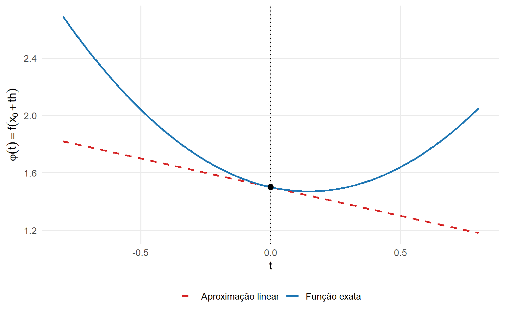
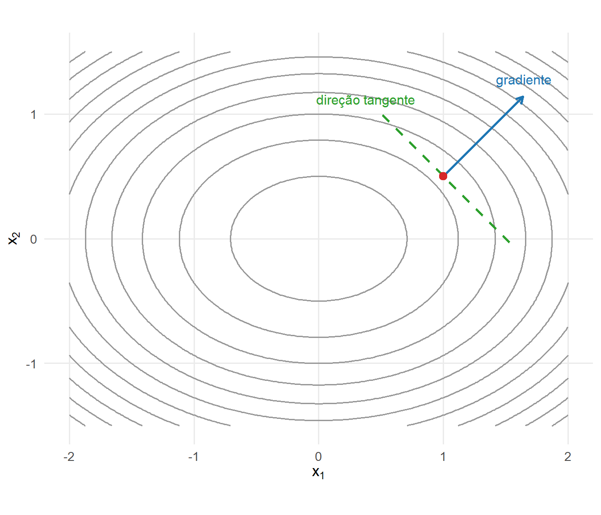
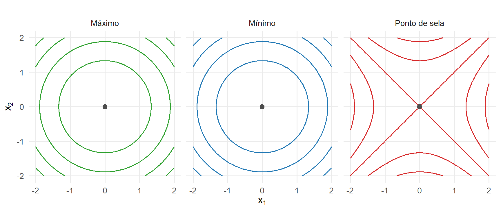
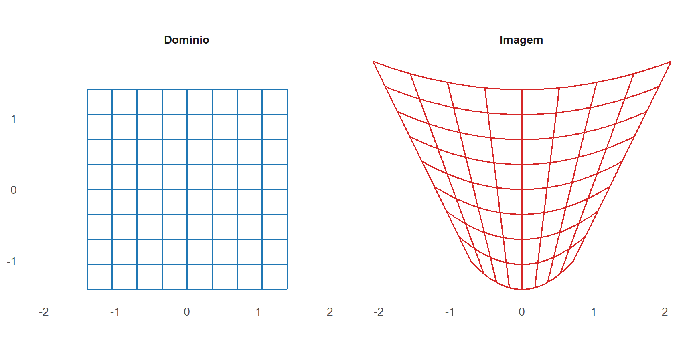

7 Cálculo Diferencial, Integral e Matricial Aplicado à Estatística Multivariada
Os capítulos anteriores desenvolveram a representação vetorial dos dados, a álgebra matricial, os espaços vetoriais, as transformações lineares e as principais decomposições matriciais. Este capítulo estuda funções cujos argumentos e resultados podem ser escalares, vetores ou matrizes.
O cálculo diferencial descreve como essas funções variam localmente. Gradientes, Jacobianas e Hessianas permitem construir aproximações, identificar direções de variação e formular condições de otimização. O cálculo matricial permite diferenciar expressões que envolvem traços, produtos, inversas e determinantes.
O cálculo integral será utilizado para representar probabilidades, esperanças, distribuições marginais e transformações de vetores aleatórios. Nessas transformações, o determinante Jacobiano descreve a alteração local de volume.
O objetivo é reunir as ferramentas de cálculo utilizadas nos capítulos probabilísticos e inferenciais, sem desenvolver antecipadamente os modelos e procedimentos específicos desses capítulos.
7.1 Funções, variações e diferenciais
7.1.1 Tipos de funções
Uma função real de uma variável real possui a forma
\[ f: \mathbb{R} \longrightarrow \mathbb{R}. \]
Em problemas multivariados, o domínio ou o contradomínio pode ter dimensão maior que um. A natureza desses espaços determina a forma da derivada.
Uma função escalar de um vetor é representada por
\[ f: \mathbb{R}^{p} \longrightarrow \mathbb{R}. \]
Para
\[ \mathbf{x} = \begin{bmatrix} x_1\\ \vdots\\ x_p \end{bmatrix}, \]
escreve-se
\[ f(\mathbf{x}) = f(x_1,\ldots,x_p). \]
São exemplos:
\[ f(\mathbf{x}) = \mathbf{a}^{\top}\mathbf{x}, \]
\[ f(\mathbf{x}) = \mathbf{x}^{\top}\mathbf{x}, \]
\[ f(\mathbf{x}) = \mathbf{x}^{\top}\mathbf{A}\mathbf{x} \]
e
\[ f(\mathbf{x}) = \left\| \mathbf{b} - \mathbf{A}\mathbf{x} \right\|^2. \]
Essas funções associam um escalar a cada vetor do domínio.
Neste capítulo, salvo indicação em contrário, \(\|\cdot\|\) aplicada a vetores denota a norma euclidiana definida em Definição 1.10.
Uma função vetorial de um vetor possui a forma
\[ \mathbf{g}: \mathbb{R}^{p} \longrightarrow \mathbb{R}^{q}. \]
Ela pode ser escrita como
\[ \mathbf{g}(\mathbf{x}) = \begin{bmatrix} g_1(\mathbf{x})\\ \vdots\\ g_q(\mathbf{x}) \end{bmatrix}, \]
em que cada componente
\[ g_i: \mathbb{R}^{p} \longrightarrow \mathbb{R} \]
é uma função escalar.
Uma transformação linear é um caso particular:
\[ \mathbf{g}(\mathbf{x}) = \mathbf{A}\mathbf{x}, \qquad \mathbf{A} \in \mathbb{R}^{q\times p}. \]
Também são utilizadas funções escalares de matrizes:
\[ \phi: \mathbb{R}^{m\times n} \longrightarrow \mathbb{R}. \]
São exemplos:
\[ \phi(\mathbf{X}) = \operatorname{tr} \left( \mathbf{A}^{\top}\mathbf{X} \right) \]
e
\[ \phi(\mathbf{X}) = \|\mathbf{X}\|_F^2, \] em que \(\|\cdot\|_F\) denota a norma de Frobenius definida em Definição 6.7.
Uma função matricial de uma matriz possui a forma
\[ \mathcal{G}: \mathbb{R}^{m\times n} \longrightarrow \mathbb{R}^{r\times s}. \]
São exemplos:
\[ \mathcal{G}(\mathbf{X}) = \mathbf{X}^{\top}\mathbf{X}, \]
\[ \mathcal{G}(\mathbf{X}) = \mathbf{A}\mathbf{X}\mathbf{B} \]
e, para matrizes quadradas invertíveis,
\[ \mathcal{G}(\mathbf{X}) = \mathbf{X}^{-1}. \]
A Tabela 7.1 resume os tipos de funções utilizados no capítulo.
| Função | Domínio | Contradomínio | Representação de primeira ordem |
|---|---|---|---|
| \(f(x)\) | \(\mathbb{R}\) | \(\mathbb{R}\) | Derivada escalar |
| \(f(\mathbf{x})\) | \(\mathbb{R}^{p}\) | \(\mathbb{R}\) | Gradiente |
| \(\mathbf{g}(\mathbf{x})\) | \(\mathbb{R}^{p}\) | \(\mathbb{R}^{q}\) | Jacobiana |
| \(\phi(\mathbf{X})\) | \(\mathbb{R}^{m\times n}\) | \(\mathbb{R}\) | Gradiente matricial |
| \(\mathcal{G}(\mathbf{X})\) | \(\mathbb{R}^{m\times n}\) | \(\mathbb{R}^{r\times s}\) | Operador diferencial |
As dimensões do domínio e do contradomínio devem ser identificadas antes da diferenciação. Elas determinam a forma da transformação linear que representa localmente a variação da função e, consequentemente, a dimensão do gradiente, da Jacobiana ou do operador diferencial utilizado para representá-la.
7.1.2 Convenções de derivação
Neste capítulo, o gradiente de uma função escalar de um vetor será um vetor-coluna:
\[ \nabla_{\mathbf{x}}f(\mathbf{x}) = \begin{bmatrix} \dfrac{\partial f}{\partial x_1}\\ \vdots\\ \dfrac{\partial f}{\partial x_p} \end{bmatrix} \in \mathbb{R}^{p}. \]
Para uma função vetorial
\[ \mathbf{g}: \mathbb{R}^{p} \longrightarrow \mathbb{R}^{q}, \]
a Jacobiana será definida por
\[ \mathbf{J}_{\mathbf{g}}(\mathbf{x}) = \begin{bmatrix} \dfrac{\partial g_1}{\partial x_1} & \cdots & \dfrac{\partial g_1}{\partial x_p} \\ \vdots & \ddots & \vdots \\ \dfrac{\partial g_q}{\partial x_1} & \cdots & \dfrac{\partial g_q}{\partial x_p} \end{bmatrix} \in \mathbb{R}^{q\times p}. \]
A Hessiana de uma função escalar será representada por
\[ \nabla_{\mathbf{x}}^2 f(\mathbf{x}) \in \mathbb{R}^{p\times p}. \]
Para uma função escalar de uma matriz,
\[ \phi: \mathbb{R}^{m\times n} \longrightarrow \mathbb{R}, \]
o gradiente matricial terá a mesma dimensão do argumento:
\[ \nabla_{\mathbf{X}}\phi(\mathbf{X}) \in \mathbb{R}^{m\times n}. \]
Ele será identificado pela relação
\[ d\phi = \operatorname{tr} \left[ \left( \nabla_{\mathbf{X}}\phi \right)^{\top} d\mathbf{X} \right]. \]
Essa convenção utiliza o produto interno de Frobenius entre o gradiente e a perturbação da matriz.
7.1.3 Variação de uma função
Considere uma função
\[ f: \mathcal{U} \subseteq \mathbb{R}^{p} \longrightarrow \mathbb{R}, \]
um ponto interior
\[ \mathbf{x} \in \mathcal{U} \]
e uma perturbação
\[ \mathbf{h} \in \mathbb{R}^{p} \]
tal que \(\mathbf{x}+\mathbf{h}\in\mathcal{U}\).
A variação exata da função é
\[ \Delta f = f(\mathbf{x}+\mathbf{h}) - f(\mathbf{x}). \]
Essa diferença mede a alteração total no valor da função. Para perturbações pequenas, procura-se representar sua parcela dominante por uma função linear de \(\mathbf{h}\).
Definição 7.1 (Diferenciabilidade de uma função escalar) A função
\[ f: \mathcal{U} \subseteq \mathbb{R}^{p} \longrightarrow \mathbb{R} \]
é diferenciável em um ponto interior
\[ \mathbf{x} \in \mathcal{U} \]
quando existe uma transformação linear
\[ L_{\mathbf{x}}: \mathbb{R}^{p} \longrightarrow \mathbb{R} \]
tal que
\[ f(\mathbf{x}+\mathbf{h}) - f(\mathbf{x}) = L_{\mathbf{x}}(\mathbf{h}) + r_{\mathbf{x}}(\mathbf{h}), \]
com
\[ \frac{ r_{\mathbf{x}}(\mathbf{h}) }{ \|\mathbf{h}\| } \longrightarrow 0 \qquad \text{quando} \qquad \|\mathbf{h}\| \longrightarrow 0. \]
A função linear \(L_{\mathbf{x}}\) fornece a aproximação de primeira ordem da variação. No espaço euclidiano, existe um único vetor
\[ \nabla_{\mathbf{x}}f(\mathbf{x}) \in \mathbb{R}^{p} \]
tal que
\[ L_{\mathbf{x}}(\mathbf{h}) = \nabla_{\mathbf{x}}f(\mathbf{x})^{\top}\mathbf{h}. \]
Portanto,
\[ f(\mathbf{x}+\mathbf{h}) = f(\mathbf{x}) + \nabla_{\mathbf{x}}f(\mathbf{x})^{\top}\mathbf{h} + r_{\mathbf{x}}(\mathbf{h}), \]
em que o termo residual é pequeno em relação a \(\|\mathbf{h}\|\).
Utilizando a notação de ordem,
\[ f(\mathbf{x}+\mathbf{h}) = f(\mathbf{x}) + \nabla_{\mathbf{x}}f(\mathbf{x})^{\top}\mathbf{h} + o(\|\mathbf{h}\|). \]
A aproximação linear é
\[ f(\mathbf{x}+\mathbf{h}) \approx f(\mathbf{x}) + \nabla_{\mathbf{x}}f(\mathbf{x})^{\top}\mathbf{h}. \]
7.1.4 Diferencial
O diferencial de \(f\) em \(\mathbf{x}\) é a parte linear de sua variação:
\[ df = \nabla_{\mathbf{x}}f(\mathbf{x})^{\top} d\mathbf{x}. \]
Em coordenadas,
\[ df = \sum_{j=1}^{p} \frac{ \partial f }{ \partial x_j } dx_j. \]
O vetor
\[ d\mathbf{x} = \begin{bmatrix} dx_1\\ \vdots\\ dx_p \end{bmatrix} \]
representa o incremento utilizado como argumento da transformação linear que define o diferencial. Assim,
\[ df = \nabla_{\mathbf{x}}f(\mathbf{x})^{\top}d\mathbf{x} \]
é linear em \(d\mathbf{x}\).
A notação diferencial é frequentemente interpretada de maneira informal como uma variação infinitesimal. Formalmente, porém, o diferencial é a aplicação linear que fornece a parte de primeira ordem da variação da função.
Exemplo 7.1 (Diferencial de uma função linear) Considere
\[ f(\mathbf{x}) = \mathbf{a}^{\top}\mathbf{x}, \]
em que \(\mathbf{a}\in\mathbb{R}^{p}\) é constante.
A variação é
\[ \begin{aligned} f(\mathbf{x}+\mathbf{h}) - f(\mathbf{x}) &= \mathbf{a}^{\top} \left( \mathbf{x}+\mathbf{h} \right) - \mathbf{a}^{\top}\mathbf{x}\\ &= \mathbf{a}^{\top}\mathbf{h}. \end{aligned} \]
Logo,
\[ \nabla_{\mathbf{x}}f(\mathbf{x}) = \mathbf{a} \]
e
\[ df = \mathbf{a}^{\top}d\mathbf{x}. \]
Como a função é linear, a aproximação de primeira ordem coincide com a variação exata.
Exemplo 7.2 (Diferencial do quadrado da norma) Considere
\[ f(\mathbf{x}) = \mathbf{x}^{\top}\mathbf{x} = \|\mathbf{x}\|^2. \]
A variação exata é
\[ \begin{aligned} f(\mathbf{x}+\mathbf{h}) - f(\mathbf{x}) &= \left( \mathbf{x}+\mathbf{h} \right)^{\top} \left( \mathbf{x}+\mathbf{h} \right) - \mathbf{x}^{\top}\mathbf{x}\\ &= 2\mathbf{x}^{\top}\mathbf{h} + \mathbf{h}^{\top}\mathbf{h}. \end{aligned} \]
O termo
\[ 2\mathbf{x}^{\top}\mathbf{h} \]
é linear em \(\mathbf{h}\), enquanto
\[ \mathbf{h}^{\top}\mathbf{h} = \|\mathbf{h}\|^2 \]
é de segunda ordem.
Portanto,
\[ df = 2\mathbf{x}^{\top}d\mathbf{x} \]
e
\[ \nabla_{\mathbf{x}}f(\mathbf{x}) = 2\mathbf{x}. \]
7.1.5 Aproximação ao longo de uma direção
Considere
\[ f(x_1,x_2) = x_1^2 + 2x_2^2, \]
o ponto
\[ \mathbf{x}_0 = \begin{bmatrix} 1\\ 1/2 \end{bmatrix} \]
e o vetor unitário
\[ \mathbf{h} = \begin{bmatrix} -4/5\\ 3/5 \end{bmatrix}. \]
A restrição da função à reta que passa por \(\mathbf{x}_0\) na direção \(\mathbf{h}\) é
\[ \varphi(t) = f \left( \mathbf{x}_0+t\mathbf{h} \right). \]
Em torno de \(t=0\),
\[ \varphi(t) \approx \varphi(0) + \varphi'(0)t. \]
A Figura 7.1 compara a função exata ao longo dessa reta com sua aproximação linear.
No ponto \(t=0\), a função e sua aproximação linear possuem o mesmo valor e a mesma inclinação. À medida que \(|t|\) aumenta, os termos de segunda ordem passam a contribuir mais para a variação.
7.1.6 Diferenciabilidade de funções vetoriais
Para uma função
\[ \mathbf{g}: \mathcal{U} \subseteq \mathbb{R}^{p} \longrightarrow \mathbb{R}^{q}, \]
a aproximação de primeira ordem é uma transformação linear de \(\mathbb{R}^{p}\) em \(\mathbb{R}^{q}\).
Definição 7.2 (Diferenciabilidade de uma função vetorial) A função \(\mathbf{g}\) é diferenciável em um ponto interior
\[ \mathbf{x} \in \mathcal{U} \]
quando existe uma matriz
\[ \mathbf{J}_{\mathbf{g}}(\mathbf{x}) \in \mathbb{R}^{q\times p} \]
tal que
\[ \mathbf{g}(\mathbf{x}+\mathbf{h}) - \mathbf{g}(\mathbf{x}) = \mathbf{J}_{\mathbf{g}}(\mathbf{x}) \mathbf{h} + \mathbf{r}_{\mathbf{x}}(\mathbf{h}), \]
com
\[ \frac{ \left\| \mathbf{r}_{\mathbf{x}}(\mathbf{h}) \right\| }{ \|\mathbf{h}\| } \longrightarrow 0 \qquad \text{quando} \qquad \|\mathbf{h}\| \longrightarrow 0. \]
Assim,
\[ \mathbf{g}(\mathbf{x}+\mathbf{h}) \approx \mathbf{g}(\mathbf{x}) + \mathbf{J}_{\mathbf{g}}(\mathbf{x}) \mathbf{h}, \]
e o diferencial é
\[ d\mathbf{g} = \mathbf{J}_{\mathbf{g}}(\mathbf{x}) d\mathbf{x}. \]
Para a transformação linear
\[ \mathbf{g}(\mathbf{x}) = \mathbf{A}\mathbf{x}, \]
tem-se
\[ \mathbf{J}_{\mathbf{g}}(\mathbf{x}) = \mathbf{A} \]
em todos os pontos. Portanto,
\[ d\mathbf{g} = \mathbf{A}\,d\mathbf{x}, \]
e a aproximação linear é exata.
Gradiente e Jacobiana estão associados à mesma ideia de aproximação linear local, mas correspondem a contradomínios diferentes. Para uma função escalar, o gradiente fornece a representação vetorial da aplicação linear que define o diferencial. Para uma função vetorial, a Jacobiana fornece a representação matricial dessa aplicação linear.
7.2 Gradiente, derivada direcional, Jacobiana e Hessiana
7.2.1 Gradiente e derivada direcional
Para uma função diferenciável
\[ f: \mathbb{R}^{p} \longrightarrow \mathbb{R}, \]
o gradiente reúne as derivadas parciais:
\[ \nabla_{\mathbf{x}}f(\mathbf{x}) = \begin{bmatrix} \dfrac{\partial f}{\partial x_1}\\ \vdots\\ \dfrac{\partial f}{\partial x_p} \end{bmatrix}. \]
A derivada parcial em relação a \(x_j\) mede a variação da função na direção do vetor canônico \(\mathbf{e}_j\). A variação em uma direção arbitrária é descrita pela derivada direcional.
Definição 7.3 (Derivada direcional) Seja
\[ \mathbf{u} \in \mathbb{R}^{p}. \]
A derivada direcional de \(f\) no ponto \(\mathbf{x}\) na direção de \(\mathbf{u}\) é
\[ D_{\mathbf{u}}f(\mathbf{x}) = \lim_{t\to0} \frac{ f(\mathbf{x}+t\mathbf{u}) - f(\mathbf{x}) }{ t }, \]
quando esse limite existe.
Considere a função de uma variável
\[ \varphi(t) = f(\mathbf{x}+t\mathbf{u}). \]
Pela regra da cadeia,
\[ \begin{aligned} \varphi'(0) &= \nabla_{\mathbf{x}}f(\mathbf{x})^{\top} \frac{d}{dt} \left( \mathbf{x}+t\mathbf{u} \right) \bigg|_{t=0}\\ &= \nabla_{\mathbf{x}}f(\mathbf{x})^{\top} \mathbf{u}. \end{aligned} \]
Portanto, se \(f\) é diferenciável,
\[ D_{\mathbf{u}}f(\mathbf{x}) = \nabla_{\mathbf{x}}f(\mathbf{x})^{\top} \mathbf{u}. \]
Quando \(\mathbf{u}\) é unitário, a derivada direcional mede a taxa de variação por unidade de deslocamento.
Se \(\theta\) é o ângulo entre \(\nabla_{\mathbf{x}}f(\mathbf{x})\) e \(\mathbf{u}\), então
\[ D_{\mathbf{u}}f(\mathbf{x}) = \left\| \nabla_{\mathbf{x}}f(\mathbf{x}) \right\| \|\mathbf{u}\| \cos\theta. \]
Para \(\|\mathbf{u}\|=1\),
\[ D_{\mathbf{u}}f(\mathbf{x}) = \left\| \nabla_{\mathbf{x}}f(\mathbf{x}) \right\| \cos\theta. \]
Proposição 7.1 (Direções de maior crescimento e redução) Se \(f\) é diferenciável em \(\mathbf{x}\) e
\[ \nabla_{\mathbf{x}}f(\mathbf{x}) \neq \mathbf{0}, \]
então, entre todas as direções unitárias,
\[ \max_{\|\mathbf{u}\|=1} D_{\mathbf{u}}f(\mathbf{x}) = \left\| \nabla_{\mathbf{x}}f(\mathbf{x}) \right\|, \]
e o máximo é atingido na direção
\[ \mathbf{u}_{\max} = \frac{ \nabla_{\mathbf{x}}f(\mathbf{x}) }{ \left\| \nabla_{\mathbf{x}}f(\mathbf{x}) \right\| }. \]
A maior taxa de redução de primeira ordem ocorre na direção oposta:
\[ \mathbf{u}_{\min} = - \frac{ \nabla_{\mathbf{x}}f(\mathbf{x}) }{ \left\| \nabla_{\mathbf{x}}f(\mathbf{x}) \right\| }, \]
com
\[ \min_{\|\mathbf{u}\|=1} D_{\mathbf{u}}f(\mathbf{x}) = - \left\| \nabla_{\mathbf{x}}f(\mathbf{x}) \right\|. \]
Comprovação. Pelo Teorema 1.1,
\[ \begin{aligned} D_{\mathbf{u}}f(\mathbf{x}) &= \nabla_{\mathbf{x}}f(\mathbf{x})^{\top} \mathbf{u}\\ &\leq \left\| \nabla_{\mathbf{x}}f(\mathbf{x}) \right\| \|\mathbf{u}\|. \end{aligned} \]
Para \(\|\mathbf{u}\|=1\),
\[ D_{\mathbf{u}}f(\mathbf{x}) \leq \left\| \nabla_{\mathbf{x}}f(\mathbf{x}) \right\|. \]
A igualdade ocorre quando \(\mathbf{u}\) possui a mesma direção e o mesmo sentido do gradiente. Aplicando o mesmo argumento à direção oposta, obtém-se o resultado para a maior taxa de redução de primeira ordem.
Se
\[ \nabla_{\mathbf{x}}f(\mathbf{x}) = \mathbf{0}, \]
todas as derivadas direcionais de primeira ordem são nulas. Nesse caso, a aproximação de primeira ordem não distingue direções de crescimento ou redução, e o comportamento local passa a depender de termos de ordem superior.
7.2.2 Gradiente e conjuntos de nível
Um conjunto de nível de \(f\) é definido por
\[ \mathcal{S}_c = \left\{ \mathbf{x}\in\mathbb{R}^{p}: f(\mathbf{x})=c \right\}, \]
em que \(c\) é constante.
Considere uma curva diferenciável
\[ \boldsymbol{\gamma}(t) \]
contida em \(\mathcal{S}_c\). Então,
\[ f \left( \boldsymbol{\gamma}(t) \right) = c. \]
Derivando,
\[ \nabla_{\mathbf{x}}f \left( \boldsymbol{\gamma}(t) \right)^{\top} \boldsymbol{\gamma}'(t) = 0. \]
O vetor \(\boldsymbol{\gamma}'(t)\) é tangente ao conjunto de nível. Portanto, o gradiente é ortogonal a todas as direções tangentes.
Quando
\[ \nabla_{\mathbf{x}}f(\mathbf{x}) \neq \mathbf{0}, \]
o gradiente é um vetor normal ao conjunto de nível no ponto \(\mathbf{x}\).
Exemplo 7.3 (Gradiente de uma função quadrática) Considere
\[ f(x_1,x_2) = x_1^2 + 2x_2^2. \]
O gradiente é
\[ \nabla_{\mathbf{x}}f(x_1,x_2) = \begin{bmatrix} 2x_1\\ 4x_2 \end{bmatrix}. \]
No ponto
\[ \mathbf{x}_0 = \begin{bmatrix} 1\\ 1/2 \end{bmatrix}, \]
tem-se
\[ \nabla_{\mathbf{x}}f(\mathbf{x}_0) = \begin{bmatrix} 2\\ 2 \end{bmatrix} \]
e
\[ \left\| \nabla_{\mathbf{x}}f(\mathbf{x}_0) \right\| = 2\sqrt{2}. \]
A direção de maior crescimento é
\[ \mathbf{u}_{\max} = \frac{1}{\sqrt{2}} \begin{bmatrix} 1\\ 1 \end{bmatrix}. \]
Uma direção tangente à curva de nível é
\[ \mathbf{u}_{\mathrm{tan}} = \frac{1}{\sqrt{2}} \begin{bmatrix} -1\\ 1 \end{bmatrix}. \]
Como
\[ \nabla_{\mathbf{x}}f(\mathbf{x}_0)^{\top} \mathbf{u}_{\mathrm{tan}} = 0, \]
a derivada direcional nessa direção é nula.
A Figura 7.2 representa as curvas de nível da função, o gradiente e uma direção tangente no ponto \(\mathbf{x}_0\).

A direção do gradiente depende do ponto. Para a função considerada, as curvas de nível são elipses e o gradiente aponta para fora, perpendicularmente à curva correspondente.
7.2.3 Jacobiana
A derivada de uma função vetorial é representada por sua matriz Jacobiana.
Definição 7.4 (Matriz Jacobiana) Seja
\[ \mathbf{g}: \mathbb{R}^{p} \longrightarrow \mathbb{R}^{q}, \]
com
\[ \mathbf{g}(\mathbf{x}) = \begin{bmatrix} g_1(\mathbf{x})\\ \vdots\\ g_q(\mathbf{x}) \end{bmatrix}. \]
Suponha que as derivadas parciais das componentes de \(\mathbf{g}\) existam no ponto \(\mathbf{x}\). A matriz Jacobiana de \(\mathbf{g}\) nesse ponto é
\[ \mathbf{J}_{\mathbf{g}}(\mathbf{x}) = \begin{bmatrix} \dfrac{\partial g_1}{\partial x_1} & \cdots & \dfrac{\partial g_1}{\partial x_p} \\ \vdots & \ddots & \vdots \\ \dfrac{\partial g_q}{\partial x_1} & \cdots & \dfrac{\partial g_q}{\partial x_p} \end{bmatrix} \in \mathbb{R}^{q\times p}. \]
Cada linha da Jacobiana é o gradiente transposto de uma componente:
\[ \mathbf{J}_{\mathbf{g}}(\mathbf{x}) = \begin{bmatrix} \nabla_{\mathbf{x}}g_1(\mathbf{x})^{\top}\\ \vdots\\ \nabla_{\mathbf{x}}g_q(\mathbf{x})^{\top} \end{bmatrix}. \]
A aproximação de primeira ordem é
\[ \mathbf{g}(\mathbf{x}+\mathbf{h}) = \mathbf{g}(\mathbf{x}) + \mathbf{J}_{\mathbf{g}}(\mathbf{x}) \mathbf{h} + o(\|\mathbf{h}\|). \]
A Jacobiana transforma uma pequena variação no domínio em uma aproximação da variação correspondente no contradomínio.
Exemplo 7.4 (Jacobiana de uma função de \(\mathbb{R}^2\) em \(\mathbb{R}^2\)) Considere
\[ \mathbf{g}(x_1,x_2) = \begin{bmatrix} g_1\\ g_2 \end{bmatrix} = \begin{bmatrix} x_1^2+x_2\\ x_1x_2 \end{bmatrix}. \]
Os gradientes das componentes são
\[ \nabla_{\mathbf{x}}g_1 = \begin{bmatrix} 2x_1\\ 1 \end{bmatrix} \]
e
\[ \nabla_{\mathbf{x}}g_2 = \begin{bmatrix} x_2\\ x_1 \end{bmatrix}. \]
Logo,
\[ \mathbf{J}_{\mathbf{g}}(x_1,x_2) = \begin{bmatrix} 2x_1&1\\ x_2&x_1 \end{bmatrix}. \]
No ponto
\[ \mathbf{x}_0 = \begin{bmatrix} 1\\ 2 \end{bmatrix}, \]
tem-se
\[ \mathbf{J}_{\mathbf{g}}(\mathbf{x}_0) = \begin{bmatrix} 2&1\\ 2&1 \end{bmatrix}. \]
Para uma pequena perturbação
\[ \mathbf{h} = \begin{bmatrix} h_1\\ h_2 \end{bmatrix}, \]
a alteração é aproximada por
\[ \mathbf{g}(\mathbf{x}_0+\mathbf{h}) - \mathbf{g}(\mathbf{x}_0) \approx \begin{bmatrix} 2&1\\ 2&1 \end{bmatrix} \begin{bmatrix} h_1\\ h_2 \end{bmatrix}. \]
Para uma transformação afim
\[ \mathbf{g}(\mathbf{x}) = \mathbf{A}\mathbf{x} + \mathbf{b}, \]
a Jacobiana é constante:
\[ \mathbf{J}_{\mathbf{g}}(\mathbf{x}) = \mathbf{A}. \]
Assim, a parte linear local de uma transformação afim é exatamente a matriz \(\mathbf{A}\), enquanto o termo de translação desaparece na diferenciação.
7.2.4 Regra da cadeia
A composição de funções exige a composição de suas aproximações lineares.
Teorema 7.1 (Regra da cadeia para funções vetoriais) Considere funções diferenciáveis
\[ \mathbf{g}: \mathbb{R}^{p} \longrightarrow \mathbb{R}^{q} \]
e
\[ \mathbf{h}: \mathbb{R}^{q} \longrightarrow \mathbb{R}^{r}. \]
Para
\[ \mathbf{f} = \mathbf{h}\circ\mathbf{g}, \]
a Jacobiana é
\[ \mathbf{J}_{\mathbf{f}}(\mathbf{x}) = \mathbf{J}_{\mathbf{h}} \left( \mathbf{g}(\mathbf{x}) \right) \mathbf{J}_{\mathbf{g}}(\mathbf{x}). \]
As dimensões do produto são
\[ (r\times q) (q\times p) = r\times p. \]
A ordem do produto reflete a composição das aplicações lineares: sobre uma perturbação \(\mathbf{h}_{\mathbf{x}}\in\mathbb{R}^p\), atua primeiro \(\mathbf{J}_{\mathbf{g}}(\mathbf{x})\) e, sobre o resultado, atua \(\mathbf{J}_{\mathbf{h}}(\mathbf{g}(\mathbf{x}))\). Por isso, na representação matricial, a Jacobiana de \(\mathbf{h}\) aparece à esquerda.
No caso de uma composição escalar
\[ f(\mathbf{x}) = h \left( \mathbf{g}(\mathbf{x}) \right), \]
em que
\[ h: \mathbb{R}^{q} \longrightarrow \mathbb{R}, \]
a regra da cadeia assume a forma
\[ \nabla_{\mathbf{x}}f(\mathbf{x}) = \mathbf{J}_{\mathbf{g}}(\mathbf{x})^{\top} \nabla_{\mathbf{y}}h(\mathbf{y}) \bigg|_{ \mathbf{y}=\mathbf{g}(\mathbf{x}) }. \]
Exemplo 7.5 (Gradiente de uma função composta) Considere
\[ \mathbf{g}(\mathbf{x}) = \mathbf{A}\mathbf{x} - \mathbf{b} \]
e
\[ h(\mathbf{y}) = \mathbf{y}^{\top}\mathbf{y}. \]
A função composta é
\[ f(\mathbf{x}) = \left\| \mathbf{A}\mathbf{x} - \mathbf{b} \right\|^2. \]
Como
\[ \mathbf{J}_{\mathbf{g}}(\mathbf{x}) = \mathbf{A} \]
e
\[ \nabla_{\mathbf{y}}h(\mathbf{y}) = 2\mathbf{y}, \]
segue que
\[ \begin{aligned} \nabla_{\mathbf{x}}f(\mathbf{x}) &= \mathbf{A}^{\top} \left[ 2 \left( \mathbf{A}\mathbf{x} - \mathbf{b} \right) \right]\\ &= 2\mathbf{A}^{\top} \left( \mathbf{A}\mathbf{x} - \mathbf{b} \right). \end{aligned} \]
Essa expressão será retomada no estudo das funções de mínimos quadrados.
7.2.5 Hessiana
A Hessiana descreve a variação local do gradiente.
Definição 7.5 (Matriz Hessiana) Seja
\[ f: \mathbb{R}^{p} \longrightarrow \mathbb{R} \]
uma função com derivadas parciais de segunda ordem no ponto considerado. Sua matriz Hessiana é
\[ \nabla_{\mathbf{x}}^2f(\mathbf{x}) = \begin{bmatrix} \dfrac{\partial^2f}{\partial x_1^2} & \cdots & \dfrac{\partial^2f}{\partial x_1\partial x_p} \\ \vdots & \ddots & \vdots \\ \dfrac{\partial^2f}{\partial x_p\partial x_1} & \cdots & \dfrac{\partial^2f}{\partial x_p^2} \end{bmatrix} \in \mathbb{R}^{p\times p}. \]
A Hessiana é a Jacobiana do gradiente:
\[ \nabla_{\mathbf{x}}^2f(\mathbf{x}) = \mathbf{J}_{\nabla f}(\mathbf{x}). \]
Se as derivadas parciais de segunda ordem são contínuas em uma vizinhança do ponto, então
\[ \frac{ \partial^2f }{ \partial x_i\partial x_j } = \frac{ \partial^2f }{ \partial x_j\partial x_i }, \]
e a Hessiana é simétrica:
\[ \nabla_{\mathbf{x}}^2f(\mathbf{x}) = \nabla_{\mathbf{x}}^2f(\mathbf{x})^{\top}. \]
O segundo diferencial é
\[ d^2f = d\mathbf{x}^{\top} \nabla_{\mathbf{x}}^2f(\mathbf{x}) d\mathbf{x}. \] O segundo diferencial é uma forma quadrática no incremento \(d\mathbf{x}\) e descreve a contribuição local de segunda ordem da função.
Para uma direção \(\mathbf{u}\), considere novamente
\[ \varphi(t) = f(\mathbf{x}+t\mathbf{u}). \]
A primeira derivada é
\[ \varphi'(0) = \nabla_{\mathbf{x}}f(\mathbf{x})^{\top} \mathbf{u}. \]
A segunda derivada é
\[ \varphi''(0) = \mathbf{u}^{\top} \nabla_{\mathbf{x}}^2f(\mathbf{x}) \mathbf{u}. \]
Essa forma quadrática representa a segunda taxa de variação de \(f\) ao longo da reta que passa por \(\mathbf{x}\) na direção \(\mathbf{u}\) e fornece a medida de curvatura direcional utilizada neste capítulo.
Exemplo 7.6 (Hessiana de uma função quadrática) Considere
\[ f(x_1,x_2) = x_1^2 + 2x_2^2. \]
O gradiente é
\[ \nabla_{\mathbf{x}}f(x_1,x_2) = \begin{bmatrix} 2x_1\\ 4x_2 \end{bmatrix}. \]
A Hessiana é
\[ \nabla_{\mathbf{x}}^2f(x_1,x_2) = \begin{bmatrix} 2&0\\ 0&4 \end{bmatrix}. \]
Para
\[ \mathbf{u} = \begin{bmatrix} u_1\\ u_2 \end{bmatrix}, \]
a curvatura direcional é
\[ \begin{aligned} \mathbf{u}^{\top} \nabla_{\mathbf{x}}^2f \mathbf{u} &= \begin{bmatrix} u_1&u_2 \end{bmatrix} \begin{bmatrix} 2&0\\ 0&4 \end{bmatrix} \begin{bmatrix} u_1\\ u_2 \end{bmatrix}\\ &= 2u_1^2 + 4u_2^2. \end{aligned} \]
Ela é positiva para todo vetor não nulo. Para vetores unitários, a segunda taxa de variação é maior nas direções com maior componente em módulo no segundo eixo.
Para a função quadrática
\[ f(\mathbf{x}) = \frac{1}{2} \mathbf{x}^{\top} \mathbf{A} \mathbf{x} - \mathbf{b}^{\top}\mathbf{x} + c, \]
com \(\mathbf{A}\) simétrica,
\[ \nabla_{\mathbf{x}}f(\mathbf{x}) = \mathbf{A}\mathbf{x} - \mathbf{b} \]
e
\[ \nabla_{\mathbf{x}}^2f(\mathbf{x}) = \mathbf{A}. \]
A curvatura da função é determinada pela matriz \(\mathbf{A}\). A relação entre a Hessiana, a aproximação de segunda ordem, a convexidade e a classificação de pontos estacionários será desenvolvida na próxima seção.
7.3 Aproximações de Taylor e classificação local
7.3.1 Aproximação de Taylor de primeira ordem
A diferenciabilidade fornece uma aproximação linear da função em uma vizinhança de um ponto.
Para
\[ f: \mathbb{R}^{p} \longrightarrow \mathbb{R}, \]
diferenciável em \(\mathbf{x}_0\),
\[ f(\mathbf{x}_0+\mathbf{h}) = f(\mathbf{x}_0) + \nabla_{\mathbf{x}}f(\mathbf{x}_0)^{\top}\mathbf{h} + o(\|\mathbf{h}\|). \]
Tomando
\[ \mathbf{h} = \mathbf{x}-\mathbf{x}_0, \]
obtém-se
\[ f(\mathbf{x}) \approx f(\mathbf{x}_0) + \nabla_{\mathbf{x}}f(\mathbf{x}_0)^{\top} \left( \mathbf{x}-\mathbf{x}_0 \right). \]
Essa é a aproximação de Taylor de primeira ordem.
Para funções de uma variável, ela corresponde à reta tangente. Para funções de duas variáveis, corresponde ao plano tangente. Em dimensão geral, corresponde a uma função afim que aproxima localmente \(f\).
Exemplo 7.7 (Aproximação linear de uma função quadrática) Considere
\[ f(x_1,x_2) = x_1^2 + 2x_2^2 \]
e o ponto
\[ \mathbf{x}_0 = \begin{bmatrix} 1\\ 1/2 \end{bmatrix}. \]
Tem-se
\[ f(\mathbf{x}_0) = 1^2 + 2 \left( \frac12 \right)^2 = \frac32 \]
e
\[ \nabla_{\mathbf{x}}f(\mathbf{x}_0) = \begin{bmatrix} 2\\ 2 \end{bmatrix}. \]
A aproximação de primeira ordem é
\[ \begin{aligned} f(\mathbf{x}) &\approx \frac32 + \begin{bmatrix} 2&2 \end{bmatrix} \left[ \begin{bmatrix} x_1\\ x_2 \end{bmatrix} - \begin{bmatrix} 1\\ 1/2 \end{bmatrix} \right]\\ &= \frac32 + 2(x_1-1) + 2 \left( x_2-\frac12 \right). \end{aligned} \]
A aproximação linear descreve a variação determinada pelo gradiente. Ela não representa a curvatura da função.
7.3.2 Aproximação de Taylor de segunda ordem
Quando \(f\) é duas vezes diferenciável, a Hessiana permite incorporar a curvatura local.
Teorema 7.2 (Expansão de Taylor de segunda ordem) Se
\[ f: \mathbb{R}^{p} \longrightarrow \mathbb{R} \]
possui derivadas de segunda ordem contínuas em uma vizinhança de \(\mathbf{x}_0\), então
\[ \begin{aligned} f(\mathbf{x}_0+\mathbf{h}) &= f(\mathbf{x}_0) + \nabla_{\mathbf{x}}f(\mathbf{x}_0)^{\top}\mathbf{h}\\ &\quad+ \frac12 \mathbf{h}^{\top} \nabla_{\mathbf{x}}^2f(\mathbf{x}_0) \mathbf{h} + o(\|\mathbf{h}\|^2). \end{aligned} \]
Em termos de \(\mathbf{x}-\mathbf{x}_0\),
\[ \begin{aligned} f(\mathbf{x}) &\approx f(\mathbf{x}_0) + \nabla_{\mathbf{x}}f(\mathbf{x}_0)^{\top} \left( \mathbf{x}-\mathbf{x}_0 \right)\\ &\quad+ \frac12 \left( \mathbf{x}-\mathbf{x}_0 \right)^{\top} \nabla_{\mathbf{x}}^2f(\mathbf{x}_0) \left( \mathbf{x}-\mathbf{x}_0 \right). \end{aligned} \]
Os três termos possuem funções distintas:
- \(f(\mathbf{x}_0)\) determina o nível da aproximação;
- o gradiente determina a variação local de primeira ordem;
- a Hessiana determina a variação local de segunda ordem.
Quando
\[ \nabla_{\mathbf{x}}f(\mathbf{x}_0) = \mathbf{0}, \]
o termo linear desaparece. Se a forma quadrática associada à Hessiana é não degenerada, ela fornece o termo dominante da variação local. Quando essa forma se anula em alguma direção, termos de ordem superior podem ser necessários para determinar o comportamento da função.
Exemplo 7.8 (Expansão de uma função quadrática) Considere
\[ f(\mathbf{x}) = \frac12 \mathbf{x}^{\top} \mathbf{A} \mathbf{x} - \mathbf{b}^{\top}\mathbf{x} + c, \]
com \(\mathbf{A}\) simétrica.
O gradiente é
\[ \nabla_{\mathbf{x}}f(\mathbf{x}) = \mathbf{A}\mathbf{x} - \mathbf{b}, \]
e a Hessiana é
\[ \nabla_{\mathbf{x}}^2f(\mathbf{x}) = \mathbf{A}. \]
Como a função é quadrática, a expansão de Taylor de segunda ordem é exata:
\[ \begin{aligned} f(\mathbf{x}_0+\mathbf{h}) &= f(\mathbf{x}_0) + \left( \mathbf{A}\mathbf{x}_0-\mathbf{b} \right)^{\top}\mathbf{h}\\ &\quad+ \frac12 \mathbf{h}^{\top}\mathbf{A}\mathbf{h}. \end{aligned} \]
Não existe termo residual de ordem superior.
7.3.3 Pontos estacionários
Definição 7.6 (Ponto estacionário) Um ponto
\[ \mathbf{x}^{\star} \]
é estacionário para uma função diferenciável \(f\) quando
\[ \nabla_{\mathbf{x}}f \left( \mathbf{x}^{\star} \right) = \mathbf{0}. \]
Em um ponto estacionário, todas as derivadas direcionais de primeira ordem são nulas:
\[ D_{\mathbf{u}}f \left( \mathbf{x}^{\star} \right) = 0 \]
para toda direção \(\mathbf{u}\).
Proposição 7.2 (Condição necessária de primeira ordem) Se \(f\) é diferenciável em um ponto interior \(\mathbf{x}^{\star}\) de seu domínio e possui nesse ponto um máximo ou mínimo local, então
\[ \nabla_{\mathbf{x}}f \left( \mathbf{x}^{\star} \right) = \mathbf{0}. \]
Comprovação. Se
\[ \nabla_{\mathbf{x}}f \left( \mathbf{x}^{\star} \right) \neq \mathbf{0}, \]
considere a direção unitária
\[ \mathbf{u} = \frac{ \nabla_{\mathbf{x}}f \left( \mathbf{x}^{\star} \right) }{ \left\| \nabla_{\mathbf{x}}f \left( \mathbf{x}^{\star} \right) \right\| }. \]
Então,
\[ D_{\mathbf{u}}f \left( \mathbf{x}^{\star} \right) = \left\| \nabla_{\mathbf{x}}f \left( \mathbf{x}^{\star} \right) \right\| > 0, \]
enquanto
\[ D_{-\mathbf{u}}f \left( \mathbf{x}^{\star} \right) = - \left\| \nabla_{\mathbf{x}}f \left( \mathbf{x}^{\star} \right) \right\| < 0. \]
Assim, existem direções locais de aumento e de redução, o que contradiz a existência de um extremo local interior. Portanto,
\[ \nabla_{\mathbf{x}}f \left( \mathbf{x}^{\star} \right) = \mathbf{0}. \]
Como
\[ \nabla_{\mathbf{x}}f \left( \mathbf{x}^{\star} \right) = \mathbf{0}, \]
tem-se
\[ D_{\mathbf{u}}f \left( \mathbf{x}^{\star} \right) = 0 \]
para toda direção \(\mathbf{u}\).
A recíproca da proposição anterior não é verdadeira em geral: um ponto estacionário pode ser mínimo local, máximo local ou ponto de sela.
7.3.4 Classificação pela Hessiana
Teorema 7.3 (Teste da Hessiana em um ponto estacionário) Considere uma função duas vezes continuamente diferenciável em uma vizinhança de um ponto estacionário \(\mathbf{x}^{\star}\).
Se
\[ \nabla_{\mathbf{x}}^2f \left( \mathbf{x}^{\star} \right) \succ \mathbf{0}, \]
então \(\mathbf{x}^{\star}\) é um mínimo local estrito.
Se
\[ \nabla_{\mathbf{x}}^2f \left( \mathbf{x}^{\star} \right) \prec \mathbf{0}, \]
então \(\mathbf{x}^{\star}\) é um máximo local estrito.
Se
\[ \nabla_{\mathbf{x}}^2f \left( \mathbf{x}^{\star} \right) \]
é indefinida, então \(\mathbf{x}^{\star}\) é um ponto de sela.
Se a Hessiana é apenas semidefinida positiva ou semidefinida negativa, o teste pode ser inconclusivo. (Apostol, 1969)
Comprovação. Como
\[ \nabla_{\mathbf{x}}f \left( \mathbf{x}^{\star} \right) = \mathbf{0}, \]
a expansão de Taylor fornece
\[ f \left( \mathbf{x}^{\star}+\mathbf{h} \right) - f \left( \mathbf{x}^{\star} \right) = \frac12 \mathbf{h}^{\top} \nabla_{\mathbf{x}}^2f \left( \mathbf{x}^{\star} \right) \mathbf{h} + o(\|\mathbf{h}\|^2). \]
Considere inicialmente
\[ \mathbf{H} = \nabla_{\mathbf{x}}^2f \left( \mathbf{x}^{\star} \right) \succ \mathbf{0}. \]
Como \(\mathbf{H}\) é simétrica e positiva definida, seu menor autovalor satisfaz
\[ \lambda_{\min}(\mathbf{H}) > 0. \]
Portanto,
\[ \mathbf{h}^{\top}\mathbf{H}\mathbf{h} \geq \lambda_{\min}(\mathbf{H}) \|\mathbf{h}\|^2. \]
Além disso,
\[ o(\|\mathbf{h}\|^2) = \varepsilon(\mathbf{h}) \|\mathbf{h}\|^2, \]
com
\[ \varepsilon(\mathbf{h}) \longrightarrow 0 \]
quando \(\mathbf{h}\to\mathbf{0}\).
Logo, para \(\mathbf{h}\) suficientemente pequeno,
\[ \left| \varepsilon(\mathbf{h}) \right| < \frac14 \lambda_{\min}(\mathbf{H}). \]
Assim,
\[ \begin{aligned} f \left( \mathbf{x}^{\star}+\mathbf{h} \right) - f \left( \mathbf{x}^{\star} \right) &\geq \frac12 \lambda_{\min}(\mathbf{H}) \|\mathbf{h}\|^2 - \frac14 \lambda_{\min}(\mathbf{H}) \|\mathbf{h}\|^2\\ &= \frac14 \lambda_{\min}(\mathbf{H}) \|\mathbf{h}\|^2\\ &> 0 \end{aligned} \]
para todo \(\mathbf{h}\neq\mathbf{0}\) suficientemente pequeno. Portanto, \(\mathbf{x}^{\star}\) é um mínimo local estrito.
O caso de Hessiana negativa definida é obtido aplicando o mesmo argumento a \(-f\), produzindo um máximo local estrito.
Se a Hessiana é indefinida, existem vetores unitários \(\mathbf{u}_1\) e \(\mathbf{u}_2\) tais que
\[ \mathbf{u}_1^{\top} \mathbf{H} \mathbf{u}_1 > 0 \]
e
\[ \mathbf{u}_2^{\top} \mathbf{H} \mathbf{u}_2 < 0. \]
Considere perturbações da forma
\[ \mathbf{h} = t\mathbf{u}_j. \]
Então,
\[ f \left( \mathbf{x}^{\star} + t\mathbf{u}_j \right) - f \left( \mathbf{x}^{\star} \right) = \frac12 t^2 \mathbf{u}_j^{\top} \mathbf{H} \mathbf{u}_j + o(t^2). \]
Para \(|t|\) suficientemente pequeno, o sinal dessa diferença coincide com o sinal da forma quadrática. Assim, a função assume valores maiores que
\[ f \left( \mathbf{x}^{\star} \right) \]
em uma direção e menores em outra, arbitrariamente próximos de \(\mathbf{x}^{\star}\). Portanto, \(\mathbf{x}^{\star}\) é um ponto de sela.
Exemplo 7.9 (Mínimo, máximo e ponto de sela) Considere as funções
\[ f_1(x_1,x_2) = x_1^2+x_2^2, \]
\[ f_2(x_1,x_2) = - x_1^2-x_2^2 \]
e
\[ f_3(x_1,x_2) = x_1^2-x_2^2. \]
As três possuem ponto estacionário na origem.
Para \(f_1\),
\[ \nabla_{\mathbf{x}}^2f_1 = \begin{bmatrix} 2&0\\ 0&2 \end{bmatrix} \succ \mathbf{0}. \]
Logo, a origem é um mínimo estrito.
Para \(f_2\),
\[ \nabla_{\mathbf{x}}^2f_2 = \begin{bmatrix} -2&0\\ 0&-2 \end{bmatrix} \prec \mathbf{0}. \]
Logo, a origem é um máximo estrito.
Para \(f_3\),
\[ \nabla_{\mathbf{x}}^2f_3 = \begin{bmatrix} 2&0\\ 0&-2 \end{bmatrix}. \]
A Hessiana possui um autovalor positivo e outro negativo. Portanto, a origem é um ponto de sela.
A Figura 7.3 compara as curvas de nível dos três casos.

7.3.5 Caso inconclusivo
Considere
\[ f(x_1,x_2) = x_1^4+x_2^4. \]
A origem é um ponto estacionário e
\[ \nabla_{\mathbf{x}}^2f(0,0) = \begin{bmatrix} 0&0\\ 0&0 \end{bmatrix}. \]
A Hessiana é semidefinida positiva, mas não positiva definida. Ainda assim,
\[ f(x_1,x_2) \geq 0 \]
para todos os pontos, com igualdade somente na origem. Portanto, a origem é um mínimo estrito.
Considere agora
\[ g(x_1,x_2) = x_1^4-x_2^4. \]
A Hessiana na origem também é nula. Entretanto, a função assume valores positivos e negativos em qualquer vizinhança da origem. O ponto é de sela.
Esses exemplos mostram que, quando o termo quadrático se anula em determinadas direções, é necessário examinar termos de ordem superior ou utilizar outro argumento.
7.4 Convexidade e concavidade
7.4.1 Conjuntos convexos
Definição 7.7 (Conjunto convexo) Um conjunto
\[ \mathcal{C} \subseteq \mathbb{R}^{p} \]
é convexo quando, para quaisquer
\[ \mathbf{x},\mathbf{y} \in \mathcal{C} \]
e
\[ t\in[0,1], \]
tem-se
\[ t\mathbf{x} + (1-t)\mathbf{y} \in \mathcal{C}. \]
O vetor
\[ t\mathbf{x} + (1-t)\mathbf{y} \]
percorre o segmento de reta entre \(\mathbf{x}\) e \(\mathbf{y}\). Assim, um conjunto é convexo quando contém todos os segmentos que ligam seus pontos.
Subespaços, conjuntos afins como hiperplanos, bolas e regiões elipsoidais da forma
\[ \left\{ \mathbf{x}: \left( \mathbf{x}-\boldsymbol{\mu} \right)^{\top} \mathbf{A} \left( \mathbf{x}-\boldsymbol{\mu} \right) \leq c \right\}, \]
com \(\mathbf{A}\succ\mathbf{0}\) e \(c>0\), e o cone das matrizes positivas definidas são exemplos de conjuntos convexos.
7.4.2 Funções convexas
Definição 7.8 (Função convexa) Uma função
\[ f: \mathcal{C} \longrightarrow \mathbb{R}, \]
definida em um conjunto convexo \(\mathcal{C}\), é convexa quando
\[ f \left( t\mathbf{x} + (1-t)\mathbf{y} \right) \leq t f(\mathbf{x}) + (1-t)f(\mathbf{y}) \]
para quaisquer \(\mathbf{x},\mathbf{y}\in\mathcal{C}\) e \(t\in[0,1]\).
A função é estritamente convexa quando a desigualdade é estrita para \(\mathbf{x}\neq\mathbf{y}\) e \(t\in(0,1)\).
Uma função é côncava quando \(-f\) é convexa.
Geometricamente, o gráfico de uma função convexa permanece abaixo das cordas que ligam dois pontos de seu gráfico.
7.4.3 Caracterização de primeira ordem
Teorema 7.4 (Critério de primeira ordem para convexidade) Se \(f\) é diferenciável em um conjunto convexo aberto \(\mathcal{C}\), então \(f\) é convexa se, e somente se,
\[ f(\mathbf{y}) \geq f(\mathbf{x}) + \nabla_{\mathbf{x}}f(\mathbf{x})^{\top} \left( \mathbf{y}-\mathbf{x} \right) \]
para quaisquer \(\mathbf{x},\mathbf{y}\in\mathcal{C}\).(Boyd; Vandenberghe, 2004)
A expressão
\[ f(\mathbf{x}) + \nabla_{\mathbf{x}}f(\mathbf{x})^{\top} \left( \mathbf{y}-\mathbf{x} \right) \]
é a aproximação afim determinada pelo plano tangente em \(\mathbf{x}\). Para uma função convexa, essa aproximação é um limite inferior global.
7.4.4 Caracterização pela Hessiana
Teorema 7.5 (Critério da Hessiana para convexidade) Considere uma função
\[ f: \mathcal{C} \longrightarrow \mathbb{R} \]
duas vezes continuamente diferenciável em um conjunto convexo aberto
\[ \mathcal{C} \subseteq \mathbb{R}^{p}. \]
Então, \(f\) é convexa em \(\mathcal{C}\) se, e somente se,
\[ \nabla_{\mathbf{x}}^2f(\mathbf{x}) \succeq \mathbf{0} \]
para todo
\[ \mathbf{x} \in \mathcal{C}. \]
Analogamente, \(f\) é côncava em \(\mathcal{C}\) se, e somente se,
\[ \nabla_{\mathbf{x}}^2f(\mathbf{x}) \preceq \mathbf{0} \]
para todo
\[ \mathbf{x} \in \mathcal{C}. \]
Além disso, se
\[ \nabla_{\mathbf{x}}^2f(\mathbf{x}) \succ \mathbf{0} \]
para todo \(\mathbf{x}\in\mathcal{C}\), então \(f\) é estritamente convexa. Se
\[ \nabla_{\mathbf{x}}^2f(\mathbf{x}) \prec \mathbf{0} \]
para todo \(\mathbf{x}\in\mathcal{C}\), então \(f\) é estritamente côncava.
Comprovação. Considere dois pontos distintos
\[ \mathbf{x}, \mathbf{y} \in \mathcal{C} \]
e defina
\[ g(t) = f \left( \mathbf{x} + t(\mathbf{y}-\mathbf{x}) \right), \qquad 0\leq t\leq1. \]
Como \(\mathcal{C}\) é convexo, todo o segmento entre \(\mathbf{x}\) e \(\mathbf{y}\) pertence a \(\mathcal{C}\).
Pela regra da cadeia,
\[ g''(t) = (\mathbf{y}-\mathbf{x})^{\top} \nabla_{\mathbf{x}}^2 f \left( \mathbf{x} + t(\mathbf{y}-\mathbf{x}) \right) (\mathbf{y}-\mathbf{x}). \]
Se
\[ \nabla_{\mathbf{x}}^2f(\mathbf{z}) \succeq \mathbf{0} \]
para todo \(\mathbf{z}\in\mathcal{C}\), então
\[ g''(t)\geq0, \]
e, portanto, \(g\) é convexa em \([0,1]\). Como isso vale para qualquer segmento contido em \(\mathcal{C}\), \(f\) é convexa.
Reciprocamente, se \(f\) é convexa, então a restrição de \(f\) a qualquer reta é convexa. Para qualquer
\[ \mathbf{x}\in\mathcal{C} \]
e qualquer direção
\[ \mathbf{u}\in\mathbb{R}^{p}, \]
considere
\[ h(t) = f(\mathbf{x}+t\mathbf{u}) \]
para \(t\) suficientemente próximo de zero. A convexidade de \(h\) implica
\[ h''(0)\geq0. \]
Como
\[ h''(0) = \mathbf{u}^{\top} \nabla_{\mathbf{x}}^2f(\mathbf{x}) \mathbf{u}, \]
tem-se
\[ \mathbf{u}^{\top} \nabla_{\mathbf{x}}^2f(\mathbf{x}) \mathbf{u} \geq0 \]
para todo \(\mathbf{u}\). Logo,
\[ \nabla_{\mathbf{x}}^2f(\mathbf{x}) \succeq \mathbf{0}. \]
O resultado para funções côncavas segue aplicando o argumento a \(-f\).
Se a Hessiana é positiva definida em todo ponto, então, para \(\mathbf{x}\neq\mathbf{y}\),
\[ g''(t)>0 \]
ao longo do segmento. Logo, \(g\) é estritamente convexa, e portanto \(f\) é estritamente convexa. O caso de Hessiana negativa definida é análogo.
A positividade da Hessiana deve ser verificada para todos os pontos do domínio considerado, e não somente em um ponto estacionário.
A condição
\[ \nabla_{\mathbf{x}}^2f(\mathbf{x}) \succ \mathbf{0} \]
em todo o domínio é suficiente para convexidade estrita, mas não é necessária. Uma função estritamente convexa pode possuir Hessiana singular em pontos isolados. Por exemplo,
\[ f(x)=x^4 \]
é estritamente convexa em \(\mathbb{R}\), embora
\[ f''(0)=0. \]
7.4.5 Consequências para otimização
Proposição 7.3 (Pontos estacionários de funções convexas) Se \(f\) é diferenciável e convexa em um conjunto convexo, qualquer ponto
\[ \mathbf{x}^{\star} \]
que satisfaça
\[ \nabla_{\mathbf{x}}f \left( \mathbf{x}^{\star} \right) = \mathbf{0} \]
é um mínimo global.
Se \(f\) é estritamente convexa e existe um ponto estacionário \(\mathbf{x}^{\star}\), então esse ponto é o único minimizador global. (Boyd; Vandenberghe, 2004)
Comprovação. Pela caracterização de primeira ordem,
\[ f(\mathbf{x}) \geq f \left( \mathbf{x}^{\star} \right) + \nabla_{\mathbf{x}}f \left( \mathbf{x}^{\star} \right)^{\top} \left( \mathbf{x}-\mathbf{x}^{\star} \right). \]
Como o gradiente é nulo,
\[ f(\mathbf{x}) \geq f \left( \mathbf{x}^{\star} \right) \]
para todo \(\mathbf{x}\) do domínio.
Se a função é estritamente convexa, a igualdade só pode ocorrer em \(\mathbf{x}=\mathbf{x}^{\star}\).
Essa propriedade diferencia a otimização convexa da otimização geral. Para uma função convexa, não existem mínimos locais que deixem de ser globais.
7.4.6 Funções quadráticas
Considere
\[ f(\mathbf{x}) = \frac12 \mathbf{x}^{\top}\mathbf{A}\mathbf{x} - \mathbf{b}^{\top}\mathbf{x} + c, \]
com \(\mathbf{A}\) simétrica.
Como
\[ \nabla_{\mathbf{x}}^2f(\mathbf{x}) = \mathbf{A}, \]
tem-se:
- \(f\) é convexa se \(\mathbf{A}\succeq\mathbf{0}\);
- \(f\) é estritamente convexa se \(\mathbf{A}\succ\mathbf{0}\);
- \(f\) é côncava se \(\mathbf{A}\preceq\mathbf{0}\);
- \(f\) é estritamente côncava se \(\mathbf{A}\prec\mathbf{0}\).
Se
\[ \mathbf{A} \succ \mathbf{0}, \]
o ponto estacionário satisfaz
\[ \mathbf{A}\mathbf{x}^{\star} = \mathbf{b}, \]
e
\[ \mathbf{x}^{\star} = \mathbf{A}^{-1}\mathbf{b}. \]
Esse ponto é o único mínimo global.
Se
\[ \mathbf{A} \succeq \mathbf{0} \]
é singular, a existência de minimizadores depende de \(\mathbf{b}\).
Quando
\[ \mathbf{b} \in \mathcal{C}(\mathbf{A}), \]
o sistema
\[ \mathbf{A}\mathbf{x} = \mathbf{b} \]
possui solução. Nesse caso, os minimizadores formam o conjunto afim
\[ \mathbf{x}_0 + \mathcal{N}(\mathbf{A}), \]
em que \(\mathbf{x}_0\) é uma solução particular.
Quando
\[ \mathbf{b} \notin \mathcal{C}(\mathbf{A}), \]
a função é ilimitada inferiormente e não possui minimizador.
De fato, como \(\mathbf{A}\) é simétrica,
\[ \mathcal{C}(\mathbf{A})^{\perp} = \mathcal{N}(\mathbf{A}). \]
Assim, existe
\[ \mathbf{z} \in \mathcal{N}(\mathbf{A}) \]
tal que
\[ \mathbf{b}^{\top}\mathbf{z} \neq 0. \]
Ao longo da reta
\[ \mathbf{x}=t\mathbf{z}, \]
o termo quadrático é nulo e
\[ f(t\mathbf{z}) = - t\mathbf{b}^{\top}\mathbf{z} + c, \]
que pode tender a \(-\infty\) escolhendo o sinal apropriado de \(t\).
7.5 Otimização sem restrições
Um problema de minimização sem restrições possui a forma
\[ \min_{\mathbf{x}\in\mathbb{R}^{p}} f(\mathbf{x}). \]
A Proposição 7.2 estabelece a condição necessária de primeira ordem para extremos locais interiores, enquanto o Teorema 7.3 utiliza a Hessiana para classificar pontos estacionários quando o teste de segunda ordem é conclusivo.
No caso convexo, a Proposição 7.3 mostra que um ponto estacionário é minimizador global. Esses resultados fornecem as condições de otimalidade; a questão seguinte é construir um procedimento iterativo para localizar esses pontos.
7.5.1 Método de Newton
O método de Newton utiliza a aproximação quadrática local de \(f\).
Em torno de um ponto \(\mathbf{x}^{(t)}\),
\[ \begin{aligned} f(\mathbf{x}) &\approx f \left( \mathbf{x}^{(t)} \right) + \nabla_{\mathbf{x}}f \left( \mathbf{x}^{(t)} \right)^{\top} \left( \mathbf{x} - \mathbf{x}^{(t)} \right)\\ &\quad+ \frac12 \left( \mathbf{x} - \mathbf{x}^{(t)} \right)^{\top} \nabla_{\mathbf{x}}^2f \left( \mathbf{x}^{(t)} \right) \left( \mathbf{x} - \mathbf{x}^{(t)} \right). \end{aligned} \]
Defina
\[ \mathbf{g}^{(t)} = \nabla_{\mathbf{x}}f \left( \mathbf{x}^{(t)} \right) \]
e
\[ \mathbf{H}^{(t)} = \nabla_{\mathbf{x}}^2f \left( \mathbf{x}^{(t)} \right). \]
Escrevendo
\[ \mathbf{d} = \mathbf{x} - \mathbf{x}^{(t)}, \]
o modelo quadrático local pode ser representado por
\[ m_t(\mathbf{d}) = f \left( \mathbf{x}^{(t)} \right) + \left( \mathbf{g}^{(t)} \right)^{\top} \mathbf{d} + \frac12 \mathbf{d}^{\top} \mathbf{H}^{(t)} \mathbf{d}. \]
Seu gradiente em relação a \(\mathbf{d}\) é
\[ \nabla_{\mathbf{d}}m_t(\mathbf{d}) = \mathbf{g}^{(t)} + \mathbf{H}^{(t)} \mathbf{d}. \]
Se
\[ \mathbf{H}^{(t)} \succ \mathbf{0}, \]
o modelo quadrático é estritamente convexo e possui um único minimizador. Esse minimizador, denominado direção de Newton, satisfaz
\[ \mathbf{H}^{(t)} \mathbf{d}^{(t)} = - \mathbf{g}^{(t)}. \]
Quando \(\mathbf{H}^{(t)}\) é invertível,
\[ \mathbf{d}^{(t)} = - \left( \mathbf{H}^{(t)} \right)^{-1} \mathbf{g}^{(t)}. \]
A atualização de Newton com passo completo é
\[ \mathbf{x}^{(t+1)} = \mathbf{x}^{(t)} + \mathbf{d}^{(t)}, \]
ou, equivalentemente,
\[ \mathbf{x}^{(t+1)} = \mathbf{x}^{(t)} - \left[ \nabla_{\mathbf{x}}^2f \left( \mathbf{x}^{(t)} \right) \right]^{-1} \nabla_{\mathbf{x}}f \left( \mathbf{x}^{(t)} \right). \]
Na implementação computacional, é preferível resolver o sistema linear
\[ \mathbf{H}^{(t)} \mathbf{d}^{(t)} = - \mathbf{g}^{(t)} \]
sem calcular explicitamente a inversa da Hessiana.
Se a Hessiana é apenas invertível, mas não positiva definida, a solução desse sistema é um ponto estacionário do modelo quadrático, mas pode não ser seu minimizador. Nesse caso, a direção de Newton também pode deixar de ser uma direção de descida para a função original.
Proposição 7.4 (Direção de Newton como direção de descida) Suponha que
\[ \nabla_{\mathbf{x}}f \left( \mathbf{x}^{(t)} \right) \neq \mathbf{0} \]
e
\[ \nabla_{\mathbf{x}}^2f \left( \mathbf{x}^{(t)} \right) \succ \mathbf{0}. \]
Então a direção de Newton \(\mathbf{d}^{(t)}\) é uma direção de descida para \(f\) em \(\mathbf{x}^{(t)}\), isto é,
\[ \nabla_{\mathbf{x}}f \left( \mathbf{x}^{(t)} \right)^{\top} \mathbf{d}^{(t)} < 0. \]
Comprovação. Como
\[ \mathbf{d}^{(t)} = - \left( \mathbf{H}^{(t)} \right)^{-1} \mathbf{g}^{(t)}, \]
tem-se
\[ \begin{aligned} \left( \mathbf{g}^{(t)} \right)^{\top} \mathbf{d}^{(t)} &= - \left( \mathbf{g}^{(t)} \right)^{\top} \left( \mathbf{H}^{(t)} \right)^{-1} \mathbf{g}^{(t)}. \end{aligned} \]
Como \(\mathbf{H}^{(t)}\succ\mathbf{0}\), também
\[ \left( \mathbf{H}^{(t)} \right)^{-1} \succ \mathbf{0}. \]
Logo, para \(\mathbf{g}^{(t)}\neq\mathbf{0}\),
\[ \left( \mathbf{g}^{(t)} \right)^{\top} \left( \mathbf{H}^{(t)} \right)^{-1} \mathbf{g}^{(t)} > 0, \]
e, portanto,
\[ \left( \mathbf{g}^{(t)} \right)^{\top} \mathbf{d}^{(t)} < 0. \]
O passo completo corresponde a
\[ \alpha_t = 1. \]
Uma forma mais geral da atualização é
\[ \mathbf{x}^{(t+1)} = \mathbf{x}^{(t)} + \alpha_t \mathbf{d}^{(t)}, \qquad 0<\alpha_t\leq1. \]
A escolha de \(\alpha_t<1\) produz um passo de Newton amortecido. Esse recurso pode ser utilizado quando o modelo quadrático local ainda não representa adequadamente a função ao longo de um passo completo.
Assim, a construção da direção e a escolha do comprimento da etapa são operações distintas. Métodos numéricos de otimização costumam combinar a direção de Newton com procedimentos de controle da etapa (Boyd; Vandenberghe, 2004).
Exemplo 7.10 (Newton para uma função quadrática) Considere
\[ f(\mathbf{x}) = \frac12 \mathbf{x}^{\top}\mathbf{A}\mathbf{x} - \mathbf{b}^{\top}\mathbf{x}, \]
com \(\mathbf{A}\succ\mathbf{0}\).
O gradiente é
\[ \nabla_{\mathbf{x}}f(\mathbf{x}) = \mathbf{A}\mathbf{x} - \mathbf{b}, \]
e a Hessiana é
\[ \nabla_{\mathbf{x}}^2f(\mathbf{x}) = \mathbf{A}. \]
A atualização de Newton é
\[ \begin{aligned} \mathbf{x}^{(t+1)} &= \mathbf{x}^{(t)} - \mathbf{A}^{-1} \left( \mathbf{A}\mathbf{x}^{(t)} - \mathbf{b} \right)\\ &= \mathbf{A}^{-1}\mathbf{b}. \end{aligned} \]
Assim, para uma função quadrática com Hessiana constante e positiva definida, uma etapa completa de Newton conduz exatamente ao único minimizador,
\[ \mathbf{x}^{\star} = \mathbf{A}^{-1}\mathbf{b}, \]
independentemente do ponto inicial.
7.6 Otimização com restrições de igualdade
Considere o problema
\[ \min_{\mathbf{x}\in\mathbb{R}^{p}} f(\mathbf{x}) \]
sujeito a
\[ \mathbf{c}(\mathbf{x}) = \mathbf{0}, \]
em que
\[ \mathbf{c}: \mathbb{R}^{p} \longrightarrow \mathbb{R}^{m} \]
é uma função vetorial de restrições:
\[ \mathbf{c}(\mathbf{x}) = \begin{bmatrix} c_1(\mathbf{x})\\ \vdots\\ c_m(\mathbf{x}) \end{bmatrix}. \]
O conjunto viável é
\[ \mathcal{F} = \left\{ \mathbf{x}: \mathbf{c}(\mathbf{x}) = \mathbf{0} \right\}. \]
Em um ponto regular, as linhas da Jacobiana das restrições são linearmente independentes. O espaço tangente ao conjunto viável é então
\[ \mathcal{T}_{\mathbf{x}} = \mathcal{N} \left( \mathbf{J}_{\mathbf{c}}(\mathbf{x}) \right). \]
Portanto, uma direção tangente \(\mathbf{d}\) satisfaz
\[ \mathbf{J}_{\mathbf{c}}(\mathbf{x}) \mathbf{d} = \mathbf{0}. \]
O espaço normal correspondente é
\[ \mathcal{T}_{\mathbf{x}}^{\perp} = \mathcal{C} \left( \mathbf{J}_{\mathbf{c}}(\mathbf{x})^{\top} \right), \]
isto é, o espaço gerado pelos gradientes das restrições.
Em um ótimo local regular \(\mathbf{x}^{\star}\), a derivada direcional de \(f\) deve ser nula em todas as direções tangentes:
\[ \nabla_{\mathbf{x}}f \left( \mathbf{x}^{\star} \right)^{\top} \mathbf{d} = 0 \]
para todo
\[ \mathbf{d} \in \mathcal{T}_{\mathbf{x}^{\star}}. \]
Consequentemente,
\[ \nabla_{\mathbf{x}}f \left( \mathbf{x}^{\star} \right) \in \mathcal{T}_{\mathbf{x}^{\star}}^{\perp} = \mathcal{C} \left[ \mathbf{J}_{\mathbf{c}} \left( \mathbf{x}^{\star} \right)^{\top} \right]. \]
7.6.1 Multiplicadores de Lagrange
Teorema 7.6 (Condição de Lagrange) Considere funções continuamente diferenciáveis
\[ f: \mathbb{R}^{p} \longrightarrow \mathbb{R} \]
e
\[ \mathbf{c}: \mathbb{R}^{p} \longrightarrow \mathbb{R}^{m}. \]
Seja \(\mathbf{x}^{\star}\) um ótimo local do problema
\[ \min_{\mathbf{x}} f(\mathbf{x}) \]
sujeito a
\[ \mathbf{c}(\mathbf{x}) = \mathbf{0}. \]
Suponha que as linhas da Jacobiana
\[ \mathbf{J}_{\mathbf{c}} \left( \mathbf{x}^{\star} \right) \]
sejam linearmente independentes.
Essa condição equivale a
\[ \operatorname{posto} \left[ \mathbf{J}_{\mathbf{c}} \left( \mathbf{x}^{\star} \right) \right] = m. \]
Então existe um vetor
\[ \boldsymbol{\lambda}^{\star} \in \mathbb{R}^{m} \]
tal que
\[ \nabla_{\mathbf{x}}f \left( \mathbf{x}^{\star} \right) + \mathbf{J}_{\mathbf{c}} \left( \mathbf{x}^{\star} \right)^{\top} \boldsymbol{\lambda}^{\star} = \mathbf{0}. \]
Comprovação. Como \(\mathbf{x}^{\star}\) é um ótimo local regular, a derivada direcional da função objetivo é nula em todas as direções tangentes ao conjunto viável. Portanto,
\[ \nabla_{\mathbf{x}}f \left( \mathbf{x}^{\star} \right)^{\top} \mathbf{d} = 0 \]
para todo
\[ \mathbf{d} \in \mathcal{N} \left[ \mathbf{J}_{\mathbf{c}} \left( \mathbf{x}^{\star} \right) \right]. \]
Logo,
\[ \nabla_{\mathbf{x}}f \left( \mathbf{x}^{\star} \right) \in \mathcal{N} \left[ \mathbf{J}_{\mathbf{c}} \left( \mathbf{x}^{\star} \right) \right]^{\perp}. \]
Pelo Teorema 3.6,
\[ \mathcal{N} \left[ \mathbf{J}_{\mathbf{c}} \left( \mathbf{x}^{\star} \right) \right]^{\perp} = \mathcal{C} \left[ \mathbf{J}_{\mathbf{c}} \left( \mathbf{x}^{\star} \right)^{\top} \right]. \]
Assim, existe um vetor
\[ \boldsymbol{\mu}^{\star} \in \mathbb{R}^{m} \]
tal que
\[ \nabla_{\mathbf{x}}f \left( \mathbf{x}^{\star} \right) = \mathbf{J}_{\mathbf{c}} \left( \mathbf{x}^{\star} \right)^{\top} \boldsymbol{\mu}^{\star}. \]
Definindo
\[ \boldsymbol{\lambda}^{\star} = - \boldsymbol{\mu}^{\star}, \]
obtém-se
\[ \nabla_{\mathbf{x}}f \left( \mathbf{x}^{\star} \right) + \mathbf{J}_{\mathbf{c}} \left( \mathbf{x}^{\star} \right)^{\top} \boldsymbol{\lambda}^{\star} = \mathbf{0}. \]
A função lagrangiana é
\[ \mathcal{L} \left( \mathbf{x}, \boldsymbol{\lambda} \right) = f(\mathbf{x}) + \boldsymbol{\lambda}^{\top} \mathbf{c}(\mathbf{x}). \]
Sob a condição de regularidade do teorema, as condições necessárias de primeira ordem podem ser escritas como
\[ \nabla_{\mathbf{x}} \mathcal{L} \left( \mathbf{x}, \boldsymbol{\lambda} \right) = \mathbf{0} \]
e
\[ \nabla_{\boldsymbol{\lambda}} \mathcal{L} \left( \mathbf{x}, \boldsymbol{\lambda} \right) = \mathbf{c}(\mathbf{x}) = \mathbf{0}. \]
Essas condições identificam candidatos a ótimo restrito. No caso geral, elas não são suficientes para garantir mínimo ou máximo. A classificação exige condições adicionais sobre a função objetivo, as restrições e a variação de segunda ordem nas direções tangentes.
Os multiplicadores ajustam a condição de gradiente nulo para levar em conta as direções que não estão disponíveis devido às restrições.
Exemplo 7.11 (Otimização com restrição de norma) Considere o problema
\[ \max_{\mathbf{x}} \mathbf{a}^{\top}\mathbf{x}, \]
em que
\[ \mathbf{a} \neq \mathbf{0}, \]
sujeito à restrição
\[ \mathbf{x}^{\top}\mathbf{x} = 1. \]
A restrição exige que \(\mathbf{x}\) tenha norma euclidiana unitária:
\[ \|\mathbf{x}\| = 1. \]
Escrevendo-a na forma
\[ c(\mathbf{x}) = \mathbf{x}^{\top}\mathbf{x} - 1 = 0, \]
o problema pode ser tratado pelos multiplicadores de Lagrange.
Para manter a formulação como um problema de minimização, considere a função objetivo
\[ f(\mathbf{x}) = - \mathbf{a}^{\top}\mathbf{x}. \]
A lagrangiana é
\[ \mathcal{L}(\mathbf{x},\lambda) = - \mathbf{a}^{\top}\mathbf{x} + \lambda \left( \mathbf{x}^{\top}\mathbf{x}-1 \right). \]
As condições de primeira ordem são obtidas diferenciando a lagrangiana em relação a \(\mathbf{x}\) e ao multiplicador \(\lambda\).
Em relação a \(\mathbf{x}\),
\[ \nabla_{\mathbf{x}} \mathcal{L}(\mathbf{x},\lambda) = -\mathbf{a}+ 2\lambda\mathbf{x}. \]
Portanto, em um ponto candidato à solução,
\[ - \mathbf{a} + 2\lambda\mathbf{x} = \mathbf{0},\]
de modo que
\[ \mathbf{x} = \frac{1}{2\lambda} \mathbf{a}. \]
Em relação a \(\lambda\),
\[ \frac{ \partial \mathcal{L}(\mathbf{x},\lambda) }{ \partial\lambda } = \mathbf{x}^{\top}\mathbf{x}-1. \]
Assim, a segunda condição de primeira ordem simplesmente recupera a restrição:
\[ \mathbf{x}^{\top}\mathbf{x} = 1. \]
Substituindo
\[ \mathbf{x} = \frac{1}{2\lambda} \mathbf{a} \]
na restrição,
\[ \left( \frac{1}{2\lambda} \mathbf{a} \right)^{\top} \left( \frac{1}{2\lambda} \mathbf{a} \right) = 1, \]
e, portanto,
\[ \frac{ \mathbf{a}^{\top}\mathbf{a} }{ 4\lambda^2 } = 1. \]
Como
\[ \mathbf{a}^{\top}\mathbf{a} = \|\mathbf{a}\|^2, \]
segue que
\[ 4\lambda^2 = \|\mathbf{a}\|^2, \]
ou
\[ \lambda = \pm \frac{ \|\mathbf{a}\| }{ 2 }. \]
Consequentemente, existem dois pontos candidatos:
\[ \mathbf{x}_1 = \frac{ \mathbf{a} }{ \|\mathbf{a}\| } \]
e
\[ \mathbf{x}_2 = - \frac{ \mathbf{a} }{ \|\mathbf{a}\| }. \]
Para identificar qual deles maximiza a função objetivo original, avalie
\[ \mathbf{a}^{\top}\mathbf{x}. \]
No primeiro ponto,
\[ \mathbf{a}^{\top}\mathbf{x}_1 = \mathbf{a}^{\top} \frac{ \mathbf{a} }{ \|\mathbf{a}\| } = \frac{ \|\mathbf{a}\|^2 }{ \|\mathbf{a}\| } = \|\mathbf{a}\|. \]
No segundo,
\[ \mathbf{a}^{\top}\mathbf{x}_2 = - \|\mathbf{a}\|. \]
Logo, o máximo é atingido em
\[ \mathbf{x}^{\star} = \frac{ \mathbf{a} }{ \|\mathbf{a}\| }, \]
e o valor máximo é
\[ \mathbf{a}^{\top}\mathbf{x}^{\star} = \|\mathbf{a}\|. \]
Geometricamente, a solução mostra que, entre todos os vetores unitários, o produto interno com \(\mathbf{a}\) é máximo quando \(\mathbf{x}\) possui a mesma direção e o mesmo sentido de \(\mathbf{a}\).
O resultado também coincide com o caso de igualdade no Teorema 1.1, pois
\[ \mathbf{a}^{\top}\mathbf{x} \leq \|\mathbf{a}\| \|\mathbf{x}\| = \|\mathbf{a}\|, \]
e a igualdade ocorre quando \(\mathbf{x}\) é proporcional a \(\mathbf{a}\).
Se \(\mathbf{a}=\mathbf{0}\), a função objetivo é constante e todo vetor unitário satisfaz
\[ \mathbf{a}^{\top}\mathbf{x} = 0. \]
Nesse caso, todo vetor que satisfaz a restrição é uma solução ótima.
7.6.2 Relação com problemas de autovalores
Considere o problema
\[ \max_{\mathbf{x}} \mathbf{x}^{\top}\mathbf{A}\mathbf{x} \]
sujeito a
\[ \mathbf{x}^{\top}\mathbf{x} = 1, \]
com \(\mathbf{A}\) simétrica.
A lagrangiana é
\[ \mathcal{L}(\mathbf{x},\lambda) = \mathbf{x}^{\top}\mathbf{A}\mathbf{x} - \lambda \left( \mathbf{x}^{\top}\mathbf{x} - 1 \right). \]
A condição de primeira ordem é
\[ 2\mathbf{A}\mathbf{x} - 2\lambda\mathbf{x} = \mathbf{0}, \]
ou
\[ \mathbf{A}\mathbf{x} = \lambda\mathbf{x}. \]
Portanto, todo ponto regular estacionário do problema restrito é um autovetor de \(\mathbf{A}\), e o valor da função objetivo nesse ponto é o autovalor correspondente.
Pelo Teorema 5.5, desenvolvido no capítulo de decomposição espectral,
\[ \max_{\|\mathbf{x}\|=1} \mathbf{x}^{\top}\mathbf{A}\mathbf{x} = \lambda_{\max}(\mathbf{A}), \]
e
\[ \min_{\|\mathbf{x}\|=1} \mathbf{x}^{\top}\mathbf{A}\mathbf{x} = \lambda_{\min}(\mathbf{A}). \]
Assim, os multiplicadores de Lagrange produzem a equação de autovalores como condição de estacionariedade, enquanto o resultado espectral identifica quais desses pontos realizam os extremos globais.
7.6.3 Restrições lineares
Considere o problema quadrático
\[ \min_{\mathbf{x}} \frac12 \mathbf{x}^{\top}\mathbf{A}\mathbf{x} - \mathbf{b}^{\top}\mathbf{x} \]
sujeito a
\[ \mathbf{C}\mathbf{x} = \mathbf{d}, \]
em que
\[ \mathbf{A} \in \mathbb{R}^{p\times p} \]
é simétrica,
\[ \mathbf{C} \in \mathbb{R}^{m\times p} \]
e
\[ \mathbf{d} \in \mathbb{R}^{m}. \]
A lagrangiana é
\[ \mathcal{L} \left( \mathbf{x}, \boldsymbol{\lambda} \right) = \frac12 \mathbf{x}^{\top}\mathbf{A}\mathbf{x} - \mathbf{b}^{\top}\mathbf{x} + \boldsymbol{\lambda}^{\top} \left( \mathbf{C}\mathbf{x}-\mathbf{d} \right). \]
As condições de primeira ordem são
\[ \mathbf{A}\mathbf{x} - \mathbf{b} + \mathbf{C}^{\top} \boldsymbol{\lambda} = \mathbf{0} \]
e
\[ \mathbf{C}\mathbf{x} = \mathbf{d}. \]
Essas condições podem ser organizadas no sistema em blocos
\[ \begin{bmatrix} \mathbf{A}&\mathbf{C}^{\top}\\ \mathbf{C}&\mathbf{0} \end{bmatrix} \begin{bmatrix} \mathbf{x}\\ \boldsymbol{\lambda} \end{bmatrix} = \begin{bmatrix} \mathbf{b}\\ \mathbf{d} \end{bmatrix}. \]
Esse sistema em blocos reúne as condições de primeira ordem do problema restrito.
Se
\[ \mathbf{A} \succ \mathbf{0} \]
e \(\mathbf{C}\) possui posto linha completo, a função objetivo é estritamente convexa e o conjunto definido por
\[ \mathbf{C}\mathbf{x} = \mathbf{d} \]
é afim. Quando esse conjunto é não vazio, as condições de primeira ordem identificam o único minimizador global.
Mais geralmente, para uma matriz \(\mathbf{A}\) semidefinida positiva, a unicidade depende de a forma quadrática ser positiva nas direções viáveis não nulas, isto é,
\[ \mathbf{z}^{\top}\mathbf{A}\mathbf{z} > 0 \]
para todo
\[ \mathbf{z} \neq \mathbf{0} \]
tal que
\[ \mathbf{C}\mathbf{z} = \mathbf{0}. \]
Sem condições desse tipo, a resolução do sistema fornece apenas candidatos que satisfazem as condições de primeira ordem.
As ferramentas desta seção serão aplicadas a funções de resíduos, critérios quadráticos e funções de parâmetros matriciais.
7.7 Derivadas de formas lineares, quadráticas e funções de resíduos
7.7.1 Formas lineares e bilineares
Considere
\[ f(\mathbf{x}) = \mathbf{a}^{\top}\mathbf{x}, \]
em que \(\mathbf{a}\in\mathbb{R}^{p}\) é constante. Como
\[ df = \mathbf{a}^{\top}d\mathbf{x}, \]
tem-se
\[ \nabla_{\mathbf{x}}f = \mathbf{a} \]
e
\[ \nabla_{\mathbf{x}}^2f = \mathbf{0}. \]
Para a forma bilinear
\[ f(\mathbf{x},\mathbf{y}) = \mathbf{x}^{\top}\mathbf{A}\mathbf{y}, \]
com
\[ \mathbf{A} \in \mathbb{R}^{p\times q}, \]
o diferencial é
\[ df = d\mathbf{x}^{\top}\mathbf{A}\mathbf{y} + \mathbf{x}^{\top}\mathbf{A}\,d\mathbf{y}. \]
Reescrevendo o primeiro termo,
\[ d\mathbf{x}^{\top}\mathbf{A}\mathbf{y} = \left( \mathbf{A}\mathbf{y} \right)^{\top} d\mathbf{x}, \]
e o segundo,
\[ \mathbf{x}^{\top}\mathbf{A}\,d\mathbf{y} = \left( \mathbf{A}^{\top}\mathbf{x} \right)^{\top} d\mathbf{y}. \]
Logo,
\[ \nabla_{\mathbf{x}}f = \mathbf{A}\mathbf{y} \]
e
\[ \nabla_{\mathbf{y}}f = \mathbf{A}^{\top}\mathbf{x}. \]
7.7.2 Derivadas de formas quadráticas
As formas quadráticas foram definidas em Definição 2.23, e o Proposição 2.10 mostrou que seu valor depende apenas da parte simétrica da matriz. O objetivo agora é obter suas derivadas.
Considere
\[ f(\mathbf{x}) = \mathbf{x}^{\top}\mathbf{A}\mathbf{x}, \]
com
\[ \mathbf{A} \in \mathbb{R}^{p\times p}. \]
O diferencial é
\[ \begin{aligned} df &= d\mathbf{x}^{\top} \mathbf{A}\mathbf{x} + \mathbf{x}^{\top} \mathbf{A}\,d\mathbf{x}\\ &= \mathbf{x}^{\top} \mathbf{A}^{\top} d\mathbf{x} + \mathbf{x}^{\top} \mathbf{A} d\mathbf{x}\\ &= \left[ \left( \mathbf{A} + \mathbf{A}^{\top} \right) \mathbf{x} \right]^{\top} d\mathbf{x}. \end{aligned} \]
Portanto,
\[ \nabla_{\mathbf{x}}f(\mathbf{x}) = \left( \mathbf{A} + \mathbf{A}^{\top} \right) \mathbf{x} \]
e
\[ \nabla_{\mathbf{x}}^2f(\mathbf{x}) = \mathbf{A} + \mathbf{A}^{\top}. \]
A forma quadrática depende somente da parte simétrica da matriz:
\[ \mathbf{A}_{s} = \frac{ \mathbf{A} + \mathbf{A}^{\top} }{ 2 }. \]
Assim,
\[ \mathbf{x}^{\top}\mathbf{A}\mathbf{x} = \mathbf{x}^{\top}\mathbf{A}_{s}\mathbf{x}, \]
e
\[ \nabla_{\mathbf{x}} \left( \mathbf{x}^{\top}\mathbf{A}\mathbf{x} \right) = 2\mathbf{A}_{s}\mathbf{x}. \]
Quando \(\mathbf{A}\) é simétrica,
\[ \nabla_{\mathbf{x}} \left( \mathbf{x}^{\top}\mathbf{A}\mathbf{x} \right) = 2\mathbf{A}\mathbf{x} \]
e
\[ \nabla_{\mathbf{x}}^2 \left( \mathbf{x}^{\top}\mathbf{A}\mathbf{x} \right) = 2\mathbf{A}. \]
Proposição 7.5 (Derivadas de uma forma quadrática deslocada) Se \(\mathbf{A}\) é simétrica e
\[ f(\mathbf{x}) = \left( \mathbf{x} - \boldsymbol{\mu} \right)^{\top} \mathbf{A} \left( \mathbf{x} - \boldsymbol{\mu} \right), \]
então
\[ \nabla_{\mathbf{x}}f(\mathbf{x}) = 2\mathbf{A} \left( \mathbf{x} - \boldsymbol{\mu} \right) \]
e
\[ \nabla_{\mathbf{x}}^2f(\mathbf{x}) = 2\mathbf{A}. \]
Comprovação. Defina
\[ \mathbf{z} = \mathbf{x} - \boldsymbol{\mu}. \]
Como
\[ d\mathbf{z} = d\mathbf{x}, \]
tem-se
\[ \begin{aligned} df &= d\mathbf{z}^{\top}\mathbf{A}\mathbf{z} + \mathbf{z}^{\top}\mathbf{A}\,d\mathbf{z}\\ &= 2\mathbf{z}^{\top}\mathbf{A}\,d\mathbf{x}, \end{aligned} \]
pois \(\mathbf{A}\) é simétrica. Portanto,
\[ \nabla_{\mathbf{x}}f = 2\mathbf{A}\mathbf{z} = 2\mathbf{A} \left( \mathbf{x} - \boldsymbol{\mu} \right). \]
A diferenciação do gradiente fornece a Hessiana.
Utilizando a classificação de positividade apresentada em Definição 2.24, se
\[ \mathbf{A} \succeq \mathbf{0}, \]
a forma quadrática deslocada é convexa. Se
\[ \mathbf{A} \succ \mathbf{0}, \]
ela é estritamente convexa e possui mínimo único em
\[ \mathbf{x} = \boldsymbol{\mu}. \]
Se
\[ \mathbf{A} \succeq \mathbf{0} \]
é singular, todos os vetores da forma
\[ \mathbf{x} = \boldsymbol{\mu} + \mathbf{z}, \qquad \mathbf{z} \in \mathcal{N}(\mathbf{A}), \]
também minimizam a função. Portanto, a unicidade ocorre quando
\[ \mathbf{A} \succ \mathbf{0}. \]
7.7.3 Derivadas da norma euclidiana
Retomando a norma euclidiana definida em Definição 1.10,
\[ \|\mathbf{x}\|^2 = \mathbf{x}^{\top}\mathbf{x}. \]
Portanto,
segue que
\[ \nabla_{\mathbf{x}} \|\mathbf{x}\|^2 = 2\mathbf{x} \]
e
\[ \nabla_{\mathbf{x}}^2 \|\mathbf{x}\|^2 = 2\mathbf{I}_p. \]
Para \(\mathbf{x}\neq\mathbf{0}\),
\[ \|\mathbf{x}\| = \left( \mathbf{x}^{\top}\mathbf{x} \right)^{1/2}. \]
Pela regra da cadeia,
\[ \nabla_{\mathbf{x}}\|\mathbf{x}\| = \frac{ \mathbf{x} }{ \|\mathbf{x}\| }. \]
A norma euclidiana não é diferenciável em \(\mathbf{x}=\mathbf{0}\).
7.7.4 Funções de resíduos lineares
Considere
\[ \mathbf{A} \in \mathbb{R}^{q\times p}, \qquad \mathbf{b} \in \mathbb{R}^{q}, \]
e defina o vetor de resíduos
\[ \mathbf{r}(\mathbf{x}) = \mathbf{b} - \mathbf{A}\mathbf{x}. \]
Sua Jacobiana é
\[ \mathbf{J}_{\mathbf{r}}(\mathbf{x}) = - \mathbf{A}. \]
A soma de quadrados dos resíduos é
\[ f(\mathbf{x}) = \|\mathbf{r}(\mathbf{x})\|^2 = \left( \mathbf{b} - \mathbf{A}\mathbf{x} \right)^{\top} \left( \mathbf{b} - \mathbf{A}\mathbf{x} \right). \]
Pela regra da cadeia,
\[ \begin{aligned} \nabla_{\mathbf{x}}f(\mathbf{x}) &= 2 \mathbf{J}_{\mathbf{r}}(\mathbf{x})^{\top} \mathbf{r}(\mathbf{x})\\ &= -2\mathbf{A}^{\top} \left( \mathbf{b} - \mathbf{A}\mathbf{x} \right). \end{aligned} \]
Equivalentemente,
\[ \nabla_{\mathbf{x}}f(\mathbf{x}) = 2\mathbf{A}^{\top} \left( \mathbf{A}\mathbf{x} - \mathbf{b} \right). \]
A Hessiana é
\[ \nabla_{\mathbf{x}}^2f(\mathbf{x}) = 2\mathbf{A}^{\top}\mathbf{A}. \]
A Hessiana é constante e não depende de \(\mathbf{x}\). Além disso,
\[ \mathbf{z}^{\top} \mathbf{A}^{\top}\mathbf{A} \mathbf{z} = \|\mathbf{A}\mathbf{z}\|^2 \geq 0, \]
para todo
\[ \mathbf{z} \in \mathbb{R}^{p}. \]
Portanto,
\[ \mathbf{A}^{\top}\mathbf{A} \succeq \mathbf{0}. \]
Como
\[ \mathbf{A}^{\top}\mathbf{A} \succeq \mathbf{0}, \]
a função é convexa.
Se \(\mathbf{A}\) possui posto coluna completo,
\[ \mathbf{A}^{\top}\mathbf{A} \succ \mathbf{0}, \]
e a função é estritamente convexa.
As equações normais já foram introduzidas geometricamente em Definição 3.21, a partir da projeção sobre o espaço coluna. No Capítulo 6, Proposição 6.22 apresentou a solução por meio da SVD e da pseudoinversa. Nesta seção, o mesmo resultado será obtido a partir da condição de primeira ordem do cálculo diferencial.
7.7.5 Equações normais
Proposição 7.6 (Caracterização dos mínimos quadrados pelas equações normais) Considere
\[ f(\mathbf{x}) = \left\| \mathbf{b} - \mathbf{A}\mathbf{x} \right\|^2, \]
com
\[ \mathbf{A} \in \mathbb{R}^{q\times p} \]
e
\[ \mathbf{b} \in \mathbb{R}^{q}. \]
Um vetor
\[ \widehat{\mathbf{x}} \in \mathbb{R}^{p} \]
é minimizador global de \(f\) se, e somente se, satisfaz as equações normais
\[ \mathbf{A}^{\top} \mathbf{A} \widehat{\mathbf{x}} = \mathbf{A}^{\top} \mathbf{b}. \]
Equivalentemente,
\[ \mathbf{A}^{\top} \left( \mathbf{b} - \mathbf{A}\widehat{\mathbf{x}} \right) = \mathbf{0}. \]
Se \(\mathbf{A}\) possui posto coluna completo, o minimizador é único e dado por
\[ \widehat{\mathbf{x}} = \left( \mathbf{A}^{\top}\mathbf{A} \right)^{-1} \mathbf{A}^{\top}\mathbf{b}. \]
Comprovação. A derivação anterior fornece
\[ \nabla_{\mathbf{x}}f(\mathbf{x}) = 2 \mathbf{A}^{\top} \left( \mathbf{A}\mathbf{x} - \mathbf{b} \right) \]
e
\[ \nabla_{\mathbf{x}}^2f(\mathbf{x}) = 2 \mathbf{A}^{\top}\mathbf{A} \succeq \mathbf{0}. \]
Logo, \(f\) é convexa. Pelo Proposição 7.3, um ponto é minimizador global se, e somente se, seu gradiente é nulo. Portanto,
\[ \nabla_{\mathbf{x}}f \left( \widehat{\mathbf{x}} \right) = \mathbf{0} \]
se, e somente se,
\[ \mathbf{A}^{\top} \mathbf{A} \widehat{\mathbf{x}} = \mathbf{A}^{\top} \mathbf{b}. \]
Se \(\mathbf{A}\) possui posto coluna completo,
\[ \mathbf{A}^{\top}\mathbf{A} \succ \mathbf{0}, \]
de modo que \(f\) é estritamente convexa e possui, no máximo, um minimizador. Como
\[ \mathbf{A}^{\top}\mathbf{A} \]
é invertível, esse minimizador é
\[ \widehat{\mathbf{x}} = \left( \mathbf{A}^{\top}\mathbf{A} \right)^{-1} \mathbf{A}^{\top}\mathbf{b}. \]
A condição
\[ \mathbf{A}^{\top} \left( \mathbf{b} - \mathbf{A}\widehat{\mathbf{x}} \right) = \mathbf{0} \]
mostra que o resíduo de mínimos quadrados é ortogonal ao espaço coluna de \(\mathbf{A}\).
O caso de posto deficiente, o conjunto de todos os minimizadores e a solução de menor norma foram estabelecidos em Proposição 6.22. Aqui, o objetivo é destacar que as equações normais surgem diretamente da condição de primeira ordem do problema de otimização.
Exemplo 7.12 (Média como solução de mínimos quadrados) Considere valores
\[ z_1,\ldots,z_n \]
e a função
\[ f(m) = \sum_{i=1}^{n} \left( z_i-m \right)^2. \]
A derivada é
\[ \begin{aligned} f'(m) &= -2 \sum_{i=1}^{n} \left( z_i-m \right)\\ &= 2nm - 2 \sum_{i=1}^{n}z_i. \end{aligned} \]
A condição
\[ f'(m)=0 \]
fornece
\[ m = \frac{1}{n} \sum_{i=1}^{n}z_i. \]
Como
\[ f''(m) = 2n > 0, \]
a média aritmética é o único minimizador da soma dos quadrados dos desvios.
7.7.6 Mínimos quadrados ponderados
Considere pesos não negativos
\[ \omega_1,\ldots,\omega_q \geq 0 \]
e a matriz diagonal
\[ \boldsymbol{\Omega} = \operatorname{diag} \left( \omega_1,\ldots,\omega_q \right). \]
A função de mínimos quadrados ponderados é
\[ f_{\omega}(\mathbf{x}) = \left( \mathbf{b} - \mathbf{A}\mathbf{x} \right)^{\top} \boldsymbol{\Omega} \left( \mathbf{b} - \mathbf{A}\mathbf{x} \right). \]
Como \(\boldsymbol{\Omega}\) é diagonal e, portanto, simétrica,
\[ \nabla_{\mathbf{x}}f_{\omega}(\mathbf{x}) = -2 \mathbf{A}^{\top} \boldsymbol{\Omega} \left( \mathbf{b} - \mathbf{A}\mathbf{x} \right) \]
e
\[ \nabla_{\mathbf{x}}^2f_{\omega}(\mathbf{x}) = 2 \mathbf{A}^{\top} \boldsymbol{\Omega} \mathbf{A}. \]
Se
\[ \boldsymbol{\Omega} \succeq \mathbf{0}, \]
a função é convexa.
As equações normais ponderadas são
\[ \mathbf{A}^{\top} \boldsymbol{\Omega} \mathbf{A} \mathbf{x} = \mathbf{A}^{\top} \boldsymbol{\Omega} \mathbf{b}. \] Equivalentemente,
\[ \mathbf{A}^{\top} \boldsymbol{\Omega} \mathbf{r}(\mathbf{x}) = \mathbf{0}. \]
Portanto, em qualquer minimizador, o resíduo satisfaz a condição de ortogonalidade ponderada
\[ \mathbf{A}^{\top} \boldsymbol{\Omega} \mathbf{r}(\mathbf{x}) = \mathbf{0}. \]
Quando
\[ \boldsymbol{\Omega} \succ \mathbf{0}, \]
retoma-se o produto interno induzido definido em Definição 3.16:
\[ \langle \mathbf{u}, \mathbf{v} \rangle_{\boldsymbol{\Omega}} = \mathbf{u}^{\top} \boldsymbol{\Omega} \mathbf{v}. \]
A condição anterior corresponde, portanto, à ortogonalidade do resíduo ao espaço coluna de \(\mathbf{A}\) nessa geometria ponderada.
Se \(\boldsymbol{\Omega}\) é singular, a mesma condição algébrica permanece válida, mas a forma ponderada é apenas semidefinida positiva e não define um produto interno em todo o espaço.
Se
\[ \boldsymbol{\Omega} \succ \mathbf{0} \]
e \(\mathbf{A}\) possui posto coluna completo, então
\[ \mathbf{A}^{\top} \boldsymbol{\Omega} \mathbf{A} \succ \mathbf{0}, \]
e o minimizador é único:
\[ \widehat{\mathbf{x}} = \left( \mathbf{A}^{\top} \boldsymbol{\Omega} \mathbf{A} \right)^{-1} \mathbf{A}^{\top} \boldsymbol{\Omega} \mathbf{b}. \]
A matriz \(\boldsymbol{\Omega}\) modifica a importância relativa dos resíduos. Para uma matriz diagonal, cada observação recebe um peso próprio.
Quando
\[ \boldsymbol{\Omega} \succ \mathbf{0}, \]
o critério pode ser escrito utilizando a norma induzida de Definição 3.17:
\[ f_{\omega}(\mathbf{x}) = \| \mathbf{b} - \mathbf{A}\mathbf{x} \|_{\boldsymbol{\Omega}}^2, \]
com
\[ \| \mathbf{z} \|_{\boldsymbol{\Omega}}^2 = \mathbf{z}^{\top} \boldsymbol{\Omega} \mathbf{z}. \]
Assim, os mínimos quadrados ponderados correspondem a uma projeção segundo a geometria induzida por \(\boldsymbol{\Omega}\).
7.7.7 Funções compostas de resíduos
Considere uma função diferenciável
\[ \rho: \mathbb{R} \longrightarrow \mathbb{R} \]
e resíduos escalares
\[ r_i(\mathbf{x}), \qquad i=1,\ldots,q. \]
Uma classe ampla de funções de ajuste pode ser escrita como
\[ f(\mathbf{x}) = \sum_{i=1}^{q} \rho \left( r_i(\mathbf{x}) \right). \]
Pela regra da cadeia,
\[ \nabla_{\mathbf{x}}f(\mathbf{x}) = \sum_{i=1}^{q} \rho' \left( r_i(\mathbf{x}) \right) \nabla_{\mathbf{x}}r_i(\mathbf{x}). \]
Se
\[ \rho(t) = t^2, \]
então
\[ \rho'(t) = 2t, \]
e recupera-se a soma de quadrados.
Essa formulação mostra que diferentes funções de perda modificam a contribuição de cada resíduo no gradiente.
7.7.8 Mínimos quadrados não lineares
Considere uma função residual duas vezes diferenciável
\[ \mathbf{r}: \mathbb{R}^{p} \longrightarrow \mathbb{R}^{q} \]
e o critério
\[ f(\mathbf{x}) = \|\mathbf{r}(\mathbf{x})\|^2. \]
A Jacobiana dos resíduos é
\[ \mathbf{J}_{\mathbf{r}}(\mathbf{x}) \in \mathbb{R}^{q\times p}. \]
Proposição 7.7 (Derivadas de uma soma de quadrados não linear) Para
\[ f(\mathbf{x}) = \sum_{i=1}^{q} r_i(\mathbf{x})^2, \]
tem-se
\[ \nabla_{\mathbf{x}}f(\mathbf{x}) = 2 \mathbf{J}_{\mathbf{r}}(\mathbf{x})^{\top} \mathbf{r}(\mathbf{x}) \]
e
\[ \nabla_{\mathbf{x}}^2f(\mathbf{x}) = 2 \mathbf{J}_{\mathbf{r}}(\mathbf{x})^{\top} \mathbf{J}_{\mathbf{r}}(\mathbf{x}) + 2 \sum_{i=1}^{q} r_i(\mathbf{x}) \nabla_{\mathbf{x}}^2r_i(\mathbf{x}). \]
Comprovação. Pela regra da cadeia,
\[ \begin{aligned} \nabla_{\mathbf{x}}f(\mathbf{x}) &= \sum_{i=1}^{q} 2r_i(\mathbf{x}) \nabla_{\mathbf{x}}r_i(\mathbf{x})\\ &= 2 \mathbf{J}_{\mathbf{r}}(\mathbf{x})^{\top} \mathbf{r}(\mathbf{x}). \end{aligned} \]
Diferenciando novamente cada parcela,
\[ \nabla_{\mathbf{x}} \left[ r_i(\mathbf{x}) \nabla_{\mathbf{x}}r_i(\mathbf{x}) \right] = \nabla_{\mathbf{x}}r_i(\mathbf{x}) \nabla_{\mathbf{x}}r_i(\mathbf{x})^{\top} + r_i(\mathbf{x}) \nabla_{\mathbf{x}}^2r_i(\mathbf{x}). \]
Somando sobre \(i\), obtém-se a expressão da Hessiana.
A Hessiana possui, portanto, duas parcelas com papéis distintos:
\[ \underbrace{ 2 \mathbf{J}_{\mathbf{r}}(\mathbf{x})^{\top} \mathbf{J}_{\mathbf{r}}(\mathbf{x}) }_{\text{parcela de primeira ordem dos resíduos}} + \underbrace{ 2 \sum_{i=1}^{q} r_i(\mathbf{x}) \nabla_{\mathbf{x}}^2r_i(\mathbf{x}) }_{\text{correção de não linearidade}}. \]
O primeiro termo da Hessiana,
\[ 2 \mathbf{J}_{\mathbf{r}}(\mathbf{x})^{\top} \mathbf{J}_{\mathbf{r}}(\mathbf{x}), \]
é semidefinido positivo. Isso não implica, porém, que a função de mínimos quadrados não linear seja convexa, pois a segunda parcela da Hessiana pode ser indefinida.
O segundo termo depende:
- dos valores dos resíduos;
- das Hessianas das funções residuais;
- da não linearidade do modelo.
Quando os resíduos são pequenos ou quando as Hessianas das funções residuais têm contribuição reduzida na região considerada, a segunda parcela pode ser desprezada aproximadamente. Nesse caso,
\[ \nabla_{\mathbf{x}}^2f(\mathbf{x}) \approx 2 \mathbf{J}_{\mathbf{r}}(\mathbf{x})^{\top} \mathbf{J}_{\mathbf{r}}(\mathbf{x}). \] No caso linear,
\[ \mathbf{r}(\mathbf{x}) = \mathbf{b} - \mathbf{A}\mathbf{x}, \]
tem-se
\[ \nabla_{\mathbf{x}}^2r_i(\mathbf{x}) = \mathbf{0} \]
para todo \(i\). Portanto, a segunda parcela desaparece exatamente e
\[ \nabla_{\mathbf{x}}^2f(\mathbf{x}) = 2 \mathbf{A}^{\top}\mathbf{A}. \]
Essa aproximação conduz ao método de Gauss–Newton. Seu desenvolvimento computacional não será necessário neste capítulo.
As mesmas ideias serão estendidas a funções cujos argumentos são matrizes. Nesse caso, os diferenciais e as identidades de traço permitem organizar as derivadas sem decompor a matriz em todos os seus elementos.
7.8 Diferenciais matriciais e cálculo por traços
Uma função escalar pode depender de todos os elementos de uma matriz. A diferenciação elemento a elemento é possível, mas se torna extensa quando a dimensão aumenta. Os diferenciais matriciais e as identidades de traço permitem organizar essas derivadas preservando a estrutura dos produtos.
Considere uma função
\[ \phi: \mathbb{R}^{m\times n} \longrightarrow \mathbb{R}, \]
cujo argumento é
\[ \mathbf{X} = (x_{ij}). \]
O diferencial total pode ser escrito como
\[ d\phi = \sum_{i=1}^{m} \sum_{j=1}^{n} \frac{ \partial\phi }{ \partial x_{ij} } dx_{ij}. \]
Retomando a convenção estabelecida no início do capítulo, o gradiente matricial é
\[ \nabla_{\mathbf{X}}\phi = \left( \frac{ \partial\phi }{ \partial x_{ij} } \right) \in \mathbb{R}^{m\times n}. \]
Utilizando o produto interno de Frobenius definido em Definição 6.6,
\[ \langle \mathbf{A}, \mathbf{B} \rangle_F = \operatorname{tr} \left( \mathbf{A}^{\top}\mathbf{B} \right), \]
o diferencial assume a forma
\[ d\phi = \left\langle \nabla_{\mathbf{X}}\phi, d\mathbf{X} \right\rangle_F. \]
Portanto,
\[ d\phi = \operatorname{tr} \left[ \left( \nabla_{\mathbf{X}}\phi \right)^{\top} d\mathbf{X} \right]. \]
Essa identidade será utilizada para reconhecer o gradiente após reorganizar o diferencial.
Assim como o gradiente de uma função escalar de vetor representa o diferencial segundo o produto interno euclidiano, o gradiente matricial representa o diferencial segundo o produto interno de Frobenius.
7.8.1 Regras básicas do diferencial matricial
Se \(\mathbf{A}\) e \(\mathbf{B}\) são matrizes constantes e \(\mathbf{X}\) é variável, então
\[ d\mathbf{A} = \mathbf{0} \]
e
\[ d\mathbf{B} = \mathbf{0}. \]
O diferencial é linear:
\[ d \left( \mathbf{X} + \mathbf{Y} \right) = d\mathbf{X} + d\mathbf{Y}, \]
e, para escalares constantes \(\alpha\) e \(\beta\),
\[ d \left( \alpha\mathbf{X} + \beta\mathbf{Y} \right) = \alpha\,d\mathbf{X} + \beta\,d\mathbf{Y}. \]
Para um produto de matrizes variáveis,
\[ d \left( \mathbf{X}\mathbf{Y} \right) = d\mathbf{X}\,\mathbf{Y} + \mathbf{X}\,d\mathbf{Y}. \]
Para três fatores,
\[ \begin{aligned} d \left( \mathbf{X}\mathbf{Y}\mathbf{Z} \right) &= d\mathbf{X}\,\mathbf{Y}\mathbf{Z}\\ &\quad+ \mathbf{X}\,d\mathbf{Y}\,\mathbf{Z}\\ &\quad+ \mathbf{X}\mathbf{Y}\,d\mathbf{Z}. \end{aligned} \]
A transposição comuta com o diferencial:
\[ d \left( \mathbf{X}^{\top} \right) = \left( d\mathbf{X} \right)^{\top}. \]
Quando \(\mathbf{A}\) e \(\mathbf{B}\) são constantes,
\[ d \left( \mathbf{A}\mathbf{X}\mathbf{B} \right) = \mathbf{A}\,d\mathbf{X}\,\mathbf{B}. \]
Para o produto cruzado,
\[ d \left( \mathbf{X}^{\top}\mathbf{X} \right) = d\mathbf{X}^{\top}\mathbf{X} + \mathbf{X}^{\top}d\mathbf{X}. \]
Essas regras mantêm a ordem dos fatores. Em geral, os produtos matriciais não podem ser reorganizados por comutatividade.
7.8.2 Identidades de traço
O traço foi definido em Definição 2.9, e suas propriedades algébricas foram estabelecidas em Proposição 2.5 e Proposição 2.8. Para o cálculo matricial, serão utilizadas especialmente as permutações cíclicas dos fatores:
\[ \operatorname{tr} \left( \mathbf{A}\mathbf{B} \right) = \operatorname{tr} \left( \mathbf{B}\mathbf{A} \right), \]
quando os produtos são definidos.
Para três fatores,
\[ \operatorname{tr} \left( \mathbf{A}\mathbf{B}\mathbf{C} \right) = \operatorname{tr} \left( \mathbf{B}\mathbf{C}\mathbf{A} \right) = \operatorname{tr} \left( \mathbf{C}\mathbf{A}\mathbf{B} \right). \]
A ordem cíclica pode ser alterada, mas não uma ordem arbitrária. Em geral,
\[ \operatorname{tr} \left( \mathbf{A}\mathbf{B}\mathbf{C} \right) \neq \operatorname{tr} \left( \mathbf{A}\mathbf{C}\mathbf{B} \right). \]
Também são válidas as identidades
\[ \operatorname{tr} \left( \mathbf{A}^{\top} \right) = \operatorname{tr}(\mathbf{A}) \]
e
\[ \operatorname{tr} \left( \mathbf{A}^{\top}\mathbf{B} \right) = \operatorname{tr} \left( \mathbf{B}^{\top}\mathbf{A} \right). \]
Para reorganizar diferenciais, será utilizada a relação
\[ \operatorname{tr} \left( \mathbf{A}\,d\mathbf{X}^{\top} \right) = \operatorname{tr} \left( \mathbf{A}^{\top}d\mathbf{X} \right). \]
De modo semelhante,
\[ \operatorname{tr} \left( d\mathbf{X}^{\top}\mathbf{A} \right) = \operatorname{tr} \left( \mathbf{A}^{\top}d\mathbf{X} \right). \]
O objetivo dessas transformações é escrever o diferencial na forma
\[ d\phi = \operatorname{tr} \left( \mathbf{G}^{\top}d\mathbf{X} \right). \]
Nesse caso,
\[ \nabla_{\mathbf{X}}\phi = \mathbf{G}. \]
7.8.3 Função linear de uma matriz
Proposição 7.8 (Gradiente de uma função matricial linear) Se
\[ \phi(\mathbf{X}) = \operatorname{tr} \left( \mathbf{A}^{\top}\mathbf{X} \right), \]
em que \(\mathbf{A}\) é constante e possui a mesma dimensão de \(\mathbf{X}\), então
\[ \nabla_{\mathbf{X}}\phi = \mathbf{A}. \]
Comprovação. O diferencial é
\[ \begin{aligned} d\phi &= d\operatorname{tr} \left( \mathbf{A}^{\top}\mathbf{X} \right)\\ &= \operatorname{tr} \left( \mathbf{A}^{\top}d\mathbf{X} \right). \end{aligned} \]
Comparando com
\[ d\phi = \operatorname{tr} \left[ \left( \nabla_{\mathbf{X}}\phi \right)^{\top} d\mathbf{X} \right], \]
obtém-se
\[ \nabla_{\mathbf{X}}\phi = \mathbf{A}. \]
Como
\[ \operatorname{tr} \left( \mathbf{A}^{\top}\mathbf{X} \right) = \sum_{i=1}^{m} \sum_{j=1}^{n} a_{ij}x_{ij}, \]
essa função é o equivalente matricial da forma linear \(\mathbf{a}^{\top}\mathbf{x}\).
7.8.4 Derivadas da norma de Frobenius
Pela Definição 6.7,
\[ \|\mathbf{X}\|_F^2 = \operatorname{tr} \left( \mathbf{X}^{\top}\mathbf{X} \right). \]
Seu diferencial é
\[ \begin{aligned} d \|\mathbf{X}\|_F^2 &= d\operatorname{tr} \left( \mathbf{X}^{\top}\mathbf{X} \right)\\ &= \operatorname{tr} \left( d\mathbf{X}^{\top}\mathbf{X} \right) + \operatorname{tr} \left( \mathbf{X}^{\top}d\mathbf{X} \right). \end{aligned} \]
Como
\[ \operatorname{tr} \left( d\mathbf{X}^{\top}\mathbf{X} \right) = \operatorname{tr} \left( \mathbf{X}^{\top}d\mathbf{X} \right), \]
segue que
\[ d \|\mathbf{X}\|_F^2 = 2 \operatorname{tr} \left( \mathbf{X}^{\top}d\mathbf{X} \right). \]
Portanto,
\[ \nabla_{\mathbf{X}} \|\mathbf{X}\|_F^2 = 2\mathbf{X}. \]
Para uma matriz constante \(\mathbf{M}\),
\[ \phi(\mathbf{X}) = \|\mathbf{X}-\mathbf{M}\|_F^2 \]
possui gradiente
\[ \nabla_{\mathbf{X}}\phi = 2 \left( \mathbf{X}-\mathbf{M} \right). \]
O único minimizador é
\[ \mathbf{X} = \mathbf{M}. \]
De fato, essa função é estritamente convexa em \(\mathbf{X}\), pois sua segunda variação em uma perturbação não nula \(d\mathbf{X}\) é
\[ d^2\phi = 2 \|d\mathbf{X}\|_F^2 > 0. \]
7.8.5 Funções quadráticas de uma matriz
Considere
\[ \phi(\mathbf{X}) = \operatorname{tr} \left( \mathbf{X}^{\top} \mathbf{A} \mathbf{X} \boldsymbol{\Gamma} \right), \]
com
\[ \mathbf{X} \in \mathbb{R}^{m\times n}, \qquad \mathbf{A} \in \mathbb{R}^{m\times m} \]
e
\[ \boldsymbol{\Gamma} \in \mathbb{R}^{n\times n}. \]
O diferencial é
\[ \begin{aligned} d\phi &= \operatorname{tr} \left( d\mathbf{X}^{\top} \mathbf{A} \mathbf{X} \boldsymbol{\Gamma} \right)\\ &\quad+ \operatorname{tr} \left( \mathbf{X}^{\top} \mathbf{A} d\mathbf{X} \boldsymbol{\Gamma} \right). \end{aligned} \]
O primeiro termo pode ser escrito como
\[ \operatorname{tr} \left( d\mathbf{X}^{\top} \mathbf{A} \mathbf{X} \boldsymbol{\Gamma} \right) = \operatorname{tr} \left[ \left( \mathbf{A} \mathbf{X} \boldsymbol{\Gamma} \right)^{\top} d\mathbf{X} \right]. \]
No segundo termo, pela propriedade cíclica,
\[ \begin{aligned} \operatorname{tr} \left( \mathbf{X}^{\top} \mathbf{A} d\mathbf{X} \boldsymbol{\Gamma} \right) &= \operatorname{tr} \left( \boldsymbol{\Gamma} \mathbf{X}^{\top} \mathbf{A} d\mathbf{X} \right)\\ &= \operatorname{tr} \left[ \left( \mathbf{A}^{\top} \mathbf{X} \boldsymbol{\Gamma}^{\top} \right)^{\top} d\mathbf{X} \right]. \end{aligned} \]
Logo,
\[ \nabla_{\mathbf{X}}\phi = \mathbf{A}\mathbf{X}\boldsymbol{\Gamma} + \mathbf{A}^{\top} \mathbf{X} \boldsymbol{\Gamma}^{\top}. \]
Se \(\mathbf{A}\) e \(\boldsymbol{\Gamma}\) são simétricas,
\[ \nabla_{\mathbf{X}}\phi = 2 \mathbf{A}\mathbf{X}\boldsymbol{\Gamma}. \]
A dimensão do gradiente coincide com a dimensão do argumento:
\[ \nabla_{\mathbf{X}}\phi \in \mathbb{R}^{m\times n}. \]
Exemplo 7.13 (Soma ponderada de produtos quadráticos) Considere
\[ \phi(\mathbf{X}) = \operatorname{tr} \left( \mathbf{X}^{\top} \mathbf{A} \mathbf{X} \right), \]
com \(\mathbf{A}\) simétrica.
Esse é o caso particular
\[ \boldsymbol{\Gamma} = \mathbf{I}_n. \]
Portanto,
\[ \nabla_{\mathbf{X}}\phi = 2\mathbf{A}\mathbf{X}. \]
Se as colunas de \(\mathbf{X}\) são
\[ \mathbf{x}_{\cdot 1}, \ldots, \mathbf{x}_{\cdot n}, \]
então
\[ \phi(\mathbf{X}) = \sum_{j=1}^{n} \mathbf{x}_{\cdot j}^{\top} \mathbf{A} \mathbf{x}_{\cdot j}. \]
O gradiente reúne, em suas colunas, os gradientes das formas quadráticas individuais:
\[ 2\mathbf{A}\mathbf{x}_{\cdot 1}, \ldots, 2\mathbf{A}\mathbf{x}_{\cdot n}. \]
7.8.6 Funções matriciais de resíduos
Considere o modelo matricial
\[ \mathbf{Y} = \mathbf{X}\mathbf{B} + \boldsymbol{\mathcal E}, \]
em que
\[ \mathbf{Y} \in \mathbb{R}^{n\times p}, \qquad \mathbf{X} \in \mathbb{R}^{n\times k} \]
e
\[ \mathbf{B} \in \mathbb{R}^{k\times p}. \]
Para um valor genérico de \(\mathbf{B}\), defina a matriz de resíduos
\[ \boldsymbol{\mathcal E}(\mathbf{B}) = \mathbf{Y} - \mathbf{X}\mathbf{B}. \]
A função de soma de quadrados é
\[ Q(\mathbf{B}) = \left\| \boldsymbol{\mathcal E}(\mathbf{B}) \right\|_F^2. \]
Equivalentemente,
\[ Q(\mathbf{B}) = \operatorname{tr} \left[ \boldsymbol{\mathcal E}(\mathbf{B})^{\top} \boldsymbol{\mathcal E}(\mathbf{B}) \right]. \]
Como
\[ d\boldsymbol{\mathcal E} = - \mathbf{X}\,d\mathbf{B}, \]
tem-se
\[ \begin{aligned} dQ &= 2 \operatorname{tr} \left( \boldsymbol{\mathcal E}^{\top} d\boldsymbol{\mathcal E} \right)\\ &= -2 \operatorname{tr} \left( \boldsymbol{\mathcal E}^{\top} \mathbf{X} d\mathbf{B} \right)\\ &= -2 \operatorname{tr} \left[ \left( \mathbf{X}^{\top} \boldsymbol{\mathcal E} \right)^{\top} d\mathbf{B} \right]. \end{aligned} \]
Logo,
\[ \nabla_{\mathbf{B}}Q(\mathbf{B}) = -2 \mathbf{X}^{\top} \boldsymbol{\mathcal E}(\mathbf{B}). \]
Substituindo a matriz de resíduos,
\[ \nabla_{\mathbf{B}}Q(\mathbf{B}) = 2 \mathbf{X}^{\top} \left( \mathbf{X}\mathbf{B} - \mathbf{Y} \right). \]
A condição de primeira ordem é
\[ \mathbf{X}^{\top} \left( \mathbf{Y} - \mathbf{X}\mathbf{B} \right) = \mathbf{0}, \]
ou
\[ \mathbf{X}^{\top}\mathbf{X}\mathbf{B} = \mathbf{X}^{\top}\mathbf{Y}. \]
Essas são as equações normais matriciais.
Se \(\mathbf{X}\) possui posto coluna completo,
\[ \widehat{\mathbf{B}} = \left( \mathbf{X}^{\top}\mathbf{X} \right)^{-1} \mathbf{X}^{\top}\mathbf{Y}. \]
Se \(\mathbf{X}\) não possui posto coluna completo, os minimizadores não são únicos. A solução de mínimos quadrados de menor norma de Frobenius é
\[ \widehat{\mathbf{B}}^{\star} = \mathbf{X}^{+}\mathbf{Y}. \]
Mais geralmente, todos os minimizadores podem ser escritos como
\[ \widehat{\mathbf{B}} = \mathbf{X}^{+}\mathbf{Y} + \left( \mathbf{I}_k - \mathbf{X}^{+}\mathbf{X} \right) \mathbf{C}, \]
em que
\[ \mathbf{C} \in \mathbb{R}^{k\times p} \]
é arbitrária.
A parcela adicional pertence ao núcleo da transformação
\[ \mathbf{B} \longmapsto \mathbf{X}\mathbf{B} \]
e, portanto, não altera os valores ajustados.
Assim, quando o critério utilizado é simplesmente a norma de Frobenius dos resíduos, o problema matricial pode ser interpretado como \(p\) problemas de mínimos quadrados que compartilham a mesma matriz de delineamento.
Proposição 7.9 (Convexidade dos mínimos quadrados matriciais) A função
\[ Q(\mathbf{B}) = \left\| \mathbf{Y} - \mathbf{X}\mathbf{B} \right\|_F^2 \]
é convexa em \(\mathbf{B}\).
Ela é estritamente convexa se, e somente se, \(\mathbf{X}\) possui posto coluna completo.
Comprovação. Considere uma perturbação
\[ d\mathbf{B}. \]
A segunda variação de \(Q\) é
\[ d^2Q = 2 \operatorname{tr} \left( d\mathbf{B}^{\top} \mathbf{X}^{\top} \mathbf{X} d\mathbf{B} \right). \]
Equivalentemente,
\[ d^2Q = 2 \left\| \mathbf{X}\,d\mathbf{B} \right\|_F^2 \geq 0. \]
Portanto, a função é convexa.
Se \(\mathbf{X}\) possui posto coluna completo, então
\[ \mathbf{X}\,d\mathbf{B} = \mathbf{0} \]
implica
\[ d\mathbf{B} = \mathbf{0}. \]
Assim, a segunda variação é positiva para toda perturbação não nula, e a função é estritamente convexa.
Reciprocamente, se \(\mathbf{X}\) não possui posto coluna completo, existe
\[ \mathbf{z} \neq \mathbf{0} \]
tal que
\[ \mathbf{X}\mathbf{z} = \mathbf{0}. \]
Escolha qualquer vetor não nulo
\[ \mathbf{c} \in \mathbb{R}^{p} \]
e defina
\[ d\mathbf{B} = \mathbf{z}\mathbf{c}^{\top}. \]
Então
\[ d\mathbf{B} \neq \mathbf{0}, \]
mas
\[ \mathbf{X}\,d\mathbf{B} = \mathbf{0}. \]
Portanto,
\[ d^2Q = 0 \]
em uma direção não nula, e a função não é estritamente convexa.
7.8.7 Ponderação de observações e respostas
Considere uma matriz diagonal de pesos das observações
\[ \boldsymbol{\Omega} = \operatorname{diag} \left( \omega_1,\ldots,\omega_n \right) \succeq \mathbf{0} \]
e uma matriz simétrica positiva definida
\[ \boldsymbol{\Sigma} \in \mathbb{R}^{p\times p}. \]
O critério ponderado é
\[ Q_{\Omega,\Sigma}(\mathbf{B}) = \operatorname{tr} \left[ \boldsymbol{\Sigma}^{-1} \boldsymbol{\mathcal E}(\mathbf{B})^{\top} \boldsymbol{\Omega} \boldsymbol{\mathcal E}(\mathbf{B}) \right]. \] Como
\[ \boldsymbol{\Omega} \succeq \mathbf{0} \]
e
\[ \boldsymbol{\Sigma} \succ \mathbf{0}, \]
o critério também pode ser escrito como
\[ Q_{\Omega,\Sigma}(\mathbf{B}) = \left\| \boldsymbol{\Omega}^{1/2} \boldsymbol{\mathcal E}(\mathbf{B}) \boldsymbol{\Sigma}^{-1/2} \right\|_F^2. \]
Essa forma mostra que a ponderação atua simultaneamente nas duas dimensões da matriz residual.
A matriz \(\boldsymbol{\Omega}\) atua no espaço das observações e pondera as linhas da matriz de resíduos. A matriz \(\boldsymbol{\Sigma}^{-1}\) atua no espaço das respostas e define a geometria utilizada para combinar as colunas da matriz de resíduos.
Como \(\boldsymbol{\Omega}\) e \(\boldsymbol{\Sigma}^{-1}\) são simétricas,
\[ \begin{aligned} dQ_{\Omega,\Sigma} &= 2 \operatorname{tr} \left[ \boldsymbol{\Sigma}^{-1} \boldsymbol{\mathcal E}^{\top} \boldsymbol{\Omega} d\boldsymbol{\mathcal E} \right]\\ &= -2 \operatorname{tr} \left[ \boldsymbol{\Sigma}^{-1} \boldsymbol{\mathcal E}^{\top} \boldsymbol{\Omega} \mathbf{X} d\mathbf{B} \right]. \end{aligned} \]
Pela propriedade cíclica,
\[ dQ_{\Omega,\Sigma} = -2 \operatorname{tr} \left[ \left( \mathbf{X}^{\top} \boldsymbol{\Omega} \boldsymbol{\mathcal E} \boldsymbol{\Sigma}^{-1} \right)^{\top} d\mathbf{B} \right]. \]
Portanto,
\[ \nabla_{\mathbf{B}} Q_{\Omega,\Sigma}(\mathbf{B}) = -2 \mathbf{X}^{\top} \boldsymbol{\Omega} \boldsymbol{\mathcal E}(\mathbf{B}) \boldsymbol{\Sigma}^{-1}. \]
A condição de primeira ordem é
\[ \mathbf{X}^{\top} \boldsymbol{\Omega} \left( \mathbf{Y} - \mathbf{X}\mathbf{B} \right) \boldsymbol{\Sigma}^{-1} = \mathbf{0}. \]
Como \(\boldsymbol{\Sigma}^{-1}\) é invertível,
\[ \mathbf{X}^{\top} \boldsymbol{\Omega} \left( \mathbf{Y} - \mathbf{X}\mathbf{B} \right) = \mathbf{0}. \]
Logo,
\[ \mathbf{X}^{\top} \boldsymbol{\Omega} \mathbf{X}\mathbf{B} = \mathbf{X}^{\top} \boldsymbol{\Omega} \mathbf{Y}. \]
Se
\[ \mathbf{X}^{\top} \boldsymbol{\Omega} \mathbf{X} \]
é invertível, ou equivalentemente, se as colunas de
\[ \boldsymbol{\Omega}^{1/2}\mathbf{X} \]
são linearmente independentes, então o minimizador é
\[ \widehat{\mathbf{B}} = \left( \mathbf{X}^{\top} \boldsymbol{\Omega} \mathbf{X} \right)^{-1} \mathbf{X}^{\top} \boldsymbol{\Omega} \mathbf{Y}. \]
Para \(\boldsymbol{\Sigma}\) fixa e positiva definida, a ponderação invertível no espaço das respostas altera o valor do critério e sua geometria, mas não altera o conjunto de minimizadores em relação a \(\mathbf{B}\).
Isso ocorre porque
\[ \boldsymbol{\Sigma}^{-1} \]
é invertível e pode ser eliminada da condição de primeira ordem.
A ponderação das observações por \(\boldsymbol{\Omega}\), por outro lado, permanece nas equações normais e pode modificar o estimador.
Os diferenciais matriciais e as identidades de traço permitem agora tratar funções em que a própria matriz variável aparece no interior de uma inversa ou de um determinante. Essas estruturas são particularmente importantes quando o parâmetro pertence ao conjunto das matrizes positivas definidas.
7.9 Derivadas de inversas, determinantes e log-determinantes
A matriz inversa e o determinante foram definidos em Definição 2.11 e Definição 2.13, enquanto a relação entre determinante e invertibilidade foi estabelecida em Teorema 2.4. A classificação das matrizes simétricas por positividade foi apresentada em Definição 2.24.
Nesta seção, esses objetos são retomados como funções de uma matriz variável. Suas derivadas exigem condições de invertibilidade e, em aplicações com matrizes de covariâncias, definição positiva.
7.9.1 Diferencial da matriz inversa
Considere uma matriz invertível
\[ \mathbf{X} \in \mathbb{R}^{p\times p}. \]
A identidade
\[ \mathbf{X}\mathbf{X}^{-1} = \mathbf{I}_p \]
permite obter o diferencial da inversa.
Proposição 7.10 (Diferencial da matriz inversa) Se \(\mathbf{X}\) é invertível, então
\[ d \left( \mathbf{X}^{-1} \right) = - \mathbf{X}^{-1} \left( d\mathbf{X} \right) \mathbf{X}^{-1}. \]
Comprovação. Diferenciando
\[ \mathbf{X}\mathbf{X}^{-1} = \mathbf{I}_p, \]
obtém-se
\[ d\mathbf{X}\,\mathbf{X}^{-1} + \mathbf{X}\,d \left( \mathbf{X}^{-1} \right) = \mathbf{0}. \]
Multiplicando à esquerda por \(\mathbf{X}^{-1}\),
\[ \mathbf{X}^{-1} d\mathbf{X}\, \mathbf{X}^{-1} + d \left( \mathbf{X}^{-1} \right) = \mathbf{0}. \]
Logo,
\[ d \left( \mathbf{X}^{-1} \right) = - \mathbf{X}^{-1} \left( d\mathbf{X} \right) \mathbf{X}^{-1}. \]
Quando \(\mathbf{X}\succ\mathbf{0}\) e a perturbação
\[ d\mathbf{X} \succeq \mathbf{0}, \]
tem-se
\[ \mathbf{X}^{-1} d\mathbf{X} \mathbf{X}^{-1} \succeq \mathbf{0}, \]
e, portanto,
\[ d \left( \mathbf{X}^{-1} \right) = - \mathbf{X}^{-1} d\mathbf{X} \mathbf{X}^{-1} \preceq \mathbf{0}. \]
Assim, a inversão reverte a ordem de Loewner: aumentos semidefinidos positivos da matriz produzem variações semidefinidas negativas de sua inversa.
Para uma perturbação \(d\mathbf{X}\),
\[ (\mathbf{X}+d\mathbf{X})^{-1} \approx \mathbf{X}^{-1} - \mathbf{X}^{-1} d\mathbf{X} \mathbf{X}^{-1}. \]
Essa aproximação é válida para perturbações suficientemente pequenas que preservem a invertibilidade.
Exemplo 7.14 (Caso escalar) Para
\[ x\neq0, \]
a função inversa é
\[ f(x) = \frac1x. \]
A fórmula matricial reduz-se a
\[ d(x^{-1}) = - x^{-1}(dx)x^{-1} = - \frac{1}{x^2}dx. \]
Portanto,
\[ f'(x) = - \frac{1}{x^2}. \]
7.9.2 Diferencial do determinante
O determinante é uma função escalar definida sobre matrizes quadradas:
\[ \det: \mathbb{R}^{p\times p} \longrightarrow \mathbb{R}. \]
Sua derivada é descrita pela fórmula de Jacobi.
Proposição 7.11 (Fórmula de Jacobi) Se \(\mathbf{X}\) é invertível, então
\[ d\det(\mathbf{X}) = \det(\mathbf{X}) \operatorname{tr} \left( \mathbf{X}^{-1}d\mathbf{X} \right). \]
Comprovação. Considere uma perturbação \(\mathbf{H}\) e a função
\[ g(t) = \det \left( \mathbf{X} + t\mathbf{H} \right). \]
Como \(\mathbf{X}\) é invertível,
\[ \begin{aligned} g(t) &= \det(\mathbf{X}) \det \left( \mathbf{I}_p + t\mathbf{X}^{-1}\mathbf{H} \right). \end{aligned} \]
Pela multilinearidade do determinante,
\[ \det \left( \mathbf{I}_p+t\mathbf{M} \right) = 1 + t\operatorname{tr}(\mathbf{M}) + o(t). \]
Aplicando essa expansão com
\[ \mathbf{M} = \mathbf{X}^{-1}\mathbf{H}, \]
obtém-se
\[ g(t) = \det(\mathbf{X}) \left[ 1 + t \operatorname{tr} \left( \mathbf{X}^{-1}\mathbf{H} \right) + o(t) \right]. \]
Logo,
\[ g'(0) = \det(\mathbf{X}) \operatorname{tr} \left( \mathbf{X}^{-1}\mathbf{H} \right). \]
Como \(\mathbf{H}\) representa uma perturbação arbitrária,
\[ d\det(\mathbf{X}) = \det(\mathbf{X}) \operatorname{tr} \left( \mathbf{X}^{-1}d\mathbf{X} \right). \]
Como
\[ d\det(\mathbf{X}) = \operatorname{tr} \left[ \left( \nabla_{\mathbf{X}}\det(\mathbf{X}) \right)^{\top} d\mathbf{X} \right], \]
segue que
\[ \nabla_{\mathbf{X}} \det(\mathbf{X}) = \det(\mathbf{X}) \mathbf{X}^{-\top}. \]
Se \(\mathbf{X}\) é simétrica,
\[ \mathbf{X}^{-\top} = \mathbf{X}^{-1}, \]
e
\[ \nabla_{\mathbf{X}} \det(\mathbf{X}) = \det(\mathbf{X}) \mathbf{X}^{-1}. \]
A fórmula pode ser estendida a matrizes singulares por meio da matriz adjunta, mas a forma envolvendo \(\mathbf{X}^{-1}\) exige invertibilidade.
7.9.3 Diferencial do log-determinante
Para matrizes positivas definidas,
\[ \mathbf{X}\succ\mathbf{0}, \]
o determinante é positivo e a função
\[ \phi(\mathbf{X}) = \log\det(\mathbf{X}) \]
está bem definida.
A restrição
\[ \mathbf{X} \succ \mathbf{0} \]
garante simultaneamente que \(\mathbf{X}\) é invertível e que
\[ \det(\mathbf{X}) > 0, \]
de modo que o logaritmo real do determinante está bem definido.
Proposição 7.12 (Diferencial do log-determinante) Se \(\mathbf{X}\succ\mathbf{0}\), então
\[ d\log\det(\mathbf{X}) = \operatorname{tr} \left( \mathbf{X}^{-1}d\mathbf{X} \right). \]
Consequentemente,
\[ \nabla_{\mathbf{X}} \log\det(\mathbf{X}) = \mathbf{X}^{-1}. \]
Comprovação. Pela regra da cadeia,
\[ d\log\det(\mathbf{X}) = \frac{1}{\det(\mathbf{X})} d\det(\mathbf{X}). \]
Aplicando a fórmula de Jacobi,
\[ \begin{aligned} d\log\det(\mathbf{X}) &= \frac{1}{\det(\mathbf{X})} \det(\mathbf{X}) \operatorname{tr} \left( \mathbf{X}^{-1}d\mathbf{X} \right)\\ &= \operatorname{tr} \left( \mathbf{X}^{-1}d\mathbf{X} \right). \end{aligned} \]
Como \(\mathbf{X}\) é simétrica,
\[ \mathbf{X}^{-\top} = \mathbf{X}^{-1}, \]
o que fornece o gradiente.
Para uma matriz real invertível, não necessariamente simétrica, pode-se considerar
\[ \phi(\mathbf{X}) = \log \left| \det(\mathbf{X}) \right|. \]
Como o determinante não se anula no conjunto das matrizes invertíveis, seu sinal permanece constante em uma vizinhança suficientemente pequena de cada matriz invertível. Nesse domínio,
\[ d\log \left| \det(\mathbf{X}) \right| = \operatorname{tr} \left( \mathbf{X}^{-1}d\mathbf{X} \right), \]
e, portanto,
\[ \nabla_{\mathbf{X}} \log \left| \det(\mathbf{X}) \right| = \mathbf{X}^{-\top}. \]
7.9.4 Segunda variação do log-determinante
Considere uma matriz positiva definida \(\mathbf{X}\) e uma perturbação simétrica \(d\mathbf{X}\).
A primeira variação é
\[ d\phi = \operatorname{tr} \left( \mathbf{X}^{-1}d\mathbf{X} \right). \]
Utilizando o diferencial da inversa,
\[ d \left( \mathbf{X}^{-1} \right) = - \mathbf{X}^{-1} d\mathbf{X} \mathbf{X}^{-1}, \]
a segunda variação na mesma direção é
\[ d^2\phi = - \operatorname{tr} \left( \mathbf{X}^{-1} d\mathbf{X} \mathbf{X}^{-1} d\mathbf{X} \right). \]
Logo,
\[ d^2\phi \leq 0. \]
Proposição 7.13 (Concavidade do log-determinante) A função
\[ \phi(\mathbf{X}) = \log\det(\mathbf{X}) \]
é estritamente côncava no conjunto das matrizes simétricas positivas definidas.
Comprovação. O conjunto das matrizes simétricas positivas definidas é convexo. Para toda matriz
\[ \mathbf{X} \succ \mathbf{0} \]
e toda direção simétrica não nula \(\mathbf{H}\),
\[ d^2\phi[\mathbf{H},\mathbf{H}] = - \left\| \mathbf{X}^{-1/2} \mathbf{H} \mathbf{X}^{-1/2} \right\|_F^2 < 0. \]
Logo, a restrição de \(\phi\) a qualquer segmento não degenerado do cone positivo definido possui segunda derivada negativa. Portanto,
\[ \phi(\mathbf{X}) = \log\det(\mathbf{X}) \]
é estritamente côncava nesse domínio.
Consequentemente,
\[ -\log\det(\mathbf{X}) \]
é estritamente convexa nesse domínio.
7.9.5 Traço envolvendo uma matriz inversa
Considere
\[ \phi(\mathbf{X}) = \operatorname{tr} \left( \mathbf{A}\mathbf{X}^{-1} \right), \]
em que \(\mathbf{A}\) é constante e \(\mathbf{X}\) é invertível.
O diferencial é
\[ \begin{aligned} d\phi &= \operatorname{tr} \left[ \mathbf{A}\, d \left( \mathbf{X}^{-1} \right) \right]\\ &= - \operatorname{tr} \left( \mathbf{A} \mathbf{X}^{-1} d\mathbf{X} \mathbf{X}^{-1} \right). \end{aligned} \]
Pela propriedade cíclica,
\[ d\phi = - \operatorname{tr} \left( \mathbf{X}^{-1} \mathbf{A} \mathbf{X}^{-1} d\mathbf{X} \right). \]
Portanto,
\[ \nabla_{\mathbf{X}}\phi = - \mathbf{X}^{-\top} \mathbf{A}^{\top} \mathbf{X}^{-\top}. \] Observe que o gradiente possui a mesma dimensão de \(\mathbf{X}\),
\[ \nabla_{\mathbf{X}}\phi \in \mathbb{R}^{p\times p}. \]
Se \(\mathbf{A}\) e \(\mathbf{X}\) são simétricas,
\[ \nabla_{\mathbf{X}}\phi = - \mathbf{X}^{-1} \mathbf{A} \mathbf{X}^{-1}. \]
Exemplo 7.15 (Traço da inversa) Para
\[ \phi(\mathbf{X}) = \operatorname{tr} \left( \mathbf{X}^{-1} \right), \]
tem-se \(\mathbf{A}=\mathbf{I}_p\). Logo,
\[ \nabla_{\mathbf{X}}\phi = - \mathbf{X}^{-\top} \mathbf{X}^{-\top}. \]
Se \(\mathbf{X}\) é simétrica positiva definida,
\[ \nabla_{\mathbf{X}}\phi = - \mathbf{X}^{-2}. \]
7.9.6 Forma quadrática com matriz inversa
Considere
\[ \phi(\mathbf{X}) = \mathbf{a}^{\top} \mathbf{X}^{-1} \mathbf{a}, \]
em que \(\mathbf{a}\in\mathbb{R}^{p}\) é constante e \(\mathbf{X}\succ\mathbf{0}\).
A função pode ser escrita como
\[ \phi(\mathbf{X}) = \operatorname{tr} \left( \mathbf{X}^{-1} \mathbf{a}\mathbf{a}^{\top} \right). \]
Aplicando o resultado anterior,
\[ \nabla_{\mathbf{X}}\phi = - \mathbf{X}^{-1} \mathbf{a}\mathbf{a}^{\top} \mathbf{X}^{-1}. \]
Equivalentemente,
\[ \nabla_{\mathbf{X}}\phi = - \left( \mathbf{X}^{-1}\mathbf{a} \right) \left( \mathbf{X}^{-1}\mathbf{a} \right)^{\top}. \]
Essa matriz é semidefinida negativa.
Consequentemente, para uma perturbação
\[ \mathbf{H} \succeq \mathbf{0}, \]
tem-se
\[ d\phi[\mathbf{H}] = \operatorname{tr} \left[ \left( \nabla_{\mathbf{X}}\phi \right)^{\top} \mathbf{H} \right] \leq 0. \]
Assim, aumentar \(\mathbf{X}\) segundo a ordem de Loewner não aumenta a forma quadrática inversa.
Se o vetor também varia, considere
\[ \phi(\mathbf{x},\mathbf{X}) = \mathbf{x}^{\top} \mathbf{X}^{-1} \mathbf{x}. \]
Em relação ao vetor,
\[ \nabla_{\mathbf{x}}\phi = 2\mathbf{X}^{-1}\mathbf{x}, \]
enquanto, em relação à matriz,
\[ \nabla_{\mathbf{X}}\phi = - \mathbf{X}^{-1} \mathbf{x}\mathbf{x}^{\top} \mathbf{X}^{-1}. \]
7.9.7 Critério com log-determinante e traço
Considere \(n>0\) e o critério
\[ Q(\boldsymbol{\Sigma}) = \frac{n}{2} \log\det(\boldsymbol{\Sigma}) + \frac12 \operatorname{tr} \left( \boldsymbol{\Sigma}^{-1} \mathbf{G} \right), \]
em que
\[ \boldsymbol{\Sigma}\succ\mathbf{0} \]
é variável e
\[ \mathbf{G}\succeq\mathbf{0} \]
é constante e simétrica.
O diferencial é
\[ \begin{aligned} dQ &= \frac{n}{2} \operatorname{tr} \left( \boldsymbol{\Sigma}^{-1} d\boldsymbol{\Sigma} \right)\\ &\quad- \frac12 \operatorname{tr} \left( \boldsymbol{\Sigma}^{-1} \mathbf{G} \boldsymbol{\Sigma}^{-1} d\boldsymbol{\Sigma} \right). \end{aligned} \]
Logo,
\[ \nabla_{\boldsymbol{\Sigma}}Q = \frac{n}{2} \boldsymbol{\Sigma}^{-1} - \frac12 \boldsymbol{\Sigma}^{-1} \mathbf{G} \boldsymbol{\Sigma}^{-1}. \]
A condição de primeira ordem é
\[ n\boldsymbol{\Sigma}^{-1} = \boldsymbol{\Sigma}^{-1} \mathbf{G} \boldsymbol{\Sigma}^{-1}. \]
Multiplicando à esquerda e à direita por \(\boldsymbol{\Sigma}\),
\[ n\boldsymbol{\Sigma} = \mathbf{G}. \]
Portanto, o ponto estacionário é
\[ \widehat{\boldsymbol{\Sigma}} = \frac1n \mathbf{G}. \]
Para que esse ponto pertença ao domínio
\[ \boldsymbol{\Sigma}\succ\mathbf{0}, \]
é necessário que
\[ \mathbf{G}\succ\mathbf{0}. \]
Proposição 7.14 (Minimização do critério de covariância) Considere
\[ n>0 \]
e uma matriz
\[ \mathbf{G}\succ\mathbf{0}. \]
Então, a função
\[ Q(\boldsymbol{\Sigma}) = \frac{n}{2} \log\det(\boldsymbol{\Sigma}) + \frac12 \operatorname{tr} \left( \boldsymbol{\Sigma}^{-1} \mathbf{G} \right) \]
possui minimizador único no conjunto das matrizes positivas definidas:
\[ \widehat{\boldsymbol{\Sigma}} = \frac1n \mathbf{G}. \]
Comprovação. Defina
\[ \mathbf{Z} = \mathbf{G}^{1/2} \boldsymbol{\Sigma}^{-1} \mathbf{G}^{1/2}. \]
Como \(\mathbf{G}\) e \(\boldsymbol{\Sigma}\) são positivas definidas,
\[ \mathbf{Z}\succ\mathbf{0}. \]
Além disso,
\[ \operatorname{tr} \left( \boldsymbol{\Sigma}^{-1}\mathbf{G} \right) = \operatorname{tr}(\mathbf{Z}) \]
e
\[ \log\det(\boldsymbol{\Sigma}) = \log\det(\mathbf{G}) - \log\det(\mathbf{Z}). \]
Assim, a menos de uma constante,
\[ Q(\boldsymbol{\Sigma}) = \frac12 \left[ \operatorname{tr}(\mathbf{Z}) - n\log\det(\mathbf{Z}) \right]. \]
Se
\[ z_1,\ldots,z_p \]
são os autovalores positivos de \(\mathbf{Z}\), então
\[ Q(\boldsymbol{\Sigma}) = \text{constante} + \frac12 \sum_{j=1}^{p} \left( z_j - n\log z_j \right). \]
Para cada \(z_j>0\), a função
\[ h(z) = z-n\log z \]
possui derivada
\[ h'(z) = 1-\frac{n}{z} \]
e segunda derivada
\[ h''(z) = \frac{n}{z^2} > 0. \]
Seu único mínimo ocorre em
\[ z=n. \]
Como cada parcela
\[ z_j - n\log z_j \]
possui mínimo único em \(z_j=n\), o mínimo global exige
\[ z_1 = \cdots = z_p = n. \]
Portanto,
\[ \mathbf{Z} = n\mathbf{I}_p. \]
Essa igualdade equivale a
\[ \boldsymbol{\Sigma} = \frac1n \mathbf{G}. \]
Se \(\mathbf{G}\) é singular, o candidato
\[ \frac1n\mathbf{G} \]
não pertence ao domínio positivo definido.
Além disso, o critério é ilimitado inferiormente. De fato, escolhendo uma direção unitária
\[ \mathbf{u} \in \mathcal{N}(\mathbf{G}), \]
pode-se fazer o autovalor de \(\boldsymbol{\Sigma}\) associado a essa direção tender a zero. Nessa direção, o termo
\[ \operatorname{tr} \left( \boldsymbol{\Sigma}^{-1}\mathbf{G} \right) \]
não recebe contribuição, enquanto
\[ \log\det(\boldsymbol{\Sigma}) \longrightarrow -\infty. \]
Portanto,
\[ Q(\boldsymbol{\Sigma}) \longrightarrow -\infty, \]
e o problema não possui minimizador no cone positivo definido.
7.9.8 Parâmetros matriciais simétricos
As fórmulas anteriores foram escritas utilizando matrizes completas. Entretanto, uma matriz simétrica
\[ \boldsymbol{\Sigma} = \boldsymbol{\Sigma}^{\top} \]
possui apenas
\[ \frac{p(p+1)}{2} \]
elementos distintos.
Quando o argumento é restrito ao espaço das matrizes simétricas, as perturbações admissíveis também devem ser simétricas:
\[ d\boldsymbol{\Sigma} = d\boldsymbol{\Sigma}^{\top}. \]
Para uma função escalar \(\phi(\boldsymbol{\Sigma})\), somente a parte simétrica do gradiente contribui para o diferencial:
\[ \operatorname{tr} \left[ \left( \nabla_{\boldsymbol{\Sigma}}\phi \right)^{\top} d\boldsymbol{\Sigma} \right] = \operatorname{tr} \left[ \left( \frac{ \nabla_{\boldsymbol{\Sigma}}\phi + \nabla_{\boldsymbol{\Sigma}}\phi^{\top} }{2} \right)^{\top} d\boldsymbol{\Sigma} \right]. \]
Nos resultados anteriores, os gradientes obtidos para argumentos positivos definidos já são simétricos quando as matrizes constantes envolvidas também são simétricas.
Uma parametrização explícita dos elementos distintos será desenvolvida com os operadores de vetorização e meia vetorização.
7.10 Vetorização, produto de Kronecker e parâmetros matriciais
A vetorização transforma uma matriz em um vetor. Essa operação permite representar transformações matriciais por matrizes usuais e aplicar resultados de cálculo vetorial a parâmetros matriciais.
Nesta seção, o núcleo necessário para os capítulos seguintes é formado por três ideias:
- o operador \(\operatorname{vec}\);
- o produto de Kronecker;
- a identidade que relaciona \(\operatorname{vec}\) e produtos matriciais.
As subseções posteriores sobre Hessianas vetorizadas, matriz de comutação, meia vetorização, matrizes de duplicação e eliminação e Jacobianas de transformações matriciais serão apresentadas como aprofundamento. Elas são úteis em desenvolvimentos mais avançados de cálculo matricial e inferência, mas não são necessárias para uma primeira leitura do restante do livro.
7.10.1 Operador de vetorização
Definição 7.9 (Operador de vetorização) Para
\[ \mathbf{X} = \begin{bmatrix} x_{11}&\cdots&x_{1n}\\ \vdots&\ddots&\vdots\\ x_{m1}&\cdots&x_{mn} \end{bmatrix} \in \mathbb{R}^{m\times n}, \]
o vetor
\[ \operatorname{vec}(\mathbf{X}) \in \mathbb{R}^{mn} \]
é obtido pelo empilhamento das colunas de \(\mathbf{X}\):
\[ \operatorname{vec}(\mathbf{X}) = \begin{bmatrix} x_{11}\\ \vdots\\ x_{m1}\\ x_{12}\\ \vdots\\ x_{m2}\\ \vdots\\ x_{1n}\\ \vdots\\ x_{mn} \end{bmatrix}. \]
Exemplo 7.16 (Vetorização de uma matriz) Considere
\[ \mathbf{X} = \begin{bmatrix} 1&2&3\\ 4&5&6 \end{bmatrix}. \]
Então,
\[ \operatorname{vec}(\mathbf{X}) = \begin{bmatrix} 1\\ 4\\ 2\\ 5\\ 3\\ 6 \end{bmatrix}. \]
A vetorização é linear:
\[ \operatorname{vec} \left( \alpha\mathbf{X} + \beta\mathbf{Y} \right) = \alpha\operatorname{vec}(\mathbf{X}) + \beta\operatorname{vec}(\mathbf{Y}). \]
Além disso,
\[ \|\mathbf{X}\|_F = \left\| \operatorname{vec}(\mathbf{X}) \right\|. \]
Isso ocorre porque os dois lados reúnem os mesmos elementos ao quadrado:
\[ \|\mathbf{X}\|_F^2 = \sum_{i=1}^{m} \sum_{j=1}^{n} x_{ij}^2. \]
7.10.2 Produto de Kronecker
Definição 7.10 (Produto de Kronecker) Considere
\[ \mathbf{A} = (a_{ij}) \in \mathbb{R}^{m\times n} \]
e
\[ \mathbf{C} \in \mathbb{R}^{r\times s}. \]
O produto de Kronecker é a matriz
\[ \mathbf{A} \otimes \mathbf{C} = \begin{bmatrix} a_{11}\mathbf{C} & \cdots & a_{1n}\mathbf{C} \\ \vdots & \ddots & \vdots \\ a_{m1}\mathbf{C} & \cdots & a_{mn}\mathbf{C} \end{bmatrix} \in \mathbb{R}^{mr\times ns}. \]
Exemplo 7.17 (Produto de Kronecker) Considere
\[ \mathbf{A} = \begin{bmatrix} 1&2\\ 3&4 \end{bmatrix} \]
e
\[ \mathbf{C} = \begin{bmatrix} 1&0\\ 0&-1 \end{bmatrix}. \]
Então,
\[ \begin{aligned} \mathbf{A}\otimes\mathbf{C} &= \begin{bmatrix} 1\mathbf{C}&2\mathbf{C}\\ 3\mathbf{C}&4\mathbf{C} \end{bmatrix}\\ &= \begin{bmatrix} 1&0&2&0\\ 0&-1&0&-2\\ 3&0&4&0\\ 0&-3&0&-4 \end{bmatrix}. \end{aligned} \]
O produto de Kronecker satisfaz:
\[ \left( \mathbf{A}\otimes\mathbf{C} \right)^{\top} = \mathbf{A}^{\top} \otimes \mathbf{C}^{\top}, \]
e, para produtos de dimensões compatíveis,
\[ \left( \mathbf{A}_1\otimes\mathbf{C}_1 \right) \left( \mathbf{A}_2\otimes\mathbf{C}_2 \right) = \left( \mathbf{A}_1\mathbf{A}_2 \right) \otimes \left( \mathbf{C}_1\mathbf{C}_2 \right). \]
Se \(\mathbf{A}\) e \(\mathbf{C}\) são invertíveis,
\[ \left( \mathbf{A}\otimes\mathbf{C} \right)^{-1} = \mathbf{A}^{-1} \otimes \mathbf{C}^{-1}. \]
Se \(\mathbf{A}\) e \(\mathbf{C}\) são simétricas positivas definidas, então
\[ \mathbf{A}\otimes\mathbf{C} \succ \mathbf{0}. \]
7.10.3 Identidade de vetorização
A relação entre vetorização e produto de Kronecker permite representar um produto matricial como uma transformação linear do vetor de elementos da matriz.
Proposição 7.15 (Identidade fundamental da vetorização) Considere
\[ \mathbf{A} \in \mathbb{R}^{r\times m}, \qquad \mathbf{X} \in \mathbb{R}^{m\times n} \]
e
\[ \boldsymbol{\Gamma} \in \mathbb{R}^{n\times s}. \]
Então,
\[ \operatorname{vec} \left( \mathbf{A}\mathbf{X}\boldsymbol{\Gamma} \right) = \left( \boldsymbol{\Gamma}^{\top} \otimes \mathbf{A} \right) \operatorname{vec}(\mathbf{X}). \]
O lado esquerdo possui dimensão \(rs\). No lado direito,
\[ \boldsymbol{\Gamma}^{\top} \otimes \mathbf{A} \in \mathbb{R}^{rs\times mn}, \]
e
\[ \operatorname{vec}(\mathbf{X}) \in \mathbb{R}^{mn}. \]
Casos particulares importantes são
\[ \operatorname{vec} \left( \mathbf{A}\mathbf{X} \right) = \left( \mathbf{I}_n \otimes \mathbf{A} \right) \operatorname{vec}(\mathbf{X}) \]
e
\[ \operatorname{vec} \left( \mathbf{X}\boldsymbol{\Gamma} \right) = \left( \boldsymbol{\Gamma}^{\top} \otimes \mathbf{I}_m \right) \operatorname{vec}(\mathbf{X}). \] A identidade mostra que uma transformação que atua simultaneamente à esquerda e à direita de uma matriz pode ser representada como uma transformação linear usual sobre o vetor formado por seus elementos.
Assim,
\[ \mathbf{X} \longmapsto \mathbf{A}\mathbf{X}\boldsymbol{\Gamma} \]
corresponde, após vetorização, a
\[ \operatorname{vec}(\mathbf{X}) \longmapsto \left( \boldsymbol{\Gamma}^{\top} \otimes \mathbf{A} \right) \operatorname{vec}(\mathbf{X}). \]
Exemplo 7.18 (Vetorização de um produto matricial) Considere
\[ \mathbf{Y} = \mathbf{A}\mathbf{X}\boldsymbol{\Gamma}. \]
Uma pequena perturbação de \(\mathbf{X}\) produz
\[ d\mathbf{Y} = \mathbf{A}\,d\mathbf{X}\,\boldsymbol{\Gamma}. \]
Vetorizando,
\[ d\operatorname{vec}(\mathbf{Y}) = \left( \boldsymbol{\Gamma}^{\top} \otimes \mathbf{A} \right) d\operatorname{vec}(\mathbf{X}). \]
Portanto, a Jacobiana da transformação vetorizada é
\[ \frac{ \partial\operatorname{vec}(\mathbf{Y}) }{ \partial\operatorname{vec}(\mathbf{X})^{\top} } = \boldsymbol{\Gamma}^{\top} \otimes \mathbf{A}. \]
7.10.4 Aprofundamento: derivadas vetorizadas e parâmetros matriciais
7.10.4.1 Gradiente matricial e gradiente vetorizado
Considere
\[ \phi: \mathbb{R}^{m\times n} \longrightarrow \mathbb{R}. \]
Pela definição do gradiente matricial,
\[ d\phi = \operatorname{tr} \left[ \left( \nabla_{\mathbf{X}}\phi \right)^{\top} d\mathbf{X} \right]. \]
Como
\[ \operatorname{tr} \left( \mathbf{A}^{\top}\boldsymbol{\Gamma} \right) = \operatorname{vec}(\mathbf{A})^{\top} \operatorname{vec}(\boldsymbol{\Gamma}), \]
tem-se
\[ d\phi = \operatorname{vec} \left( \nabla_{\mathbf{X}}\phi \right)^{\top} d\operatorname{vec}(\mathbf{X}). \]
Logo,
\[ \nabla_{\operatorname{vec}(\mathbf{X})}\phi = \operatorname{vec} \left( \nabla_{\mathbf{X}}\phi \right). \]
A forma matricial e a forma vetorizada representam a mesma derivada, organizadas em estruturas diferentes.
7.10.4.2 Hessiana de uma função matricial
Para uma função escalar de matriz, a Hessiana vetorizada é definida por
\[ \nabla_{\operatorname{vec}(\mathbf{X})}^2\phi = \frac{ \partial \operatorname{vec} \left( \nabla_{\mathbf{X}}\phi \right) }{ \partial \operatorname{vec}(\mathbf{X})^{\top} }. \]
Considere
\[ \phi(\mathbf{X}) = \operatorname{tr} \left( \mathbf{X}^{\top} \mathbf{A} \mathbf{X} \boldsymbol{\Gamma} \right), \]
com \(\mathbf{A}\) e \(\boldsymbol{\Gamma}\) simétricas.
Foi obtido que
\[ \nabla_{\mathbf{X}}\phi = 2\mathbf{A}\mathbf{X}\boldsymbol{\Gamma}. \]
Vetorizando,
\[ \begin{aligned} \operatorname{vec} \left( \nabla_{\mathbf{X}}\phi \right) &= 2 \operatorname{vec} \left( \mathbf{A}\mathbf{X}\boldsymbol{\Gamma} \right)\\ &= 2 \left( \boldsymbol{\Gamma} \otimes \mathbf{A} \right) \operatorname{vec}(\mathbf{X}). \end{aligned} \]
Portanto,
\[ \nabla_{\operatorname{vec}(\mathbf{X})}^2\phi = 2 \left( \boldsymbol{\Gamma} \otimes \mathbf{A} \right). \]
Proposição 7.16 (Convexidade da forma quadrática matricial) Considere
\[ \phi(\mathbf{X}) = \operatorname{tr} \left( \mathbf{X}^{\top} \mathbf{A} \mathbf{X} \boldsymbol{\Gamma} \right), \]
em que
\[ \mathbf{A} = \mathbf{A}^{\top} \in \mathbb{R}^{m\times m} \]
e
\[ \boldsymbol{\Gamma} = \boldsymbol{\Gamma}^{\top} \in \mathbb{R}^{n\times n}. \]
Se
\[ \mathbf{A} \succeq \mathbf{0} \]
e
\[ \boldsymbol{\Gamma} \succeq \mathbf{0}, \]
então \(\phi\) é convexa em \(\mathbf{X}\).
Se
\[ \mathbf{A} \succ \mathbf{0} \]
e
\[ \boldsymbol{\Gamma} \succ \mathbf{0}, \]
então \(\phi\) é estritamente convexa.
Comprovação. A Hessiana vetorizada é
\[ \nabla_{\operatorname{vec}(\mathbf{X})}^{2}\phi = 2 \left( \boldsymbol{\Gamma} \otimes \mathbf{A} \right). \]
Se
\[ \mathbf{A} \succeq \mathbf{0} \]
e
\[ \boldsymbol{\Gamma} \succeq \mathbf{0}, \]
então
\[ \boldsymbol{\Gamma} \otimes \mathbf{A} \succeq \mathbf{0}. \]
Logo, a Hessiana é semidefinida positiva e \(\phi\) é convexa.
Se ambas as matrizes são positivas definidas, então
\[ \boldsymbol{\Gamma} \otimes \mathbf{A} \succ \mathbf{0}. \]
Nesse caso, a Hessiana é positiva definida e \(\phi\) é estritamente convexa.
7.10.4.3 Matriz de comutação
A vetorização de uma matriz e de sua transposta possui ordenações diferentes.
Definição 7.11 (Matriz de comutação) A matriz de comutação
\[ \mathbf{K}_{m,n} \in \mathbb{R}^{mn\times mn} \]
é a matriz de permutação que satisfaz
\[ \mathbf{K}_{m,n} \operatorname{vec}(\mathbf{X}) = \operatorname{vec} \left( \mathbf{X}^{\top} \right) \]
para toda
\[ \mathbf{X} \in \mathbb{R}^{m\times n}. \]
A transposição pode ser desfeita:
\[ \mathbf{K}_{n,m} \mathbf{K}_{m,n} = \mathbf{I}_{mn}. \]
Logo,
\[ \mathbf{K}_{m,n}^{-1} = \mathbf{K}_{n,m} = \mathbf{K}_{m,n}^{\top}. \]
Para matrizes quadradas,
\[ \mathbf{K}_{p,p} = \mathbf{K}_{p,p}^{\top} \]
e
\[ \mathbf{K}_{p,p}^2 = \mathbf{I}_{p^2}. \]
Considere
\[ \mathbf{A} \in \mathbb{R}^{m\times n} \]
e
\[ \boldsymbol{\Gamma} \in \mathbb{R}^{r\times s}. \]
A matriz de comutação satisfaz
\[ \mathbf{K}_{m,r} \left( \mathbf{A} \otimes \boldsymbol{\Gamma} \right) = \left( \boldsymbol{\Gamma} \otimes \mathbf{A} \right) \mathbf{K}_{n,s}. \]
Equivalentemente,
\[ \mathbf{K}_{m,r} \left( \mathbf{A} \otimes \boldsymbol{\Gamma} \right) \mathbf{K}_{s,n} = \boldsymbol{\Gamma} \otimes \mathbf{A}. \]
7.10.4.4 Meia vetorização de matrizes simétricas
Uma matriz simétrica possui elementos repetidos acima e abaixo da diagonal. O operador \(\operatorname{vech}\) conserva somente os elementos da parte triangular inferior.
Definição 7.12 (Operador de meia vetorização) Para uma matriz quadrada
\[ \mathbf{A} \in \mathbb{R}^{p\times p}, \]
o vetor
\[ \operatorname{vech}(\mathbf{A}) \in \mathbb{R}^{p(p+1)/2} \]
é obtido pelo empilhamento, por colunas, dos elementos da parte triangular inferior de \(\mathbf{A}\), incluindo a diagonal.
Quando
\[ \mathbf{A} = \mathbf{S} = \mathbf{S}^{\top}, \]
o operador \(\operatorname{vech}\) contém exatamente os elementos distintos de \(\mathbf{S}\). Por isso, ele fornece uma parametrização sem redundância do espaço das matrizes simétricas.
Exemplo 7.19 (Meia vetorização de uma matriz simétrica) Considere
\[ \mathbf{S} = \begin{bmatrix} s_{11}&s_{12}&s_{13}\\ s_{12}&s_{22}&s_{23}\\ s_{13}&s_{23}&s_{33} \end{bmatrix}. \]
Então,
\[ \operatorname{vech}(\mathbf{S}) = \begin{bmatrix} s_{11}\\ s_{12}\\ s_{13}\\ s_{22}\\ s_{23}\\ s_{33} \end{bmatrix}. \]
A ordem acompanha as colunas da parte triangular inferior:
- primeira coluna: \(s_{11},s_{12},s_{13}\);
- segunda coluna: \(s_{22},s_{23}\);
- terceira coluna: \(s_{33}\).
O operador \(\operatorname{vech}\) elimina a duplicação dos elementos simétricos. Enquanto
\[ \operatorname{vec}(\mathbf{S}) \]
possui \(p^2\) elementos,
\[ \operatorname{vech}(\mathbf{S}) \]
possui
\[ \frac{ p(p+1) }{ 2 } \]
elementos. A redução ocorre porque uma matriz simétrica possui apenas
\[ \frac{p(p+1)}{2} \]
elementos distintos. Assim, \(\operatorname{vech}\) fornece uma parametrização sem redundância do espaço das matrizes simétricas.
7.10.4.5 Matriz de duplicação
Definição 7.13 (Matriz de duplicação) A matriz de duplicação
\[ \mathbf{D}_p^{\mathrm{dup}} \in \mathbb{R}^{ p^2 \times p(p+1)/2 } \]
é definida pela identidade
\[ \operatorname{vec}(\mathbf{S}) = \mathbf{D}_p^{\mathrm{dup}} \operatorname{vech}(\mathbf{S}) \]
para toda matriz simétrica
\[ \mathbf{S} \in \mathbb{R}^{p\times p}. \]
A matriz de duplicação repete os elementos fora da diagonal nas posições correspondentes de \(\operatorname{vec}(\mathbf{S})\).
Para \(p=2\),
\[ \mathbf{S} = \begin{bmatrix} s_{11}&s_{12}\\ s_{12}&s_{22} \end{bmatrix}, \]
e
\[ \operatorname{vech}(\mathbf{S}) = \begin{bmatrix} s_{11}\\ s_{12}\\ s_{22} \end{bmatrix}. \]
Como
\[ \operatorname{vec}(\mathbf{S}) = \begin{bmatrix} s_{11}\\ s_{12}\\ s_{12}\\ s_{22} \end{bmatrix}, \]
tem-se
\[ \mathbf{D}_2^{\mathrm{dup}} = \begin{bmatrix} 1&0&0\\ 0&1&0\\ 0&1&0\\ 0&0&1 \end{bmatrix}. \]
7.10.4.6 Matriz de eliminação
Definição 7.14 (Matriz de eliminação) A matriz de eliminação
\[ \mathbf{L}_p^{\mathrm{elim}} \in \mathbb{R}^{ p(p+1)/2 \times p^2 } \]
é a matriz de seleção que satisfaz
\[ \operatorname{vech}(\mathbf{A}) = \mathbf{L}_p^{\mathrm{elim}} \operatorname{vec}(\mathbf{A}) \]
para toda matriz
\[ \mathbf{A} \in \mathbb{R}^{p\times p}. \]
A matriz de eliminação seleciona da vetorização completa os elementos pertencentes à parte triangular inferior.
As duas matrizes satisfazem
\[ \mathbf{L}_p^{\mathrm{elim}} \mathbf{D}_p^{\mathrm{dup}} = \mathbf{I}_{p(p+1)/2}. \]
Em geral,
\[ \mathbf{D}_p^{\mathrm{dup}} \mathbf{L}_p^{\mathrm{elim}} \neq \mathbf{I}_{p^2}. \]
A matriz \(\mathbf{L}_p^{\mathrm{elim}}\) conserva apenas os elementos correspondentes à parte triangular inferior, enquanto \(\mathbf{D}_p^{\mathrm{dup}}\) reconstrói uma matriz impondo simetria. Portanto, esse produto não recupera arbitrariamente uma matriz não simétrica.
Para uma matriz simétrica \(\mathbf{S}\), entretanto,
\[ \mathbf{D}_p^{\mathrm{dup}} \mathbf{L}_p^{\mathrm{elim}} \operatorname{vec}(\mathbf{S}) = \operatorname{vec}(\mathbf{S}). \]
7.10.4.7 Diferenciais de parâmetros simétricos
Proposição 7.17 (Gradiente em relação aos elementos distintos de uma matriz simétrica) Considere um parâmetro matricial
\[ \boldsymbol{\Sigma} = \boldsymbol{\Sigma}^{\top} \in \mathbb{R}^{p\times p} \]
e uma função escalar
\[ \phi(\boldsymbol{\Sigma}). \]
Suponha que seu diferencial possa ser escrito como
\[ d\phi = \operatorname{tr} \left[ \mathbf{G}^{\top} d\boldsymbol{\Sigma} \right], \]
em que
\[ d\boldsymbol{\Sigma} = d\boldsymbol{\Sigma}^{\top}. \]
Então,
\[ \nabla_{\operatorname{vech}(\boldsymbol{\Sigma})} \phi = \left( \mathbf{D}_p^{\mathrm{dup}} \right)^{\top} \operatorname{vec}(\mathbf{G}). \]
Em particular, quando
\[ \mathbf{G} = \nabla_{\boldsymbol{\Sigma}}\phi, \]
tem-se
\[ \nabla_{\operatorname{vech}(\boldsymbol{\Sigma})} \phi = \left( \mathbf{D}_p^{\mathrm{dup}} \right)^{\top} \operatorname{vec} \left( \nabla_{\boldsymbol{\Sigma}}\phi \right). \]
Comprovação. Como
\[ \operatorname{vec}(\boldsymbol{\Sigma}) = \mathbf{D}_p^{\mathrm{dup}} \operatorname{vech}(\boldsymbol{\Sigma}), \]
tem-se
\[ d\operatorname{vec}(\boldsymbol{\Sigma}) = \mathbf{D}_p^{\mathrm{dup}} d\operatorname{vech}(\boldsymbol{\Sigma}). \]
Além disso,
\[ d\phi = \operatorname{vec}(\mathbf{G})^{\top} d\operatorname{vec}(\boldsymbol{\Sigma}). \]
Substituindo,
\[ d\phi = \operatorname{vec}(\mathbf{G})^{\top} \mathbf{D}_p^{\mathrm{dup}} d\operatorname{vech}(\boldsymbol{\Sigma}). \]
Logo,
\[ d\phi = \left[ \left( \mathbf{D}_p^{\mathrm{dup}} \right)^{\top} \operatorname{vec}(\mathbf{G}) \right]^{\top} d\operatorname{vech}(\boldsymbol{\Sigma}), \]
de onde segue
\[ \nabla_{\operatorname{vech}(\boldsymbol{\Sigma})} \phi = \left( \mathbf{D}_p^{\mathrm{dup}} \right)^{\top} \operatorname{vec}(\mathbf{G}). \]
A parametrização por
\[ \operatorname{vech}(\boldsymbol{\Sigma}) \]
remove a redundância existente em
\[ \operatorname{vec}(\boldsymbol{\Sigma}), \]
pois uma matriz simétrica possui apenas
\[ \frac{p(p+1)}2 \]
elementos livres.
7.10.4.8 Jacobiana de transformações matriciais
Considere uma transformação
\[ \mathcal{G}: \mathbb{R}^{m\times n} \longrightarrow \mathbb{R}^{r\times s}. \]
Sua representação vetorizada é
\[ \mathbf{g} \left( \operatorname{vec}(\mathbf{X}) \right) = \operatorname{vec} \left( \mathcal{G}(\mathbf{X}) \right). \]
A Jacobiana vetorizada é
\[ \mathbf{J}_{\mathcal{G}}(\mathbf{X}) = \frac{ \partial \operatorname{vec} \left( \mathcal{G}(\mathbf{X}) \right) }{ \partial \operatorname{vec}(\mathbf{X})^{\top} }. \]
Ela satisfaz
\[ d\operatorname{vec} \left( \mathcal{G}(\mathbf{X}) \right) = \mathbf{J}_{\mathcal{G}}(\mathbf{X}) d\operatorname{vec}(\mathbf{X}). \]
Exemplo 7.20 (Jacobiana de \(\mathbf{X}^{\top}\mathbf{X}\)) Considere
\[ \mathcal{G}(\mathbf{X}) = \mathbf{X}^{\top}\mathbf{X}, \]
com
\[ \mathbf{X} \in \mathbb{R}^{m\times n}. \]
O diferencial é
\[ d\mathcal{G} = d\mathbf{X}^{\top}\mathbf{X} + \mathbf{X}^{\top}d\mathbf{X}. \]
Vetorizando o primeiro termo,
\[ \begin{aligned} \operatorname{vec} \left( d\mathbf{X}^{\top}\mathbf{X} \right) &= \left( \mathbf{X}^{\top} \otimes \mathbf{I}_n \right) \operatorname{vec} \left( d\mathbf{X}^{\top} \right)\\ &= \left( \mathbf{X}^{\top} \otimes \mathbf{I}_n \right) \mathbf{K}_{m,n} \operatorname{vec} \left( d\mathbf{X} \right). \end{aligned} \]
Para o segundo termo,
\[ \operatorname{vec} \left( \mathbf{X}^{\top}d\mathbf{X} \right) = \left( \mathbf{I}_n \otimes \mathbf{X}^{\top} \right) \operatorname{vec} \left( d\mathbf{X} \right). \]
Logo,
\[ \begin{aligned} d\operatorname{vec} \left( \mathbf{X}^{\top}\mathbf{X} \right) &= \left[ \left( \mathbf{X}^{\top} \otimes \mathbf{I}_n \right) \mathbf{K}_{m,n} + \mathbf{I}_n \otimes \mathbf{X}^{\top} \right]\\ &\quad\times d\operatorname{vec}(\mathbf{X}). \end{aligned} \]
Portanto, a Jacobiana vetorizada é
\[ \mathbf{J}_{\mathcal{G}}(\mathbf{X}) = \left( \mathbf{X}^{\top} \otimes \mathbf{I}_n \right) \mathbf{K}_{m,n} + \mathbf{I}_n \otimes \mathbf{X}^{\top}. \] Como
\[ \mathbf{X}^{\top}\mathbf{X} \]
é simétrica, a representação por
\[ \operatorname{vec} \left( \mathbf{X}^{\top}\mathbf{X} \right) \]
contém elementos repetidos. Uma representação sem redundância é obtida por
\[ \operatorname{vech} \left( \mathbf{X}^{\top}\mathbf{X} \right). \]
Aplicando a matriz de eliminação,
\[ \begin{aligned} d\operatorname{vech} \left( \mathbf{X}^{\top}\mathbf{X} \right) &= \mathbf{L}_n^{\mathrm{elim}} d\operatorname{vec} \left( \mathbf{X}^{\top}\mathbf{X} \right)\\ &= \mathbf{L}_n^{\mathrm{elim}} \mathbf{J}_{\mathcal{G}}(\mathbf{X}) d\operatorname{vec}(\mathbf{X}). \end{aligned} \]
Assim, a Jacobiana relativa somente aos elementos distintos de \(\mathbf{X}^{\top}\mathbf{X}\) é
\[ \mathbf{J}_{\operatorname{vech}\circ\mathcal{G}}(\mathbf{X}) = \mathbf{L}_n^{\mathrm{elim}} \mathbf{J}_{\mathcal{G}}(\mathbf{X}). \]
A vetorização e o produto de Kronecker permitem representar derivadas matriciais por matrizes usuais. Essa representação será útil para covariâncias de vetores matriciais, Hessianas e aproximações de funções de parâmetros matriciais.
O bloco de aprofundamento mostrou como \(\operatorname{vec}\) e o produto de Kronecker podem ser estendidos para representar derivadas de ordem superior e parâmetros matriciais com restrições estruturais.
Para a continuidade do livro, as ideias essenciais a reter desta seção são
\[ \operatorname{vec} \left( \mathbf{A}\mathbf{X}\boldsymbol{\Gamma} \right) = \left( \boldsymbol{\Gamma}^{\top} \otimes \mathbf{A} \right) \operatorname{vec}(\mathbf{X}) \]
e o fato de que matrizes simétricas possuem apenas
\[ \frac{p(p+1)}{2} \]
elementos distintos.
7.11 Integração múltipla e mudança de variáveis
O cálculo integral permite obter probabilidades, esperanças, momentos e distribuições marginais de vetores aleatórios contínuos. A mudança de variáveis permite, adicionalmente, transformar regiões de integração e determinar densidades após transformações do vetor aleatório.
Para vetores aleatórios contínuos, as integrais são realizadas sobre subconjuntos de \(\mathbb{R}^{p}\). Nesta seção, integrais múltiplas, marginalização, esperanças e mudança de variáveis constituem o núcleo necessário para os capítulos probabilísticos seguintes. A diferenciação sob o sinal de integração será apresentada posteriormente como aprofundamento.
7.11.1 Integrais múltiplas
Considere uma função
\[ f: \mathcal{D} \subseteq \mathbb{R}^{p} \longrightarrow \mathbb{R}. \]
Sua integral sobre \(\mathcal{D}\) é representada por
\[ \int_{\mathcal{D}} f(\mathbf{x}) \,d\mathbf{x}, \]
em que
\[ d\mathbf{x} = dx_1\cdots dx_p. \]
Em duas dimensões,
\[ \int_{\mathcal{D}} f(x_1,x_2) \,dx_1\,dx_2 \]
representa a acumulação dos valores da função sobre uma região do plano.
Quando
\[ \mathcal{D} = \mathcal{D}_1 \times \cdots \times \mathcal{D}_p \]
é um produto cartesiano, a integral pode ser escrita como integral iterada:
\[ \int_{\mathcal{D}} f(\mathbf{x}) \,d\mathbf{x} = \int_{\mathcal{D}_p} \cdots \int_{\mathcal{D}_1} f(x_1,\ldots,x_p) \,dx_1 \cdots dx_p, \]
desde que sejam satisfeitas as condições que permitem a integração sucessiva.
O produto cartesiano corresponde ao caso mais simples. Para regiões mais gerais, os limites de uma integral podem depender das demais variáveis. Em duas dimensões, por exemplo, uma região da forma
\[ \mathcal{D} = \left\{ (x_1,x_2): a<x_1<b, \; c(x_1)<x_2<d(x_1) \right\} \]
conduz a
\[ \int_{\mathcal{D}} f(x_1,x_2) \,dx_1\,dx_2 = \int_a^b \int_{c(x_1)}^{d(x_1)} f(x_1,x_2) \,dx_2\,dx_1, \]
quando as condições de integração correspondentes são satisfeitas.
7.11.2 Teoremas de Tonelli e Fubini
Teorema 7.7 (Teorema de Tonelli) Se
\[ f: \mathcal{D}_1 \times \mathcal{D}_2 \longrightarrow [0,\infty] \]
é mensurável e não negativa, então
\[ \begin{aligned} \int_{\mathcal{D}_1\times\mathcal{D}_2} f(x_1,x_2) \,dx_1\,dx_2 &= \int_{\mathcal{D}_1} \left[ \int_{\mathcal{D}_2} f(x_1,x_2) \,dx_2 \right] dx_1\\ &= \int_{\mathcal{D}_2} \left[ \int_{\mathcal{D}_1} f(x_1,x_2) \,dx_1 \right] dx_2, \end{aligned} \]
permitindo valores infinitos. (Axler, 2020)
Para funções não negativas, a ordem de integração pode ser alterada mesmo quando a integral total não é finita.
Teorema 7.8 (Teorema de Fubini) Se
\[ f: \mathcal{D}_1 \times \mathcal{D}_2 \longrightarrow \mathbb{R} \]
é mensurável e absolutamente integrável, isto é,
\[ \int_{\mathcal{D}_1\times\mathcal{D}_2} \left| f(x_1,x_2) \right| \,dx_1\,dx_2 < \infty, \]
então, para quase todo \(x_1\in\mathcal{D}_1\),
\[ x_2 \longmapsto f(x_1,x_2) \]
é integrável em \(\mathcal{D}_2\), e, para quase todo \(x_2\in\mathcal{D}_2\),
\[ x_1 \longmapsto f(x_1,x_2) \]
é integrável em \(\mathcal{D}_1\).
Além disso,
\[ \begin{aligned} \int_{\mathcal{D}_1\times\mathcal{D}_2} f(x_1,x_2) \,dx_1\,dx_2 &= \int_{\mathcal{D}_1} \left[ \int_{\mathcal{D}_2} f(x_1,x_2) \,dx_2 \right] dx_1\\ &= \int_{\mathcal{D}_2} \left[ \int_{\mathcal{D}_1} f(x_1,x_2) \,dx_1 \right] dx_2. \end{aligned} \]
A integrabilidade absoluta é uma condição suficiente para trocar a ordem de integração.
7.11.3 Densidades multivariadas
Considere um vetor aleatório
\[ \boldsymbol{\mathsf X} = \begin{bmatrix} \mathsf X_1\\ \vdots\\ \mathsf X_p \end{bmatrix} \in \mathbb{R}^{p}. \]
Definição 7.15 (Densidade conjunta) O vetor aleatório \(\boldsymbol{\mathsf X}\) é absolutamente contínuo em relação à medida de Lebesgue em \(\mathbb{R}^p\) quando existe uma função mensurável
\[ f_{\boldsymbol{\mathsf X}}: \mathbb{R}^{p} \longrightarrow [0,\infty] \]
tal que, para todo conjunto mensurável
\[ \mathcal{A} \subseteq \mathbb{R}^{p}, \]
tem-se
\[ P \left( \boldsymbol{\mathsf X} \in \mathcal{A} \right) = \int_{\mathcal{A}} f_{\boldsymbol{\mathsf X}}(\mathbf{x}) \,d\mathbf{x}. \]
A função \(f_{\boldsymbol{\mathsf X}}\) é denominada densidade conjunta de \(\boldsymbol{\mathsf X}\).
Tomando
\[ \mathcal{A} = \mathbb{R}^{p}, \]
segue necessariamente que
\[ \int_{\mathbb{R}^{p}} f_{\boldsymbol{\mathsf X}}(\mathbf{x}) \,d\mathbf{x} = 1. \]
Em duas dimensões,
\[ P \left[ (\mathsf X_1,\mathsf X_2) \in \mathcal{A} \right] = \iint_{\mathcal{A}} f_{\mathsf X_1,\mathsf X_2}(x_1,x_2) \,dx_1\,dx_2. \]
7.11.4 Distribuições marginais
Considere a partição
\[ \boldsymbol{\mathsf X} = \begin{bmatrix} \boldsymbol{\mathsf X}_1\\ \boldsymbol{\mathsf X}_2 \end{bmatrix}, \]
com
\[ \boldsymbol{\mathsf X}_1 \in \mathbb{R}^{p_1}, \qquad \boldsymbol{\mathsf X}_2 \in \mathbb{R}^{p_2} \]
e
\[ p_1+p_2=p. \]
Proposição 7.18 (Densidades marginais) Considere o vetor aleatório absolutamente contínuo particionado como
\[ \boldsymbol{\mathsf X} = \begin{bmatrix} \boldsymbol{\mathsf X}_1\\ \boldsymbol{\mathsf X}_2 \end{bmatrix}, \]
com densidade conjunta
\[ f_{\boldsymbol{\mathsf X}_1,\boldsymbol{\mathsf X}_2} (\mathbf{x}_1,\mathbf{x}_2). \]
Então, uma densidade marginal de \(\boldsymbol{\mathsf X}_1\) é
\[ f_{\boldsymbol{\mathsf X}_1}(\mathbf{x}_1) = \int_{\mathbb{R}^{p_2}} f_{\boldsymbol{\mathsf X}_1,\boldsymbol{\mathsf X}_2} (\mathbf{x}_1,\mathbf{x}_2) \,d\mathbf{x}_2, \]
e uma densidade marginal de \(\boldsymbol{\mathsf X}_2\) é
\[ f_{\boldsymbol{\mathsf X}_2}(\mathbf{x}_2) = \int_{\mathbb{R}^{p_1}} f_{\boldsymbol{\mathsf X}_1,\boldsymbol{\mathsf X}_2} (\mathbf{x}_1,\mathbf{x}_2) \,d\mathbf{x}_1. \]
Comprovação. Como a densidade conjunta é não negativa, o Teorema 7.7 permite integrar sucessivamente suas componentes.
Para qualquer conjunto mensurável
\[ \mathcal{A} \subseteq \mathbb{R}^{p_1}, \]
tem-se
\[ \begin{aligned} P \left( \boldsymbol{\mathsf X}_1 \in \mathcal{A} \right) &= \int_{\mathcal{A}\times\mathbb{R}^{p_2}} f_{\boldsymbol{\mathsf X}_1,\boldsymbol{\mathsf X}_2} (\mathbf{x}_1,\mathbf{x}_2) \,d\mathbf{x}_1\,d\mathbf{x}_2\\ &= \int_{\mathcal{A}} \left[ \int_{\mathbb{R}^{p_2}} f_{\boldsymbol{\mathsf X}_1,\boldsymbol{\mathsf X}_2} (\mathbf{x}_1,\mathbf{x}_2) \,d\mathbf{x}_2 \right] d\mathbf{x}_1. \end{aligned} \]
Portanto,
\[ f_{\boldsymbol{\mathsf X}_1}(\mathbf{x}_1) = \int_{\mathbb{R}^{p_2}} f_{\boldsymbol{\mathsf X}_1,\boldsymbol{\mathsf X}_2} (\mathbf{x}_1,\mathbf{x}_2) \,d\mathbf{x}_2 \]
é uma densidade marginal de \(\boldsymbol{\mathsf X}_1\). O argumento para \(\boldsymbol{\mathsf X}_2\) é análogo.
A marginalização elimina as componentes que não aparecem no resultado, acumulando a densidade conjunta sobre todos os seus valores possíveis.
Exemplo 7.21 (Densidade marginal em uma região triangular) Considere a densidade conjunta
\[ f_{\mathsf X_1,\mathsf X_2}(x_1,x_2) = 2, \]
para
\[ 0<x_2<x_1<1, \]
e zero fora dessa região.
A densidade marginal de \(\mathsf X_1\) é
\[ \begin{aligned} f_{\mathsf X_1}(x_1) &= \int_{0}^{x_1} 2 \,dx_2\\ &= 2x_1, \qquad 0<x_1<1. \end{aligned} \]
A densidade marginal de \(\mathsf X_2\) é
\[ \begin{aligned} f_{\mathsf X_2}(x_2) &= \int_{x_2}^{1} 2 \,dx_1\\ &= 2(1-x_2), \qquad 0<x_2<1. \end{aligned} \]
As duas densidades integram 1 em seus respectivos domínios.
7.11.5 Esperanças de funções escalares, vetoriais e matriciais
Se
\[ h: \mathbb{R}^{p} \longrightarrow \mathbb{R} \]
é uma função integrável, sua esperança é
\[ E \left[ h(\boldsymbol{\mathsf X}) \right] = \int_{\mathbb{R}^{p}} h(\mathbf{x}) f_{\boldsymbol{\mathsf X}}(\mathbf{x}) \,d\mathbf{x}. \]
Para uma função vetorial
\[ \mathbf{g}: \mathbb{R}^{p} \longrightarrow \mathbb{R}^{q}, \]
com
\[ \mathbf{g}(\mathbf{x}) = \begin{bmatrix} g_1(\mathbf{x})\\ \vdots\\ g_q(\mathbf{x}) \end{bmatrix}, \]
a esperança é definida componente a componente:
\[ E \left[ \mathbf{g}(\boldsymbol{\mathsf X}) \right] = \begin{bmatrix} E[g_1(\boldsymbol{\mathsf X})]\\ \vdots\\ E[g_q(\boldsymbol{\mathsf X})] \end{bmatrix}. \]
Equivalentemente,
\[ E \left[ \mathbf{g}(\boldsymbol{\mathsf X}) \right] = \int_{\mathbb{R}^{p}} \mathbf{g}(\mathbf{x}) f_{\boldsymbol{\mathsf X}}(\mathbf{x}) \,d\mathbf{x}. \]
Para uma função matricial
\[ \mathcal{G}: \mathbb{R}^{p} \longrightarrow \mathbb{R}^{m\times n}, \]
a esperança também é calculada elemento a elemento:
\[ E \left[ \mathcal{G}(\boldsymbol{\mathsf X}) \right] = \int_{\mathbb{R}^{p}} \mathcal{G}(\mathbf{x}) f_{\boldsymbol{\mathsf X}}(\mathbf{x}) \,d\mathbf{x}. \]
Em particular,
\[ E \left[ \boldsymbol{\mathsf X}\boldsymbol{\mathsf X}^{\top} \right] = \int_{\mathbb{R}^{p}} \mathbf{x}\mathbf{x}^{\top} f_{\boldsymbol{\mathsf X}}(\mathbf{x}) \,d\mathbf{x}. \]
A existência da esperança vetorial ou matricial exige integrabilidade dos elementos correspondentes.
7.11.6 Mudança de variáveis
Uma transformação diferenciável altera a posição dos pontos e o volume dos elementos infinitesimais. O determinante da Jacobiana mede essa alteração local de volume.
Considere uma transformação
\[ \mathbf{g}: \mathcal{D} \subseteq \mathbb{R}^{p} \longrightarrow \mathbb{R}^{p} \]
e defina
\[ \mathbf{y} = \mathbf{g}(\mathbf{x}). \]
A aproximação local é
\[ d\mathbf{y} = \mathbf{J}_{\mathbf{g}}(\mathbf{x}) d\mathbf{x}. \]
O fator local de alteração de volume é
\[ \left| \det \mathbf{J}_{\mathbf{g}}(\mathbf{x}) \right|. \]
O valor absoluto é necessário porque o determinante pode ser negativo quando a transformação altera a orientação do espaço.
Teorema 7.9 (Teorema da Mudança de Variáveis) Considere conjuntos abertos
\[ \mathcal{D}, \mathcal{G} \subseteq \mathbb{R}^{p} \]
e uma transformação bijetiva
\[ \mathbf{g}: \mathcal{D} \longrightarrow \mathcal{G} \]
continuamente diferenciável, com inversa continuamente diferenciável e
\[ \det \mathbf{J}_{\mathbf{g}}(\mathbf{x}) \neq 0 \]
para todo \(\mathbf{x}\in\mathcal{D}\).
Então, para uma função integrável \(h\),
\[ \int_{\mathcal{G}} h(\mathbf{y}) \,d\mathbf{y} = \int_{\mathcal{D}} h \left( \mathbf{g}(\mathbf{x}) \right) \left| \det \mathbf{J}_{\mathbf{g}}(\mathbf{x}) \right| \,d\mathbf{x}. \]
Utilizando a transformação inversa
\[ \mathbf{x} = \mathbf{g}^{-1}(\mathbf{y}), \]
o elemento de volume transforma-se segundo
\[ d\mathbf{x} = \left| \det \mathbf{J}_{\mathbf{g}^{-1}}(\mathbf{y}) \right| d\mathbf{y}. \]
Como
\[ \mathbf{J}_{\mathbf{g}^{-1}}(\mathbf{y}) = \left[ \mathbf{J}_{\mathbf{g}}(\mathbf{x}) \right]^{-1}, \]
segue que
\[ \left| \det \mathbf{J}_{\mathbf{g}^{-1}}(\mathbf{y}) \right| = \frac{ 1 }{ \left| \det \mathbf{J}_{\mathbf{g}}(\mathbf{x}) \right| }. \]
7.11.7 Transformação de densidades
Proposição 7.19 (Densidade de uma transformação invertível) Considere um vetor aleatório absolutamente contínuo \(\boldsymbol{\mathsf X}\) com densidade \(f_{\boldsymbol{\mathsf X}}\), tal que
\[ P \left( \boldsymbol{\mathsf X} \in \mathcal{D} \right) = 1, \]
e uma transformação
\[ \mathbf{g}: \mathcal{D} \longrightarrow \mathcal{G} \]
satisfazendo as condições do Teorema 7.9.
Defina
\[ \boldsymbol{\mathsf Y} = \mathbf{g}(\boldsymbol{\mathsf X}). \]
Então, para
\[ \mathbf{y} \in \mathcal{G}, \]
a densidade de \(\boldsymbol{\mathsf Y}\) é
\[ f_{\boldsymbol{\mathsf Y}}(\mathbf{y}) = f_{\boldsymbol{\mathsf X}} \left( \mathbf{g}^{-1}(\mathbf{y}) \right) \left| \det \mathbf{J}_{\mathbf{g}^{-1}}(\mathbf{y}) \right|. \]
Para
\[ \mathbf{y} \notin \mathcal{G}, \]
tem-se
\[ f_{\boldsymbol{\mathsf Y}}(\mathbf{y}) = 0. \]
Equivalentemente, com
\[ \mathbf{y} = \mathbf{g}(\mathbf{x}), \]
tem-se
\[ f_{\boldsymbol{\mathsf Y}} \left( \mathbf{g}(\mathbf{x}) \right) = \frac{ f_{\boldsymbol{\mathsf X}}(\mathbf{x}) }{ \left| \det \mathbf{J}_{\mathbf{g}}(\mathbf{x}) \right| }. \]
A densidade é reduzida em regiões expandidas pela transformação e aumentada em regiões contraídas, de modo que a probabilidade total permaneça igual a 1.
Quando a transformação não é globalmente injetiva, a fórmula anterior não pode ser aplicada diretamente com uma única inversa. Sob condições de regularidade, pode-se particionar o domínio em regiões nas quais a transformação seja injetiva e somar as contribuições correspondentes às diferentes pré-imagens.
Esse caso não será desenvolvido em detalhe neste capítulo.
7.11.8 Transformações afins
Considere
\[ \boldsymbol{\mathsf Y} = \mathbf{A}\boldsymbol{\mathsf X} + \mathbf{b}, \]
em que
\[ \mathbf{A} \in \mathbb{R}^{p\times p} \]
é invertível e
\[ \mathbf{b} \in \mathbb{R}^{p}. \]
A transformação inversa é
\[ \boldsymbol{\mathsf X} = \mathbf{A}^{-1} \left( \boldsymbol{\mathsf Y} - \mathbf{b} \right). \]
A Jacobiana da transformação é constante:
\[ \mathbf{J}_{\mathbf{g}}(\mathbf{x}) = \mathbf{A}. \]
A Jacobiana da inversa é
\[ \mathbf{J}_{\mathbf{g}^{-1}}(\mathbf{y}) = \mathbf{A}^{-1}. \]
Logo,
\[ f_{\boldsymbol{\mathsf Y}}(\mathbf{y}) = f_{\boldsymbol{\mathsf X}} \left[ \mathbf{A}^{-1} \left( \mathbf{y} - \mathbf{b} \right) \right] \frac{ 1 }{ |\det(\mathbf{A})| }. \]
A translação \(\mathbf{b}\) altera a posição da distribuição, mas não altera o fator de volume. Esse fator depende apenas da parte linear.
Exemplo 7.22 (Transformação afim em uma dimensão) Considere
\[ \mathsf Y=a\mathsf X+b, \]
com \(a\neq0\).
A transformação inversa é
\[ \mathsf X = \frac{\mathsf Y-b}{a}, \]
e
\[ \left| \frac{dx}{dy} \right| = \frac{1}{|a|}. \]
Portanto,
\[ f_{\mathsf Y}(y) = f_{\mathsf X} \left( \frac{y-b}{a} \right) \frac{1}{|a|}. \]
7.11.9 Interpretação geométrica do determinante Jacobiano
Considere a transformação não linear
\[ \mathbf{g}(x_1,x_2) = \begin{bmatrix} x_1+0{,}35x_1x_2\\ x_2+0{,}20x_1^2 \end{bmatrix}. \]
Sua Jacobiana é
\[ \mathbf{J}_{\mathbf{g}}(x_1,x_2) = \begin{bmatrix} 1+0{,}35x_2&0{,}35x_1\\ 0{,}40x_1&1 \end{bmatrix}. \]
O determinante é
\[ \det \mathbf{J}_{\mathbf{g}}(x_1,x_2) = 1 + 0{,}35x_2 - 0{,}14x_1^2. \]
O fator de alteração de área varia de acordo com o ponto. A Figura 7.4 mostra uma grade no domínio e sua imagem pela transformação.

Uma pequena região em torno de \(\mathbf{x}\) tem sua área multiplicada aproximadamente por
\[ \left| \det \mathbf{J}_{\mathbf{g}}(\mathbf{x}) \right|. \]
A imagem da grade apresenta expansão e contração diferentes ao longo do domínio porque o determinante Jacobiano não é constante.
7.11.10 Coordenadas polares
Em duas dimensões, defina
\[ x_1 = r\cos\theta \]
e
\[ x_2 = r\sin\theta, \]
com
\[ r>0 \]
e
\[ 0\leq\theta<2\pi. \]
A transformação é
\[ \mathbf{g}(r,\theta) = \begin{bmatrix} r\cos\theta\\ r\sin\theta \end{bmatrix}. \]
Sua Jacobiana é
\[ \mathbf{J}_{\mathbf{g}}(r,\theta) = \begin{bmatrix} \cos\theta&-r\sin\theta\\ \sin\theta&r\cos\theta \end{bmatrix}. \]
O determinante é
\[ \det \mathbf{J}_{\mathbf{g}}(r,\theta) = r. \]
Portanto,
\[ dx_1\,dx_2 = r\,dr\,d\theta. \]
Assim,
\[ \iint_{\mathbb{R}^{2}} h(x_1,x_2) \,dx_1\,dx_2 = \int_{0}^{2\pi} \int_{0}^{\infty} h \left( r\cos\theta, r\sin\theta \right) r \,dr\,d\theta, \]
quando a função é integrável.
A parametrização polar não é uma transformação globalmente bijetiva em todas as escolhas possíveis de domínio: a origem possui representação angular não única e o ângulo é periódico. Para a aplicação da fórmula de mudança de variáveis, trabalha-se em regiões adequadas de injetividade; as fronteiras envolvidas possuem medida nula e não alteram o valor das integrais usuais.
7.11.11 Transformações elipsoidais
Considere uma matriz positiva definida
\[ \boldsymbol{\Sigma} \in \mathbb{R}^{p\times p} \]
e sua raiz quadrada principal simétrica positiva definida
\[ \boldsymbol{\Sigma}^{1/2}. \]
Considere a transformação
\[ \mathbf{x} = \boldsymbol{\mu} + \boldsymbol{\Sigma}^{1/2}\mathbf{z}. \]
A Jacobiana é
\[ \mathbf{J}_{\mathbf{g}}(\mathbf{z}) = \boldsymbol{\Sigma}^{1/2}. \]
Logo,
\[ \left| \det \mathbf{J}_{\mathbf{g}}(\mathbf{z}) \right| = \det \left( \boldsymbol{\Sigma}^{1/2} \right) = \det(\boldsymbol{\Sigma})^{1/2}. \]
A transformação inversa é
\[ \mathbf{z} = \boldsymbol{\Sigma}^{-1/2} \left( \mathbf{x} - \boldsymbol{\mu} \right), \]
com fator
\[ \left| \det \mathbf{J}_{\mathbf{g}^{-1}}(\mathbf{x}) \right| = \det(\boldsymbol{\Sigma})^{-1/2}. \]
Além disso,
\[ \begin{aligned} \mathbf{z}^{\top}\mathbf{z} &= \left( \mathbf{x} - \boldsymbol{\mu} \right)^{\top} \boldsymbol{\Sigma}^{-1/2} \boldsymbol{\Sigma}^{-1/2} \left( \mathbf{x} - \boldsymbol{\mu} \right)\\ &= \left( \mathbf{x} - \boldsymbol{\mu} \right)^{\top} \boldsymbol{\Sigma}^{-1} \left( \mathbf{x} - \boldsymbol{\mu} \right). \end{aligned} \]
A transformação converte esferas no espaço de \(\mathbf{z}\) em elipsoides no espaço de \(\mathbf{x}\). Essa relação será utilizada na construção de densidades multivariadas.
7.11.12 Aprofundamento: diferenciação sob o sinal de integração
Considere um conjunto mensurável
\[ \mathcal{D} \subseteq \mathbb{R}^{p}, \]
uma região aberta
\[ \mathcal{V} \subseteq \mathbb{R}^{k} \]
e uma função
\[ h: \mathcal{D} \times \mathcal{V} \longrightarrow \mathbb{R}. \]
A função depende da variável de integração \(\mathbf{x}\) e do parâmetro
\[ \boldsymbol{\theta} \in \mathcal{V}. \]
Defina
\[ F(\boldsymbol{\theta}) = \int_{\mathcal{D}} h(\mathbf{x},\boldsymbol{\theta}) \,d\mathbf{x}. \]
A troca entre diferenciação e integração pode ser justificada pelo Teorema da Convergência Dominada.
Teorema 7.10 (Teorema da Convergência Dominada) Considere uma sequência de funções mensuráveis
\[ g_1,g_2,\ldots \]
definidas em \(\mathcal{D}\) e suponha que
\[ g_m(\mathbf{x}) \longrightarrow g(\mathbf{x}) \]
para quase todo \(\mathbf{x}\in\mathcal{D}\).
Se existe uma função integrável
\[ M: \mathcal{D} \longrightarrow [0,\infty) \]
tal que
\[ |g_m(\mathbf{x})| \leq M(\mathbf{x}) \]
para todo \(m\) e quase todo \(\mathbf{x}\in\mathcal{D}\), então \(g\) é integrável e
\[ \lim_{m\to\infty} \int_{\mathcal{D}} g_m(\mathbf{x}) \,d\mathbf{x} = \int_{\mathcal{D}} g(\mathbf{x}) \,d\mathbf{x}. \]
O teorema permite trocar um limite e uma integral quando todas as funções da sequência são dominadas por uma mesma função integrável. A diferenciação sob o sinal de integração decorre da aplicação desse resultado aos quocientes de diferenças.
Teorema 7.11 (Diferenciação sob o sinal de integração) Considere um ponto
\[ \boldsymbol{\theta}_0 \in \mathcal{V} \]
e uma componente
\[ j \in \{1,\ldots,k\}. \]
Suponha que:
para todo \(\boldsymbol{\theta}\in\mathcal{V}\), a função
\[ \mathbf{x} \longmapsto h(\mathbf{x},\boldsymbol{\theta}) \]
seja mensurável e integrável em \(\mathcal{D}\);
exista \(\delta>0\) tal que
\[ \boldsymbol{\theta}_0 + t\mathbf{e}_j \in \mathcal{V} \]
para todo \(t\) com \(|t|<\delta\), em que \(\mathbf{e}_j\) é o \(j\)-ésimo vetor da base canônica de \(\mathbb{R}^{k}\);
para quase todo \(\mathbf{x}\in\mathcal{D}\), a função
\[ t \longmapsto h \left( \mathbf{x}, \boldsymbol{\theta}_0+t\mathbf{e}_j \right) \]
seja diferenciável em \((-\delta,\delta)\);
exista uma função integrável
\[ M_j: \mathcal{D} \longrightarrow [0,\infty) \]
tal que, para quase todo
\[ \mathbf{x} \in \mathcal{D}, \]
a desigualdade
\[ \left| \frac{ \partial h \left( \mathbf{x}, \boldsymbol{\theta}_0+t\mathbf{e}_j \right) }{ \partial\theta_j } \right| \leq M_j(\mathbf{x}) \]
seja válida para todo \(t\) com \(|t|<\delta\);
a função
\[ \mathbf{x} \longmapsto \frac{ \partial h(\mathbf{x},\boldsymbol{\theta}_0) }{ \partial\theta_j } \]
seja mensurável.
Então, \(F\) é parcialmente diferenciável em relação a \(\theta_j\) no ponto \(\boldsymbol{\theta}_0\) e
\[ \frac{ \partial F(\boldsymbol{\theta}_0) }{ \partial\theta_j } = \int_{\mathcal{D}} \frac{ \partial h(\mathbf{x},\boldsymbol{\theta}_0) }{ \partial\theta_j } \,d\mathbf{x}. \]
Comprovação. Considere uma sequência arbitrária de números não nulos
\[ t_1,t_2,\ldots \]
tal que
\[ t_m \longrightarrow 0 \]
e
\[ |t_m|<\delta. \]
Defina o quociente de diferenças
\[ q_m(\mathbf{x}) = \frac{ h \left( \mathbf{x}, \boldsymbol{\theta}_0+t_m\mathbf{e}_j \right) - h \left( \mathbf{x}, \boldsymbol{\theta}_0 \right) }{ t_m }. \]
Para quase todo \(\mathbf{x}\in\mathcal{D}\), a diferenciabilidade em relação a \(\theta_j\) implica
\[ q_m(\mathbf{x}) \longrightarrow \frac{ \partial h(\mathbf{x},\boldsymbol{\theta}_0) }{ \partial\theta_j }. \]
Pelo Teorema do Valor Médio aplicado à função
\[ t \longmapsto h \left( \mathbf{x}, \boldsymbol{\theta}_0+t\mathbf{e}_j \right), \]
existe um número \(\xi_m(\mathbf{x})\) situado entre \(0\) e \(t_m\) tal que
\[ q_m(\mathbf{x}) = \frac{ \partial h \left( \mathbf{x}, \boldsymbol{\theta}_0+\xi_m(\mathbf{x})\mathbf{e}_j \right) }{ \partial\theta_j }. \]
Como
\[ |\xi_m(\mathbf{x})| < \delta, \]
a hipótese de dominação fornece
\[ |q_m(\mathbf{x})| \leq M_j(\mathbf{x}) \]
para quase todo \(\mathbf{x}\in\mathcal{D}\).
O Teorema da Convergência Dominada implica
\[ \begin{aligned} \lim_{m\to\infty} \int_{\mathcal{D}} q_m(\mathbf{x}) \,d\mathbf{x} &= \int_{\mathcal{D}} \lim_{m\to\infty} q_m(\mathbf{x}) \,d\mathbf{x}\\ &= \int_{\mathcal{D}} \frac{ \partial h(\mathbf{x},\boldsymbol{\theta}_0) }{ \partial\theta_j } \,d\mathbf{x}. \end{aligned} \]
Por outro lado,
\[ \begin{aligned} \int_{\mathcal{D}} q_m(\mathbf{x}) \,d\mathbf{x} &= \frac{ \displaystyle \int_{\mathcal{D}} h \left( \mathbf{x}, \boldsymbol{\theta}_0+t_m\mathbf{e}_j \right) \,d\mathbf{x} - \displaystyle \int_{\mathcal{D}} h \left( \mathbf{x}, \boldsymbol{\theta}_0 \right) \,d\mathbf{x} }{ t_m }\\ &= \frac{ F \left( \boldsymbol{\theta}_0+t_m\mathbf{e}_j \right) - F(\boldsymbol{\theta}_0) }{ t_m }. \end{aligned} \]
Logo,
\[ \lim_{m\to\infty} \frac{ F \left( \boldsymbol{\theta}_0+t_m\mathbf{e}_j \right) - F(\boldsymbol{\theta}_0) }{ t_m } = \int_{\mathcal{D}} \frac{ \partial h(\mathbf{x},\boldsymbol{\theta}_0) }{ \partial\theta_j } \,d\mathbf{x}. \]
Como a sequência \(t_m\to0\) foi escolhida arbitrariamente, a derivada parcial existe e satisfaz a igualdade enunciada.
Quando as condições do Teorema 7.11 são satisfeitas para todas as componentes do parâmetro,
\[ \nabla_{\boldsymbol{\theta}} F(\boldsymbol{\theta}_0) = \int_{\mathcal{D}} \nabla_{\boldsymbol{\theta}} h(\mathbf{x},\boldsymbol{\theta}_0) \,d\mathbf{x}. \]
A função dominante pode ser diferente para cada componente do gradiente, desde que cada uma seja integrável.
O resultado pressupõe que o domínio \(\mathcal{D}\) não depende de \(\boldsymbol{\theta}\). Quando o domínio ou a fronteira da região de integração varia com o parâmetro, a derivação pode produzir termos adicionais. Esse caso não será desenvolvido neste capítulo.
Exemplo 7.23 (Derivação de uma identidade de normalização) Considere uma família de densidades
\[ f(\mathbf{x};\boldsymbol{\theta}), \]
definida sobre um suporte comum
\[ \mathcal{D} \]
que não depende de \(\boldsymbol{\theta}\).
Para todo \(\boldsymbol{\theta}\),
\[ \int_{\mathcal{D}} f(\mathbf{x};\boldsymbol{\theta}) \,d\mathbf{x} = 1. \]
Suponha que as condições do Teorema 7.11 sejam satisfeitas para todas as componentes de \(\boldsymbol{\theta}\). Então,
\[ \begin{aligned} \mathbf{0} &= \nabla_{\boldsymbol{\theta}}1\\ &= \nabla_{\boldsymbol{\theta}} \int_{\mathcal{D}} f(\mathbf{x};\boldsymbol{\theta}) \,d\mathbf{x}\\ &= \int_{\mathcal{D}} \nabla_{\boldsymbol{\theta}} f(\mathbf{x};\boldsymbol{\theta}) \,d\mathbf{x}. \end{aligned} \]
Se
\[ f(\mathbf{x};\boldsymbol{\theta}) > 0 \]
para quase todo \(\mathbf{x}\in\mathcal{D}\), então
\[ \nabla_{\boldsymbol{\theta}} f(\mathbf{x};\boldsymbol{\theta}) = f(\mathbf{x};\boldsymbol{\theta}) \nabla_{\boldsymbol{\theta}} \log f(\mathbf{x};\boldsymbol{\theta}). \]
Portanto,
\[ \int_{\mathcal{D}} f(\mathbf{x};\boldsymbol{\theta}) \nabla_{\boldsymbol{\theta}} \log f(\mathbf{x};\boldsymbol{\theta}) \,d\mathbf{x} = \mathbf{0}. \]
Se
\[ \boldsymbol{\mathsf X} \]
possui densidade \(f(\mathbf{x};\boldsymbol{\theta})\), segue que
\[ E_{\boldsymbol{\theta}} \left[ \nabla_{\boldsymbol{\theta}} \log f \left( \boldsymbol{\mathsf X}; \boldsymbol{\theta} \right) \right] = \mathbf{0}. \]
Essa é a identidade de média nula do escore para uma observação. Sua validade depende do suporte comum e das condições de dominação que justificam a troca entre diferenciação e integração.
As integrais múltiplas, a marginalização e a mudança de variáveis fornecem a base para o estudo das distribuições multivariadas. A parte de aprofundamento mostrou, adicionalmente, como condições de dominação podem justificar a diferenciação de integrais parametrizadas e identidades utilizadas posteriormente em inferência.
Para a continuidade do livro, as ideias centrais a reter são:
- probabilidades são obtidas por integração da densidade conjunta;
- densidades marginais são obtidas integrando as componentes que se deseja eliminar;
- esperanças de vetores e matrizes são calculadas componente a componente;
- mudanças de variáveis exigem o determinante absoluto da Jacobiana;
- transformações afins produzem fatores de volume constantes;
- transformações elipsoidais convertem geometria esférica e elipsoidal.
7.12 Aprofundamento: aplicações à estimação e à inferência
As aplicações seguintes envolvem gradientes, Hessianas, expansões de Taylor, diferenciação sob o sinal de integração e cálculo matricial. Elas antecipam, em nível matemático, conceitos que serão retomados posteriormente.
7.12.1 Log-verossimilhança e vetor escore
Considere observações independentes
\[ \mathbf{x}_1,\ldots,\mathbf{x}_n \]
provenientes de um mesmo modelo paramétrico com função de densidade ou de probabilidade
\[ f(\mathbf{x};\boldsymbol{\theta}), \]
em que
\[ \boldsymbol{\theta} \in \Theta \subseteq \mathbb{R}^{k} \]
é o vetor de parâmetros e \(\Theta\) é o espaço paramétrico.
Nessas condições, a função de verossimilhança é
\[ L_n(\boldsymbol{\theta}) = \prod_{i=1}^{n} f(\mathbf{x}_i;\boldsymbol{\theta}). \]
A log-verossimilhança é
\[ \ell_n(\boldsymbol{\theta}) = \log L_n(\boldsymbol{\theta}) = \sum_{i=1}^{n} \log f(\mathbf{x}_i;\boldsymbol{\theta}). \]
Como o logaritmo é estritamente crescente, maximizar \(L_n\) equivale a maximizar \(\ell_n\).
Definição 7.16 (Vetor escore) O vetor escore é o gradiente da log-verossimilhança:
\[ \mathbf{s}_n(\boldsymbol{\theta}) = \nabla_{\boldsymbol{\theta}} \ell_n(\boldsymbol{\theta}) \in \mathbb{R}^{k}. \]
Em coordenadas,
\[ \mathbf{s}_n(\boldsymbol{\theta}) = \begin{bmatrix} \dfrac{ \partial\ell_n }{ \partial\theta_1 }\\ \vdots\\ \dfrac{ \partial\ell_n }{ \partial\theta_k } \end{bmatrix}. \]
Se um estimador de máxima verossimilhança é um ponto interior do espaço paramétrico e a log-verossimilhança é diferenciável nesse ponto, então deve satisfazer
\[ \mathbf{s}_n \left( \widehat{\boldsymbol{\theta}} \right) = \mathbf{0}. \]
Essa condição é necessária, mas pode não ser suficiente para identificar um máximo. Também devem ser examinados:
- a curvatura da log-verossimilhança;
- a existência e a unicidade da solução;
- os limites do espaço paramétrico;
- possíveis máximos na fronteira.
7.12.2 Informação observada e informação de Fisher
Definição 7.17 (Informação observada) A matriz de informação observada é
\[ \mathcal{J}_n(\boldsymbol{\theta}) = - \nabla_{\boldsymbol{\theta}}^2 \ell_n(\boldsymbol{\theta}). \]
Se
\[ \mathbf{s}_n \left( \widehat{\boldsymbol{\theta}} \right) = \mathbf{0} \]
e
\[ \mathcal{J}_n \left( \widehat{\boldsymbol{\theta}} \right) \succ \mathbf{0}, \]
então
\[ \nabla_{\boldsymbol{\theta}}^2 \ell_n \left( \widehat{\boldsymbol{\theta}} \right) \prec \mathbf{0}, \]
e o teste da Hessiana fornece uma condição suficiente para que \(\widehat{\boldsymbol{\theta}}\) seja um máximo local estrito da log-verossimilhança.
Em um ponto arbitrário do espaço paramétrico, a matriz
\[ \mathcal{J}_n(\boldsymbol{\theta}) = - \nabla_{\boldsymbol{\theta}}^2 \ell_n(\boldsymbol{\theta}) \]
não precisa ser positiva semidefinida e pode, inclusive, ser indefinida.
Em um ponto estacionário interior que seja máximo local,
\[ \nabla_{\boldsymbol{\theta}}^2 \ell_n(\widehat{\boldsymbol{\theta}}) \preceq \mathbf{0}, \]
de modo que
\[ \mathcal{J}_n(\widehat{\boldsymbol{\theta}}) \succeq \mathbf{0}. \]
A informação observada pode ser singular quando, por exemplo:
- há parâmetros localmente não identificados;
- existem redundâncias na parametrização;
- a log-verossimilhança apresenta direções localmente planas.
Máximos na fronteira exigem tratamento separado, pois as condições usuais de ponto estacionário e o teste irrestrito da Hessiana não os caracterizam adequadamente.
Definição 7.18 (Informação de Fisher) Suponha que o vetor escore possua segundo momento finito. A informação de Fisher da amostra é definida por
\[ \mathcal{I}_n(\boldsymbol{\theta}) = E_{\boldsymbol{\theta}} \left[ \mathbf{s}_n(\boldsymbol{\theta}) \mathbf{s}_n(\boldsymbol{\theta})^{\top} \right]. \]
Sob condições de regularidade que permitem diferenciar a densidade sob o sinal de integração,
\[ E_{\boldsymbol{\theta}} \left[ \mathbf{s}_n(\boldsymbol{\theta}) \right] = \mathbf{0}. \]
Sob condições adicionais que justificam a relação entre a primeira e a segunda derivadas da log-verossimilhança,
\[ \begin{aligned} \mathcal{I}_n(\boldsymbol{\theta}) &= - E_{\boldsymbol{\theta}} \left[ \nabla_{\boldsymbol{\theta}}^2 \ell_n(\boldsymbol{\theta}) \right]\\ &= E_{\boldsymbol{\theta}} \left[ \mathcal{J}_n(\boldsymbol{\theta}) \right]. \end{aligned} \]
Assim, em modelos regulares, a informação de Fisher coincide com a esperança da informação observada. Como o escore possui esperança nula nessas condições,
\[ \mathcal{I}_n(\boldsymbol{\theta}) = \operatorname{Cov}_{\boldsymbol{\theta}} \left[ \mathbf{s}_n(\boldsymbol{\theta}) \right]. \]
Essas identidades não devem ser utilizadas automaticamente. Sua validade depende das condições de regularidade, incluindo a possibilidade de intercambiar derivação e integração e o comportamento do suporte em relação ao parâmetro.
7.12.3 Newton–Raphson
A estimação por máxima verossimilhança pode exigir a solução numérica de
\[ \mathbf{s}_n(\boldsymbol{\theta}) = \mathbf{0}. \]
A expansão de primeira ordem do escore em torno de um valor atual \(\boldsymbol{\theta}^{(t)}\) é
\[ \mathbf{s}_n(\boldsymbol{\theta}) \approx \mathbf{s}_n \left( \boldsymbol{\theta}^{(t)} \right) + \nabla_{\boldsymbol{\theta}}^2 \ell_n \left( \boldsymbol{\theta}^{(t)} \right) \left( \boldsymbol{\theta} - \boldsymbol{\theta}^{(t)} \right). \]
Igualando a aproximação a zero,
\[ \begin{aligned} \boldsymbol{\theta}^{(t+1)} &= \boldsymbol{\theta}^{(t)} - \left[ \nabla_{\boldsymbol{\theta}}^2 \ell_n \left( \boldsymbol{\theta}^{(t)} \right) \right]^{-1} \mathbf{s}_n \left( \boldsymbol{\theta}^{(t)} \right)\\ &= \boldsymbol{\theta}^{(t)} + \mathcal{J}_n \left( \boldsymbol{\theta}^{(t)} \right)^{-1} \mathbf{s}_n \left( \boldsymbol{\theta}^{(t)} \right). \end{aligned} \]
Na implementação, a atualização deve ser obtida pela solução do sistema
\[ \mathcal{J}_n \left( \boldsymbol{\theta}^{(t)} \right) \mathbf{d}^{(t)} = \mathbf{s}_n \left( \boldsymbol{\theta}^{(t)} \right), \]
seguida de
\[ \boldsymbol{\theta}^{(t+1)} = \boldsymbol{\theta}^{(t)} + \mathbf{d}^{(t)}. \]
Isso evita calcular explicitamente a inversa da informação observada.
Essa é a aplicação do método de Newton à equação
\[ \mathbf{s}_n(\boldsymbol{\theta}) = \mathbf{0}. \]
Quando
\[ \mathcal{J}_n \left( \boldsymbol{\theta}^{(t)} \right) \succ \mathbf{0}, \]
a direção
\[ \mathbf{d}^{(t)} = \mathcal{J}_n \left( \boldsymbol{\theta}^{(t)} \right)^{-1} \mathbf{s}_n \left( \boldsymbol{\theta}^{(t)} \right) \]
é uma direção local de aumento da log-verossimilhança, pois
\[ \mathbf{s}_n \left( \boldsymbol{\theta}^{(t)} \right)^{\top} \mathbf{d}^{(t)} > 0 \]
quando o escore é não nulo.
Ainda assim, um passo completo pode não aumentar a log-verossimilhança quando o ponto atual está distante da solução. Em aplicações numéricas, podem ser utilizados controles do comprimento da etapa.
7.12.4 Método do escore de Fisher
O método do escore de Fisher substitui a informação observada
\[ \mathcal{J}_n(\boldsymbol{\theta}) \]
pela informação de Fisher
\[ \mathcal{I}_n(\boldsymbol{\theta}). \]
Sob as condições de regularidade para as quais
\[ \mathcal{I}_n(\boldsymbol{\theta}) = E_{\boldsymbol{\theta}} \left[ \mathcal{J}_n(\boldsymbol{\theta}) \right], \]
essa substituição pode ser interpretada como a troca da curvatura observada pela curvatura esperada da log-verossimilhança.
Quando
\[ \mathcal{I}_n \left( \boldsymbol{\theta}^{(t)} \right) \]
é invertível, a direção \(\mathbf{d}^{(t)}\) é obtida pela solução de
\[ \mathcal{I}_n \left( \boldsymbol{\theta}^{(t)} \right) \mathbf{d}^{(t)} = \mathbf{s}_n \left( \boldsymbol{\theta}^{(t)} \right), \]
seguida da atualização
\[ \boldsymbol{\theta}^{(t+1)} = \boldsymbol{\theta}^{(t)} + \mathbf{d}^{(t)}. \]
Assim, Newton–Raphson utiliza
\[ \mathcal{J}_n(\boldsymbol{\theta}), \]
enquanto o método do escore de Fisher utiliza
\[ \mathcal{I}_n(\boldsymbol{\theta}). \]
Quando a identidade de informação é válida, a primeira representa a curvatura observada e a segunda sua correspondente curvatura esperada.
As atualizações coincidem quando as duas matrizes são iguais no ponto considerado ou, mais geralmente, quando produzem a mesma solução para a equação que determina a direção da etapa.
7.12.5 Expansão local de uma raiz do escore
Suponha que um estimador
\[ \widehat{\boldsymbol{\theta}} \]
satisfaça a equação
\[ \mathbf{s}_n \left( \widehat{\boldsymbol{\theta}} \right) = \mathbf{0}. \]
Expandindo o escore em torno do parâmetro verdadeiro \(\boldsymbol{\theta}_0\),
\[ \begin{aligned} \mathbf{0} &= \mathbf{s}_n \left( \widehat{\boldsymbol{\theta}} \right)\\ &\approx \mathbf{s}_n \left( \boldsymbol{\theta}_0 \right) + \nabla_{\boldsymbol{\theta}}^2 \ell_n \left( \boldsymbol{\theta}_0 \right) \left( \widehat{\boldsymbol{\theta}} - \boldsymbol{\theta}_0 \right). \end{aligned} \]
Como
\[ \nabla_{\boldsymbol{\theta}}^2 \ell_n \left( \boldsymbol{\theta}_0 \right) = - \mathcal{J}_n \left( \boldsymbol{\theta}_0 \right), \]
obtém-se a aproximação
\[ \widehat{\boldsymbol{\theta}} - \boldsymbol{\theta}_0 \approx \mathcal{J}_n \left( \boldsymbol{\theta}_0 \right)^{-1} \mathbf{s}_n \left( \boldsymbol{\theta}_0 \right). \]
Essa expressão é uma aproximação local de primeira ordem. A obtenção de uma representação assintótica rigorosa exige controlar o termo restante da expansão e substituir a informação observada por um limite apropriado.
Essa relação mostra que o erro do estimador pode ser aproximado pelo produto entre:
- a inversa da curvatura da log-verossimilhança;
- o escore calculado no parâmetro verdadeiro.
A obtenção de uma distribuição assintótica exige resultados probabilísticos adicionais sobre consistência, convergência da informação e distribuição limite do escore.
7.12.6 Método delta
O método delta utiliza a aproximação de Taylor para obter a distribuição aproximada de uma transformação de um estimador.
Teorema 7.12 (Método delta multivariado) Suponha que
\[ \sqrt{n} \left( \widehat{\boldsymbol{\theta}} - \boldsymbol{\theta} \right) \overset{d}{\longrightarrow} N_k \left( \mathbf{0}, \boldsymbol{\Xi} \right), \]
em que
\[ \boldsymbol{\Xi} \in \mathbb{R}^{k\times k}. \]
Considere uma função
\[ \mathbf{g}: \mathbb{R}^{k} \longrightarrow \mathbb{R}^{q} \]
diferenciável no ponto
\[ \boldsymbol{\theta}. \]
Então,
\[ \sqrt{n} \left[ \mathbf{g} \left( \widehat{\boldsymbol{\theta}} \right) - \mathbf{g} \left( \boldsymbol{\theta} \right) \right] \overset{d}{\longrightarrow} N_q \left( \mathbf{0}, \mathbf{J}_{\mathbf{g}}(\boldsymbol{\theta}) \boldsymbol{\Xi} \mathbf{J}_{\mathbf{g}}(\boldsymbol{\theta})^{\top} \right). \]
A demonstração formal utiliza a aproximação de Taylor de primeira ordem juntamente com resultados probabilísticos sobre convergência em distribuição. Esses resultados serão desenvolvidos no módulo inferencial; neste capítulo interessa principalmente a origem diferencial da matriz
\[ \mathbf{J}_{\mathbf{g}}(\boldsymbol{\theta}) \boldsymbol{\Xi} \mathbf{J}_{\mathbf{g}}(\boldsymbol{\theta})^{\top}. \]
A aproximação de primeira ordem é
\[ \mathbf{g} \left( \widehat{\boldsymbol{\theta}} \right) - \mathbf{g} \left( \boldsymbol{\theta} \right) \approx \mathbf{J}_{\mathbf{g}}(\boldsymbol{\theta}) \left( \widehat{\boldsymbol{\theta}} - \boldsymbol{\theta} \right). \]
A matriz
\[ \mathbf{V}_{\mathbf{g}} = \mathbf{J}_{\mathbf{g}}(\boldsymbol{\theta}) \boldsymbol{\Xi} \mathbf{J}_{\mathbf{g}}(\boldsymbol{\theta})^{\top} \]
é a matriz de covariâncias da distribuição limite de
\[ \sqrt{n} \left[ \mathbf{g} \left( \widehat{\boldsymbol{\theta}} \right) - \mathbf{g} \left( \boldsymbol{\theta} \right) \right]. \]
Por isso, denomina-se
\[ \frac1n \mathbf{V}_{\mathbf{g}} \]
matriz de covariâncias assintótica de
\[ \mathbf{g} \left( \widehat{\boldsymbol{\theta}} \right). \]
Em aplicações, é comum utilizá-la como aproximação da matriz de covariâncias do estimador para amostras grandes. A convergência em distribuição, isoladamente, não garante convergência dos segundos momentos; essa interpretação requer condições adicionais de regularidade.
Para uma função escalar
\[ g: \mathbb{R}^{k} \longrightarrow \mathbb{R}, \]
a variância assintótica é
\[ \frac1n \nabla_{\boldsymbol{\theta}}g(\boldsymbol{\theta})^{\top} \boldsymbol{\Xi} \nabla_{\boldsymbol{\theta}}g(\boldsymbol{\theta}). \]
Exemplo 7.24 (Método delta para uma razão) Considere
\[ \boldsymbol{\theta} = \begin{bmatrix} \theta_1\\ \theta_2 \end{bmatrix}, \qquad \theta_2\neq0, \]
e
\[ g(\boldsymbol{\theta}) = \frac{\theta_1}{\theta_2}. \]
O gradiente é
\[ \nabla_{\boldsymbol{\theta}}g = \begin{bmatrix} \dfrac{1}{\theta_2}\\[6pt] -\dfrac{\theta_1}{\theta_2^2} \end{bmatrix}. \]
Se
\[ \sqrt{n} \left( \widehat{\boldsymbol{\theta}} - \boldsymbol{\theta} \right) \overset{d}{\longrightarrow} N_2 \left( \mathbf{0}, \boldsymbol{\Xi} \right), \]
então
\[ \sqrt{n} \left( \frac{ \widehat{\theta}_1 }{ \widehat{\theta}_2 } - \frac{ \theta_1 }{ \theta_2 } \right) \]
converge em distribuição para uma normal com variância assintótica
\[ \nabla_{\boldsymbol{\theta}}g(\boldsymbol{\theta})^{\top} \boldsymbol{\Xi} \nabla_{\boldsymbol{\theta}}g(\boldsymbol{\theta}). \]
Exemplo 7.25 (Estimação de um vetor de médias) Considere observações
\[ \mathbf{x}_1,\ldots,\mathbf{x}_n \in \mathbb{R}^{p} \]
e uma matriz positiva definida conhecida
\[ \boldsymbol{\Sigma}. \]
Considere o critério
\[ Q(\boldsymbol{\mu}) = \sum_{i=1}^{n} \left( \mathbf{x}_i - \boldsymbol{\mu} \right)^{\top} \boldsymbol{\Sigma}^{-1} \left( \mathbf{x}_i - \boldsymbol{\mu} \right). \]
O gradiente é
\[ \nabla_{\boldsymbol{\mu}}Q = -2 \boldsymbol{\Sigma}^{-1} \sum_{i=1}^{n} \left( \mathbf{x}_i - \boldsymbol{\mu} \right). \]
A condição de primeira ordem é
\[ \sum_{i=1}^{n} \left( \mathbf{x}_i - \boldsymbol{\mu} \right) = \mathbf{0}. \]
Logo,
\[ \widehat{\boldsymbol{\mu}} = \frac1n \sum_{i=1}^{n} \mathbf{x}_i. \]
A Hessiana é
\[ \nabla_{\boldsymbol{\mu}}^2Q = 2n \boldsymbol{\Sigma}^{-1} \succ \mathbf{0}. \]
Portanto, o vetor de médias amostrais é o único minimizador do critério.
Exemplo 7.26 (Critério do modelo linear multivariado) Considere
\[ \mathbf{Y} = \mathbf{X}\mathbf{B} + \boldsymbol{\mathcal E}, \]
com
\[ \mathbf{Y} \in \mathbb{R}^{n\times p}, \qquad \mathbf{X} \in \mathbb{R}^{n\times k}, \qquad \mathbf{B} \in \mathbb{R}^{k\times p}. \]
Para
\[ \boldsymbol{\Sigma}\succ\mathbf{0}, \]
considere o critério
\[ \begin{aligned} Q(\mathbf{B},\boldsymbol{\Sigma}) &= \frac{n}{2} \log\det(\boldsymbol{\Sigma})\\ &\quad+ \frac12 \operatorname{tr} \left[ \boldsymbol{\Sigma}^{-1} \left( \mathbf{Y} - \mathbf{X}\mathbf{B} \right)^{\top} \left( \mathbf{Y} - \mathbf{X}\mathbf{B} \right) \right]. \end{aligned} \]
Para \(\boldsymbol{\Sigma}\) fixada,
\[ \nabla_{\mathbf{B}}Q = - \mathbf{X}^{\top} \left( \mathbf{Y} - \mathbf{X}\mathbf{B} \right) \boldsymbol{\Sigma}^{-1}. \]
A condição de primeira ordem é
\[ \mathbf{X}^{\top} \left( \mathbf{Y} - \mathbf{X}\mathbf{B} \right) = \mathbf{0}. \]
Se \(\mathbf{X}\) possui posto coluna completo,
\[ \widehat{\mathbf{B}} = \left( \mathbf{X}^{\top}\mathbf{X} \right)^{-1} \mathbf{X}^{\top}\mathbf{Y}. \]
Observe que, para \(\boldsymbol{\Sigma}\) fixa e positiva definida, o minimizador em relação a \(\mathbf{B}\) não depende de \(\boldsymbol{\Sigma}\). Isso decorre do fato de que \(\boldsymbol{\Sigma}^{-1}\) é invertível e desaparece da condição de primeira ordem.
Defina a matriz de Gram dos resíduos
\[ \mathbf{G}_{\mathcal E} = \left( \mathbf{Y} - \mathbf{X}\widehat{\mathbf{B}} \right)^{\top} \left( \mathbf{Y} - \mathbf{X}\widehat{\mathbf{B}} \right). \]
Para \(\mathbf{B}=\widehat{\mathbf{B}}\), o critério em relação a \(\boldsymbol{\Sigma}\) é
\[ Q(\boldsymbol{\Sigma}) = \frac{n}{2} \log\det(\boldsymbol{\Sigma}) + \frac12 \operatorname{tr} \left( \boldsymbol{\Sigma}^{-1}\mathbf{G}_{\mathcal E} \right). \]
Se
\[ \mathbf{G}_{\mathcal E}\succ\mathbf{0}, \]
o minimizador interior é
\[ \widehat{\boldsymbol{\Sigma}} = \frac1n \mathbf{G}_{\mathcal E}. \]
A condição
\[ \mathbf{G}_{\mathcal E}\succ\mathbf{0} \]
exige que a matriz residual possua posto coluna completo.
Se \(\mathbf{X}\) possui posto coluna completo \(k\), a matriz residual pode ser escrita como
\[ \mathbf{Y} - \mathbf{X}\widehat{\mathbf{B}} = \left( \mathbf{I}_n - \mathbf{P}_{\mathbf{X}} \right) \mathbf{Y}, \]
em que
\[ \operatorname{posto} \left( \mathbf{I}_n - \mathbf{P}_{\mathbf{X}} \right) = n-k. \]
Consequentemente,
\[ \operatorname{posto} \left( \mathbf{Y} - \mathbf{X}\widehat{\mathbf{B}} \right) \leq \min(p,n-k). \]
Assim, uma condição necessária para
\[ \mathbf{G}_{\mathcal E}\succ\mathbf{0} \]
é
\[ n-k \geq p. \]
Quando \(\mathbf{G}_{\mathcal E}\) é singular, o critério é ilimitado inferiormente no cone das matrizes positivas definidas. Em particular, pode-se fazer um autovalor de \(\boldsymbol{\Sigma}\) tender a zero em uma direção pertencente ao núcleo de \(\mathbf{G}_{\mathcal E}\) sem produzir aumento compensatório no termo de traço.
Aqui o modelo foi utilizado apenas como uma aplicação conjunta de gradientes matriciais, log-determinante e diferenciação de funções envolvendo matrizes inversas.
A interpretação probabilística do critério, as propriedades dos estimadores, suas distribuições e a formulação de hipóteses serão desenvolvidas posteriormente nos capítulos de estimação, modelo linear multivariado e inferência.
O bloco de aprofundamento mostrou como as ferramentas de cálculo deste capítulo aparecem em problemas de estimação e inferência:
| Ferramenta matemática | Aplicação estatística |
|---|---|
| Gradiente | Vetor escore |
| Hessiana | Informação observada |
| Esperança da curvatura | Informação de Fisher |
| Expansão de Taylor | Aproximações locais e método delta |
| Cálculo matricial | Estimação de parâmetros vetoriais e matriciais |
Essas relações devem ser entendidas neste capítulo como aplicações das ferramentas matemáticas. Sua interpretação estatística completa será retomada no Módulo II.
7.13 Síntese do capítulo
O capítulo reuniu as ferramentas de cálculo necessárias para estudar funções de vetores e matrizes e para formular problemas posteriores da Estatística Multivariada.
No cálculo diferencial, o gradiente representa a variação de primeira ordem de uma função escalar, a Jacobiana representa a transformação linear local de uma função vetorial e a Hessiana descreve sua curvatura. Essas estruturas sustentam aproximações de Taylor e condições de otimalidade.
A otimização utiliza essas derivadas de formas diferentes. Em problemas sem restrições, pontos estacionários e a definitude da Hessiana permitem caracterizar soluções locais, enquanto a convexidade fornece resultados globais. Em problemas com restrições de igualdade, os multiplicadores de Lagrange incorporam a geometria do conjunto viável. As funções de resíduos mostram como essas ferramentas conduzem às equações normais e aos problemas de mínimos quadrados.
No cálculo matricial, os diferenciais e as identidades de traço permitem trabalhar diretamente com parâmetros matriciais. Derivadas de inversas, determinantes e log-determinantes serão utilizadas em critérios que envolvem matrizes de covariâncias. A vetorização e o produto de Kronecker fornecem uma representação vetorial para transformações entre matrizes.
O cálculo integral completa essa estrutura ao permitir a obtenção de probabilidades, expectativas e densidades marginais. O Teorema da Mudança de Variáveis mostra como o determinante Jacobiano modifica elementos de volume e densidades sob transformações. Transformações afins e elipsoidais conectam essa ideia às formas quadráticas e às matrizes positivas definidas.
As principais relações estabelecidas no capítulo podem ser resumidas da seguinte forma:
| Estrutura matemática | Papel nos capítulos seguintes |
|---|---|
| Derivadas | Aproximação local e otimização |
| Diferenciais matriciais | Manipulação e estimação de parâmetros matriciais |
| Integração e Jacobianos | Construção e transformação de distribuições multivariadas |
A Tabela 7.4 reúne algumas das identidades de uso recorrente.
| Função ou transformação | Derivada ou diferencial |
|---|---|
| \(f(\mathbf{x})=\mathbf{a}^{\top}\mathbf{x}\) | \(\nabla_{\mathbf{x}}f=\mathbf{a}\) |
| \(f(\mathbf{x})=\mathbf{x}^{\top}\mathbf{A}\mathbf{x}\) | \(\nabla_{\mathbf{x}}f=(\mathbf{A}+\mathbf{A}^{\top})\mathbf{x}\) |
| \(f(\mathbf{x})=\|\mathbf{b}-\mathbf{A}\mathbf{x}\|^2\) | \(\nabla_{\mathbf{x}}f=-2\mathbf{A}^{\top}(\mathbf{b}-\mathbf{A}\mathbf{x})\) |
| \(\phi(\mathbf{X})=\operatorname{tr}(\mathbf{A}^{\top}\mathbf{X})\) | \(\nabla_{\mathbf{X}}\phi=\mathbf{A}\) |
| \(\phi(\mathbf{X})=\|\mathbf{X}\|_F^2\) | \(\nabla_{\mathbf{X}}\phi=2\mathbf{X}\) |
| \(\mathbf{X}\mapsto\mathbf{X}^{-1}\) | \(d(\mathbf{X}^{-1})=-\mathbf{X}^{-1}(d\mathbf{X})\mathbf{X}^{-1}\) |
| \(\phi(\mathbf{X})=\log\det(\mathbf{X})\), \(\mathbf{X}\succ\mathbf{0}\) | \(d\phi=\operatorname{tr}(\mathbf{X}^{-1}d\mathbf{X})\) |
| \(\mathbf{Y}=\mathbf{A}\mathbf{X}\boldsymbol{\Gamma}\) | \(\operatorname{vec}(\mathbf{Y})=(\boldsymbol{\Gamma}^{\top}\otimes\mathbf{A})\operatorname{vec}(\mathbf{X})\) |
Os blocos de aprofundamento desenvolveram ferramentas que não são necessárias para uma primeira leitura do capítulo, entre elas derivadas vetorizadas e parametrização de matrizes simétricas, diferenciação sob o sinal de integração e aplicações do cálculo à estimação e à inferência. Esses resultados poderão ser retomados quando forem necessários nos capítulos posteriores.
Ao final deste capítulo, o estudante deverá ser capaz de:
- distinguir gradiente, Jacobiana, Hessiana e gradiente matricial;
- interpretar derivadas como aproximações locais;
- utilizar Taylor e a Hessiana em problemas de otimização;
- formular condições de primeira ordem com e sem restrições;
- derivar critérios quadráticos e equações normais;
- utilizar diferenciais e identidades de traço em funções matriciais;
- diferenciar expressões envolvendo inversas, determinantes e log-determinantes;
- utilizar \(\operatorname{vec}\), produto de Kronecker e sua identidade de vetorização;
- calcular probabilidades, expectativas e densidades marginais por integração;
- aplicar mudanças de variáveis e interpretar o determinante Jacobiano.
O Capítulo 7 encerra o Módulo I — Fundamentos Matemáticos e Geométricos da Análise Multivariada.
Antes do início do Módulo II, os Exercícios de fixação do Módulo I retomam de forma integrada os principais conceitos desenvolvidos ao longo dos sete capítulos. Os exercícios articulam representação matricial dos dados, projeções, transformações lineares, formas quadráticas, autovalores e autovetores, SVD, pseudoinversa e cálculo vetorial e matricial em problemas que serão utilizados posteriormente na Estatística Multivariada.
O capítulo seguinte inicia o Módulo II — Fundamentos Probabilísticos e Inferenciais da Análise Multivariada com o estudo das matrizes de covariâncias e correlações. Gradientes, formas quadráticas, transformações lineares, integrais, projeções e produtos matriciais fornecerão as ferramentas matemáticas para descrever a variabilidade conjunta de vetores aleatórios e sustentar os desenvolvimentos probabilísticos e inferenciais posteriores.